A computer/ laptop
This tutorial is for students, researchers, and curious learners who want to use Python but feel nervous whenever they see code, a terminal window (Black window with lots of text), or a colorful error message pops up on the screen of a friends computer.
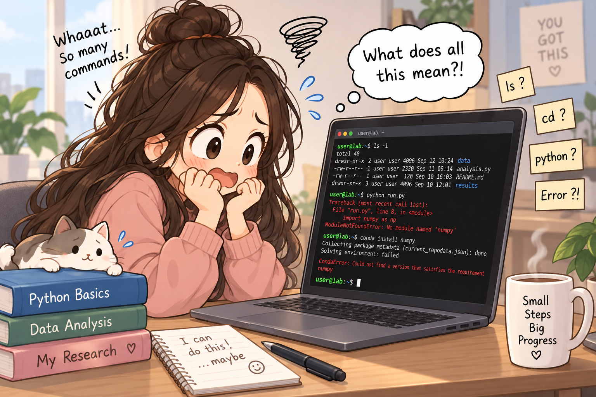
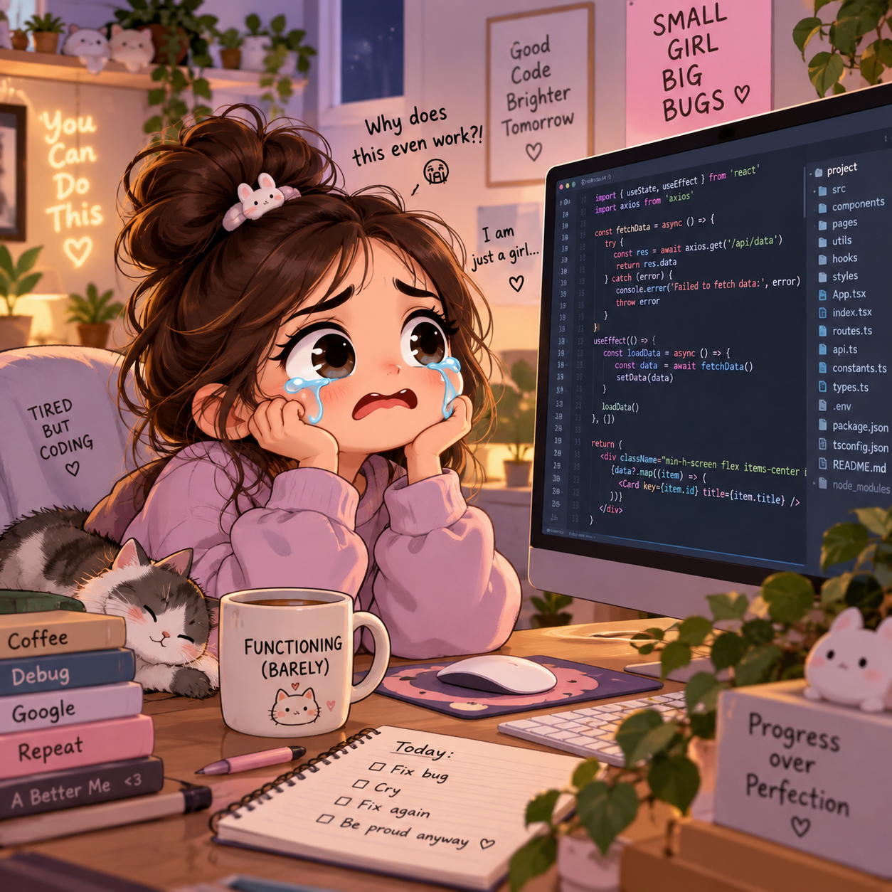
When I was in Class 11, I took a coding course for the first time.
I was very excited to learn programming, but the curriculum was
extremely descriptive in the beginning. I became
scared. One fine day, I cried in front of my computer, thinking,
“I cannot do this. Coding is not my cup of tea.”
However, I did not give up. I continued learning C programming by following the
curriculum one concept at a time. By the end of the course, I had
developed a better understanding of programming and achieved a good
score and till date I am learning new concepts.
In this tutorial, we will learn Python in a fun way. Now a days we It is a difficult task for all of us to sit and read. The tutorial will be friendly for vivid readers as well as those who don't like reading long paragraph. Long paragraphs will be sqeezed in toggle menu. You can check then if you feels like. If you want you can skip the 1st 10 lessions. Go to to coding directly. If you can't understand any term you can come back to respective section to check what it is. Also there is no shortcut for leaning. After every step you need to practie. Once you practice you will get to know the error you are getting. Just reading will not help you. Also please give one hour for a day. 15 minutes for reading one section and 45 minutes for coding. There will be lots of question for practice. Just try to solve them.
The learning process never truly ends. After approximately seven days of regular practice, you can begin writing small Python programs. From there, you will continue learning throughout your life as you encounter new problems, tools, and ideas.
The best way to become a better programmer is to use programming in your daily work. Automate a repetitive task, analyse a small dataset, perform a calculation, or create a simple figure. Every practical problem you solve will improve your programming ability.
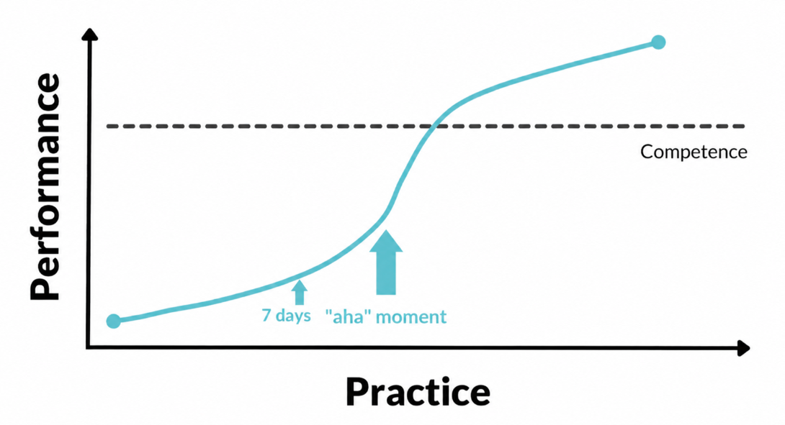
Many other tutorials have 100 lecture. Some are having 60 lecture. But when you see the number of chapter, or section or lecture, you will feel omg there's a lot to do. People get demotivated seeing many capters. Eveyone wants to finish the task as soon as possible. In this chapter The developer tries to touch all important topics and tries to give the practical aspect which can be finished in less than 1.5 month if you read daily one lesson.
It is almost impossible to learn every part of Python and you do not need to. Learn the fundamentals first, and then learn additional tools when your work requires them and focus on the area connected to your work or interests.
There will be lots of commands(syntax), Don't by heart them in the 1st instance. You will find most of the command related to the real world activities. Just try to relate them. If something is new and you can't remember them then come again when you need them. At the end you are the smartest one, not machine.
A carefully ordered course that begins with what programming means, explains language types and development tools, and gradually reaches practical scientific computing, data analysis, and machine learning.
The complete learning path is ready, but the lessons are intentionally empty. We will write and add one detailed lesson at a time so that the course stays easy to follow and easy to edit.
Understand programming, language types, Python, installation, interpreters, terminals, IDEs, and source files.
Use variables, numbers, strings, Boolean logic, input, output, and Python's essential collections.
Make decisions, repeat tasks, design reusable functions, understand scope, and build small programs.
Use NumPy, Pandas, Matplotlib, SciPy, scientific file formats, automation, and machine learning.
To know more about scientific graphs and publishable figures
Tick a lesson after you have studied it and completed its practice.
Your completion marks are saved automatically in this browser, so every student can maintain an individual learning record.
What comes to your mind when you hear the word Python? A big snake? Of course, a python is a large snake. But in the world of computers, Python is a fomous programming language. Python is a programming language created to make programs easier to read, write, and understand. Its design gives importance to clarity and simplicity.
Interestingly,the programming language was not actually named after the snake. Its creator, Guido van Rossum, named it after the British comedy programme Monty Python’s Flying Circus. He wanted a name that was short, memorable, and slightly playful.
Python was created by the Dutch programmer Guido van Rossum. He began developing it during the late 1980s while working at the Centre for Mathematics and Computer Science in the Netherlands. The first public version of Python was released in 1991. Guido wanted to create a programming language that was powerful but still easy to read. He believed that computer instructions should not look unnecessarily complicated. This focus on readability later became one of Python’s greatest strengths.
Stop for a moment and ask yourself this question honestly.
You might laugh after seeing this figure but you might be thinking why in your mind. Is it because my friend circle learn it? or is it because it will make my work simpler? So here is a disclaimer that learning python helps you simplify your work to some extentent. But it can't completely resolve all your problems. It can change the approches with may take comparatively small time.
Today, it is the world of following majorities. Although the concept is following majorities is sometimes good as well as bad, Let's inspect how many people uses python? and which language is more popular among coding world? If there is something better you may change you mind and you should stop here.

Python is used by a very large global community of students, professional developers, researchers, teachers, engineers, and data scientists.
According to the 2025 Stack Overflow Developer Survey , 57.9% of respondents reported using Python. Python's adoption increased by approximately seven percentage points compared with the previous year's survey.
GitHub's 2025 Octoverse report placed Python second by contributor count. It reported approximately 2.6 million Python contributors and strong growth in projects connected with AI and data science.
Do you know? When people google or ask, an AI assistant to solve a mathematical, scientific, data-processing, or beginner programming problem without naming a language, the answer is often written in Python.
Before continuing,
We have talked enough about Python. Now it is time to prepare your computer for it. Do not worry—you do not need to understand every button that appears on the screen.
Select your operating system below. The guide will stay with you one step at a time.
Follow one step at a time. Click the picture to enlarge it.
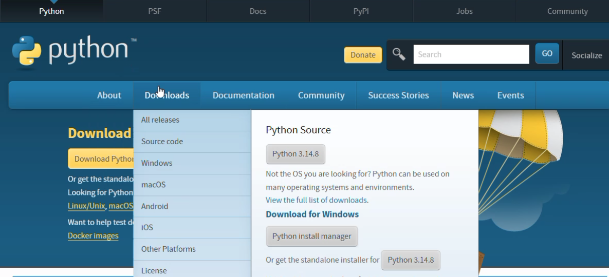
Add the image using the filename given for this step.
Visit the official Python download page. The website will recognize that you are using Windows.
Pause the video whenever you need time to complete a step.
Open Command Prompt and enter:
If you see something similar to Python 3.x.x, congratulations! Python is successfully installed.
First, we will choose a comfortable place to write Python. That place is called an IDE or code editor, and we will discuss it in the next lesson.
python3 to clearly indicate that we want to use
Python 3.
py --version. macOS and Linux users should
try python3 --version.
In the previous lesson, we installed Python. You may now be wondering: Why does my computer show a number such as Python 3.14.8? What is CPython? Why do people talk about NumPy, pandas, PyTorch, or Django?
These names belong to three different ideas: versions, implementations, and libraries. They sound technical, but the difference is simple.
A version tells us which edition or release of Python we are using—for example, Python 3.14.8.
An implementation is the actual software engine that reads and runs Python instructions.
A library is a collection of ready-made tools that helps us perform useful tasks without building everything ourselves.
The version is the model year. The implementation is the engine under the hood. The libraries are additional tools and features such as navigation, sensors, or a music system.
They belong to the same car, but they do different jobs.
Python continues to improve. Developers fix problems, improve performance, add features, and strengthen security. Each officially released form of Python receives a version number.
A Python version usually contains three numbers:
Change the numbers below and observe how a Python version is divided.
Major version · Minor version · Patch release
A major generation of the Python language. For beginners today, this will normally be Python 3.
A feature release within the same major Python generation.
Primarily contains bug corrections and security fixes.
The version displayed above is only an example for learning how Python version numbers work. The newest release changes as Python continues to develop. Always check the official Python website before installing Python.

For a beginner, a current stable Python 3 release is normally a good choice. In research or professional projects, You may need to downgrade python version. Some python packages may not developed or supported in with other library in a latest version. In that case you need to download the lower version which supports all your required libraries.
Python is a language with rules. Those rules describe how Python code should behave. But we still need a real program that reads those instructions and makes the computer perform them.
That program is called a Python implementation. Different implementations can follow the Python language while being designed for different computers or purposes.
Select an implementation to understand where it is commonly used.
CPython is the standard and most widely used implementation of Python. It is the implementation you normally receive from Python.org.
Best for: beginners, general programming, research, data science, automation, and web development.
Use CPython. Unless you have a special reason to choose another implementation, you do not need to make any decision. The Python downloaded from Python.org is normally CPython.
Imagine that you want to draw a graph. You could spend months writing everything required to create axes, colors, labels, lines, and image files or you could use a library whose developers have already built those tools.
A Python library is reusable code written to solve common problems. Libraries are one of the biggest reasons Python is so useful in science, research, artificial intelligence, automation, and web development. Some are alredy available in your current version. You need to install other libraries according to your need.
These tools are included when Python is installed. You do not normally need to download them separately.
Examples:
math
datetime
pathlib
json
csv
These libraries are created outside Python's standard library. We install them when a project requires them.
Examples:
NumPy
pandas
Matplotlib
PyTorch
Select the type of work that interests you. You do not need to learn all these libraries.
People sometimes use these words loosely. You do not need to memorize them today, but knowing the basic difference will prevent confusion.
| Term | Simple meaning | Think of it as |
|---|---|---|
| Module | A single Python file containing reusable code | One chapter |
| Package | A collection of related Python modules | A book containing chapters |
| Library | A collection of reusable tools for a purpose | A bookshelf |
| Framework | A larger structure that guides how an application is built | The plan of a building |
A researcher studying ocean data may use NumPy, xarray, netCDF4, and Cartopy. A web developer may use Django or FastAPI. A machine learning researcher may use PyTorch. All of them know Python, but their toolboxes are different.
Imagine that you have learned a new language and bought a pen but you still need a comfortable place to write. Python is the language, and the Python interpreter is what understands it. An editor or IDE is the workspace in which we write, organize, run, and correct our instructions.
There is no single “best” Python workspace for everyone. A beginner, a web developer, and a researcher may prefer different tools.
A flexible program for writing code. Additional features can be added using extensions. VS Code belongs mainly to this category.
An Integrated Development Environment combines an editor, project tools, code assistance, running, and debugging in one application. PyCharm is a full IDE.
A notebook divides work into cells and displays code, text, equations, figures, and results together. Jupyter uses this approach.
Python 3.x.x
Type "help" for more information.
>>>
IDLE is Python's simple Integrated Development and Learning Environment. It is usually included with the official Python installation.
We will mainly use VS Code because it is flexible,
works on Windows, macOS, and Linux, supports both
.py and .ipynb files, and can grow with
you from beginner projects to research work.
However, you are not forced to use it. The Python language remains the same in IDLE, VS Code, PyCharm, and Jupyter.
| Tool | Type | Main file | Best suited for | Setup | Computer resources |
|---|---|---|---|---|---|
| IDLE | Learning environment | .py |
First steps and small programs | Usually included | Low |
| VS Code | Extensible code editor |
.py,
.ipynb
|
General programming and research | Extension required | Moderate |
| PyCharm | Full Python IDE |
.py,
.ipynb
|
Large and structured projects | Separate installation | Moderate to high |
| JupyterLab | Notebook environment | .ipynb |
Data, figures, experiments, and research | Package installation | Moderate |
What do you mainly want to do with Python?
If IDLE is available, no separate download is necessary.
Current PyCharm installations include a Pro trial, after which the core features can continue to be used for free.
Windows:
macOS or Linux:
After installation, start it using:
JupyterLab will normally open inside your web browser.
An IDE is the workspace. The Python interpreter is the engine that runs the instructions. VS Code, PyCharm, and Jupyter must connect to an installed Python interpreter.
This is why VS Code sometimes displays Select Interpreter. It is asking: “Which installed Python should I use?”
.ipynb notebook files.
You may have noticed that some Python files end with
.py, while others end with .ipynb.
Both can contain Python code, but they store and present that
code in very different ways.
Think about a recipe. You could write the complete recipe on one continuous sheet of paper, or place each step on a separate card with photographs and notes.
A .py file is like the continuous sheet. It is the standard extension for Python source code.
The .ipynb is Interactive Python Notebook (Originally stands for IPython Notebook). It is like the collection of cards called cells. It is a file format used by Jupyter Notebook and other interactive computing environments to store and share code, text, and visualizations.
.py file
A .py file is a plain-text file
containing Python instructions. It is commonly
called a Python script or Python module.
.ipynb file
An .ipynb file is an interactive
notebook containing cells. A cell can contain
code, formatted text, equations, images, or output.
Select a file type to see how the same small analysis might appear inside it.
.py file run?
When Python is asked to run a .py file, the
interpreter reads and executes the instructions in the file.
Usually, it begins at the top and moves downward.
analysis.py can be run
from a terminal using:
python analysis.py
IDEs such as IDLE, VS Code, and PyCharm can run the same file using a Run button. The button eventually asks a Python interpreter to execute the file.
.ipynb notebook run?
A notebook is divided into cells. Each code cell can be run separately using the run button. Run button attaches to the cell and executes its content. The result normally appears directly below the cell.
Contains Python instructions that can be sent to a Python kernel for execution.
Contains headings, explanations, lists, links, images, or mathematical equations.
.py file
A .py file stores ordinary text. If
you open it with a text editor, you see the Python
instructions directly.
temperature = 27.5
location = "Kaohsiung"
.ipynb file
An .ipynb file is a plain-text document structured in JSON format that stores the complete contents, history, and outputs of an interactive computing session.
{
"cells": [],
"metadata": {},
"nbformat": 4
}
.ipynb file. Open it using JupyterLab,
Jupyter Notebook, VS Code, or another notebook-compatible
application.
.py and .ipynb
Neither format is always better. Each one is designed for a different style of work.
| Feature | .py |
.ipynb |
|---|---|---|
| Basic structure | Continuous text file | Collection of interactive cells |
| Execution | Normally runs from top to bottom | Cells can be run separately |
| Explanations | Usually written as comments | Markdown cells support rich explanations |
| Saved output | Normally not stored inside the file | Can store output and figures |
| Best for | Scripts, programs, modules, and automation | Research, teaching, and exploration |
| Version control | Simple to compare line by line | More difficult because it contains JSON and output |
| Typical applications | IDLE, VS Code, PyCharm | JupyterLab, Jupyter Notebook, VS Code |
Enter a filename and let us identify its file type.
Select the type of work you want to do.
Researchers and data scientists frequently begin with a notebook and later move reusable parts into Python files.
.ipynb notebook.
.py files.
No. Changing analysis.py to
analysis.ipynb does not convert the file into a
notebook. The two formats have different internal structures.
.ipynb file contain Python only?
No. A notebook can contain Python code, Markdown text, equations, images, metadata, and stored output. Jupyter also supports kernels for some other programming languages.
Yes. VS Code can open .py files using its
Python support. It can also open .ipynb
notebooks when the required Python and Jupyter extensions
are installed.
Not always. A notebook is excellent for exploration and explanation. A Python file is generally better for reusable scripts, modules, applications, and automated workflows.
Notebook output can be stored inside the
.ipynb file. That output may include text,
tables, images, and visualizations.
Yes. A project can use notebooks for exploration and presentation while keeping reusable calculations and functions inside Python files.
The terminal may look like a frightening black window filled with unfamiliar text. But it is simply another way to talk to your computer that is one short command at a time.
When we use buttons and menus, we communicate with the computer through a graphical interface. In a terminal, we communicate by typing short text instructions.
The terminal is not only for expert programmers. We will use it for simple tasks such as checking Python, moving between folders, installing libraries, and running files.
People often use the words interchangeably, but they describe different parts of the command-line experience.
The terminal is the visible application or window. It displays text, accepts keyboard input, and shows the result of a command.
The shell works inside the terminal. It reads your command, interprets it, and asks the operating system or another program to perform the task.
The tools available to you depend mainly on your operating system.
Command Prompt uses the traditional Windows command
interpreter called cmd.exe. It supports
commands such as dir, cd,
and cls.
PowerShell is a newer command-line shell and scripting
environment. It provides commands called cmdlets,
such as Get-Location and
Get-ChildItem.
Bash and Zsh are common Unix-style shells. Bash is widely used on Linux, while modern macOS systems use Zsh as the default login shell.
Linux and macOSThe prompt is the text shown before the place where you type. It often displays your username, computer name, or current folder.
C:\Users\Learner>
PS C:\Users\Learner>
learner@computer:~$
$ python3 --version,
type only python3 --version. The
$ represents the prompt.
Select a shell and try the suggested commands. This is only a webpage simulation—it will not change anything on your computer.
A command can contain a program name, an option, and an argument. Not every command requires all three.
python
Program
-m
Option
pip
Argument
--version
Additional argument
python -m pip --version. It asks your
selected Python interpreter to open the pip
module and display its version.
Different shells sometimes use different commands for the same task.
| Task | Command Prompt | PowerShell | Bash / Zsh |
|---|---|---|---|
| Show current folder | cd |
Get-Location |
pwd |
| List files and folders | dir |
Get-ChildItem |
ls |
| Enter a folder | cd folder |
cd folder |
cd folder |
| Move to parent folder | cd .. |
cd .. |
cd .. |
| Create a folder | mkdir folder |
mkdir folder |
mkdir folder |
| Clear the screen | cls |
Clear-Host |
clear |
| Check Python | py --version |
python --version |
python3 --version |
| Leave the shell | exit |
exit |
exit |
A path describes the location of a file or folder on your computer.
C:\Users\Haripriya\python-learning
Windows paths normally use backslashes
(\).
/home/haripriya/python-learning
Unix-style paths use forward slashes
(/).
cd "Python Projects".
A terminal is powerful because commands can make changes quickly. That power should be used carefully.
Complete these steps using the terminal on your computer. They do not delete or overwrite any files.
cd, Get-Location, or
pwd.
dir, Get-ChildItem, or
ls.
mkdir python-learning.
cd python-learning.
py --version,
python --version, or
python3 --version.
No. The terminal provides a place to enter commands. Python is a separate program that can be started from the terminal.
No. Both are available on Windows, but they are different shells. PowerShell provides its own cmdlets and more advanced scripting capabilities.
The command depends on the operating system and how
Python was installed. Windows often supports
py or python, while Linux and
macOS commonly use python3.
Yes. VS Code has an integrated terminal. Depending on your system and settings, it may open PowerShell, Command Prompt, Bash, Zsh, or another installed shell.
No. Closing a normal terminal window ends that terminal session, but files already saved on your computer remain there.
No. Begin with a few commands such as cd,
ls or dir,
mkdir, and the Python version command.
Repeated use will gradually make them familiar.
Python is installed, your editor is ready, and you understand the terminal. Now it is time to create a real Python file, write your first instructions, and ask Python to run them.
Writing code is only one part of programming. We also need to save the code inside a file, choose the correct Python interpreter, run the file, and examine the output.
We will demonstrate this workflow using VS Code. The same basic process also applies to IDLE, PyCharm, and other Python editors.
Three separate components work together when you run Python code in VS Code.
Follow each step carefully. Small details such as the folder, filename, and selected interpreter are important.
Create a folder named
python-learning. This folder will
contain the files created during this course.
You can create it using your file manager or the terminal:
Open VS Code and select:
Opening a folder creates a workspace. New files will appear inside the Explorer panel.
Select the New File button in the Explorer panel and name the file:
The .py extension tells VS Code that
this is a Python source file.
Open the Command Palette using
Ctrl + Shift + P. On macOS, use
Command + Shift + P.
Search for:
Select the Python installation you installed earlier.
Type the following line inside
first_program.py:
The print() instruction asks Python
to display something on the screen.
Press Ctrl + S on Windows or Linux.
On macOS, press Command + S.
A small dot beside the filename usually indicates that the file contains unsaved changes.
Select the triangular Run Python File button near the upper-right corner of the editor.
VS Code opens its integrated terminal and asks the selected Python interpreter to run the file.
In languages such as C or C++, programmers normally perform a separate compilation step that creates an executable file. Python usually hides this step from the beginner.
.py file.
These methods run the same file using the selected Python interpreter.
Select the triangular Run Python File button in the upper-right corner of VS Code.
Run Python File
Right-click inside the editor and select the Python run option.
Run Python File in Terminal
Open the terminal in the folder containing your Python file and enter a command.
python first_program.py
py first_program.py. On Linux or macOS, you
may need python3 first_program.py.
Edit the message and press Run. This is a safe browser simulation of a small part of Python—it does not execute code on your computer.
print(). Use VS Code,
IDLE, PyCharm, or Jupyter to run complete Python code.
A clear filename makes your project easier to understand and avoids several common problems.
first_program.pytemperature_analysis.pystudent_results.pyplot_velocity.pymy program.py — contains a space1program.py — begins with a numberpython.py — may cause confusionnumpy.py — may hide the real library.py extension for a Python
source file.
| Action | Windows/Linux | macOS |
|---|---|---|
| Save file | Ctrl + S |
Command + S |
| Command Palette | Ctrl + Shift + P |
Command + Shift + P |
| Open terminal | Ctrl + ` |
Control + ` |
| Find text | Ctrl + F |
Command + F |
| Comment or uncomment | Ctrl + / |
Command + / |
Confirm that the file ends with .py and that
the Microsoft Python extension is installed and enabled
in VS Code.
Open the Command Palette, select Python: Select Interpreter, and choose your installed Python version. If Python was installed while VS Code was open, restart VS Code.
The terminal may be in a different folder. Use
dir or ls to check whether the
Python file is present in the current folder.
Save the file before running it. Press
Ctrl + S or Command + S, then
run the file again.
Read the final line of the error first. Check the filename, quotation marks, parentheses, spelling, and indentation. Errors are part of programming and usually tell us where to begin investigating.
Make sure you selected Run Python File in Terminal. Some extensions may send output to an Output panel or Debug Console instead.
Complete these steps using your actual code editor.
python-learning folder in VS Code.
about_me.py.
print() to display your name.
print() instruction describing
why you want to learn Python.
.py.
No. In normal Python development, you run the source file directly. Python automatically performs the necessary internal bytecode compilation.
VS Code is the editor where you write and organize code. Python is the interpreter that executes the instructions.
.py?
The extension identifies it as a Python source file. It helps the editor provide Python syntax coloring, suggestions, formatting, and appropriate run options.
Yes. A saved Python file can be run from Command Prompt, PowerShell, Terminal, IDLE, PyCharm, or another Python-compatible environment.
.pyc file?
It is a cached bytecode file that Python may create automatically. Beginners normally do not need to open, edit, or create it manually.
VS Code may initially look like an aeroplane cockpit: buttons, panels, icons, and menus everywhere. You do not need to learn everything at once. Let us understand only the tools needed for writing Python.
Visual Studio Code is a flexible code editor. You can use it to write C++ code, Python code, or other programming languages like html, CSS, java script. In this tutorial we will focus on using VS Code for Python development. By itself, it is not Python and does not include a Python interpreter.
We need to add the Python extension for VS Code to provide full Python development support. After adding the Python extension, VS Code can help us write, run, organize, inspect, and debug Python programs. The same editor can later support Jupyter notebooks, Git, remote servers, and many other programming languages.
The below figure is a typical VS Code interface. You can hide the components and adjust their space consumption by dragging them up down or left right. Click the different regions of the interface below to learn what they do.
VS Code is a general code editor. An extension teaches it how to provide tools for a particular language or type of work. Follow the four illustrated steps below before writing code.
.ipynb notebooks in this course.
Shortcut: press Ctrl + Shift + X on
Windows/Linux or
Command + Shift + X on macOS.
ms-python.python.
Searching by the exact ID helps you avoid choosing a different extension with a similar name.
VS Code may also add supporting Microsoft extensions such as Pylance and Python Debugger.
Identifier: ms-python.python
ms-toolsai.jupyter.
Jupyter is needed for the notebook lessons that use
.ipynb files. It is not required merely
to run ordinary .py files.
Identifier: ms-toolsai.jupyter
Complete both checks when the installations finish.
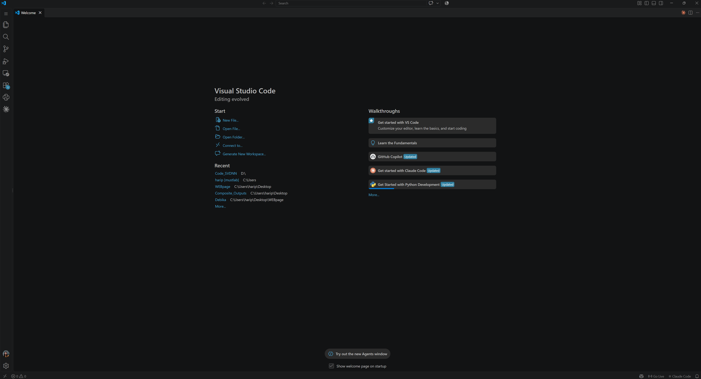
Click Open Folder..., choose the folder
containing your project, then open a
.py or .ipynb file from the
Explorer panel.
Press Ctrl + Shift + P, search for
Create: New Jupyter Notebook, and save
the new file with an .ipynb extension.
In a notebook, click Select Kernel at the top-right, choose your Python environment, then use the button beside a cell to run it.
.ipynb notebooks;
a Python interpreter runs ordinary
.py files.
A computer may contain several Python installations. VS Code needs to know which one should run the current project.
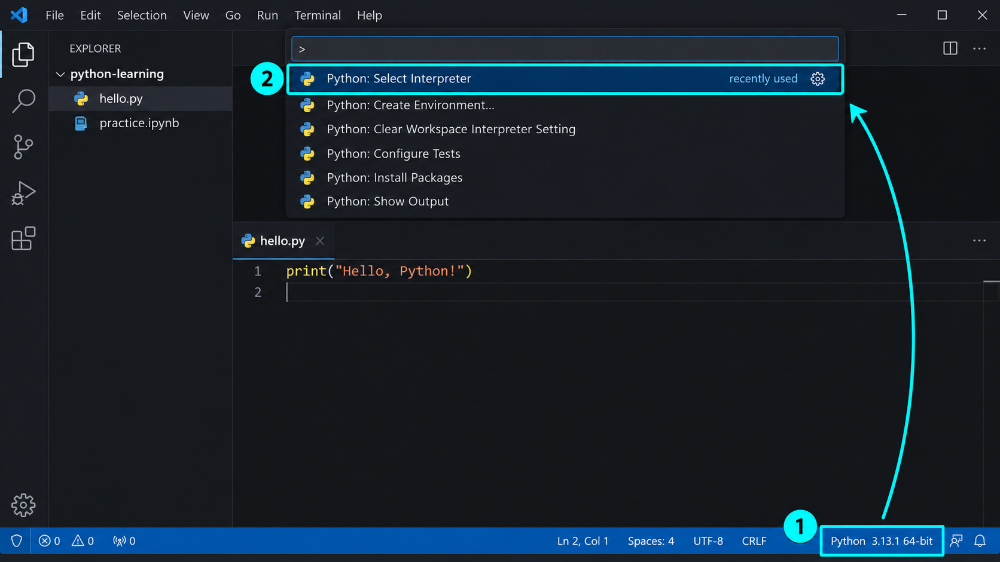
As you type, VS Code can suggest functions, variables, methods, and installed packages. This assistance is called IntelliSense.
VS Code contains a terminal panel, so you do not need to switch to a separate Command Prompt or Terminal application.
python first_program.py
Ctrl + `. You can also use
Terminal → New Terminal.
A notebook contains Python code, notes, and output in one file. Click a toolbar control below to learn what it does.
Running tells us whether a program works. Debugging lets us pause the program and inspect what is happening internally.
F5 and select Python File.
| Action | Windows/Linux | macOS |
|---|---|---|
| Command Palette | Ctrl + Shift + P |
Command + Shift + P |
| Save file | Ctrl + S |
Command + S |
| Open terminal | Ctrl + ` |
Control + ` |
| Extensions view | Ctrl + Shift + X |
Command + Shift + X |
| Run and Debug view | Ctrl + Shift + D |
Command + Shift + D |
| Start debugging | F5 |
F5 |
| Find text | Ctrl + F |
Command + F |
| Comment a line | Ctrl + / |
Command + / |
A Jupyter notebook can contain your explanation, Python code, results, graphs, and images in one organised project file.
Click + Markdown in the notebook toolbar.
Add headings, short explanations, lists, and results.
Press Ctrl + Enter to turn Markdown into a formatted page.
images folder inside your project folder.Ctrl + Enter to render the image.
After writing your Markdown, code, figures, and results, you can
export your .ipynb notebook as an HTML page or PDF report.
Press Ctrl + S to save your notebook.
Run all cells so that figures, tables, and results appear.
Click the three dots ... in the notebook toolbar.
Select Export, then choose HTML or PDF.
Ctrl + P and choose
Save as PDF.
.ipynb notebook can become a complete project
report. A normal .py file is mainly for Python code,
so it does not export as a complete report in the same way.
No. VS Code, the Python extension, and the Python interpreter are separate components. Python must be installed and then selected inside VS Code.
No. The official Python extension can run Python files directly. Beginners can avoid Code Runner because it may use a different output panel or interpreter configuration.
It determines which Python installation and packages are used for running, debugging, autocomplete, and other Python features in the workspace.
It is a searchable list of VS Code commands. Open it using
Ctrl + Shift + P or
Command + Shift + P.
No. A breakpoint is a debugging marker that deliberately pauses the program so you can inspect its current state.
We have prepared our computer, explored the terminal, and learned how to use VS Code. Now we are finally ready to give Python an instruction and watch the computer follow it.
Python
Code → Result
You write Python instructions in a language that humans can read. However, the computer's processor does not directly understand those instructions.
The Python interpreter is the program that reads your Python code, checks it, translates it into instructions Python can execute, and produces a result.
Python can execute instructions interactively or read them from a saved Python file.
Open Command Prompt, PowerShell, Terminal, or the integrated terminal in VS Code. Then enter the command appropriate for your system.
py
The Python launcher commonly used on Windows.
python
Works when Python is available through your system path.
python3
Common command for starting Python 3 on Unix-style systems.
>>>. This is the Python prompt. It
means that Python is waiting for your instruction.
>>> symbol when
copying an example from a tutorial. It represents the
interpreter prompt, not part of the Python instruction.
Open python in interactive mode or VS code. Then type the following instructions. You should see the same output as shown below.
Save the file and select Run Python File. You should see:
Change the messages and select Run. This is a safe webpage
simulation supporting simple print()
instructions. Remember that if you are printing a message keep it inside quotation marks. We will learn more about quotation marks in the upcoming lessons.
No. VS Code is an editor. The Python interpreter is the program that actually executes Python instructions.
>>> mean?
It is Python's primary interactive prompt. It means the interpreter is waiting for the next instruction.
>>> before every command?
No. Python displays that prompt automatically in
interactive mode. It should not be copied into a
.py file.
Interactive mode executes one instruction immediately. Script mode executes instructions saved inside a Python source file.
Quotation marks tell Python that the enclosed characters are literal text rather than the name of a variable or another Python instruction.
Enter exit() and press Enter. Keyboard
shortcuts for ending the session also exist, but
exit() is clear and easy for beginners.
Before writing large programs, learn these small rules. Most beginner errors happen because of one missing letter, space, file, or symbol—not because Python is difficult.
A file path tells Python where a file is stored on your computer. Beginners often see an error simply because Python is looking in the wrong folder. You can simply copy the file by "ctrl+c" and paste into VS-code "Code editor" by "ctrl+v". It will automatically set the path for you.
data/temperature.csv
General Practice: Keep your data inside your project folder whenever possible.
Then use a simple relative path such as
data/temperature.csv.
Capital and small letters are different in Python.
print, Print, and
PRINT are not the same instruction.
print("Hello")
Print("Hello")
Write Python keywords exactly as shown in examples.
In Python, indentation refers to the whitespaces (spaces or tabs) added at the beginning of a line of code. You can't write one line from starting of the row and the next line with some spaces.
print("Hello")
print("It is hot")
This is wrong indentation. The second line should not have spaces before it. It should be like this:
print("Hello")
print("It is hot")
We will learn more about indentation: where to use spaces and tabs in the upcoming lessons.
The end of a filename tells VS Code what type of file it is.
Python programs should normally end with .py.
my_first_program.py
my_first_program.ipynb
my_first_program
my_first_program.txt
Jupyter Notebook projects use the extension
.ipynb.
Python notices missing quotation marks, brackets, parentheses, and colons. Check that every opening symbol has a closing partner.
Rule of thumb: If you open a symbol, you must close it. If you start a string with a quotation mark, you must end it with the same type of quotation mark. This will prevent syntax errors.print("Hello")
print("Hello)
print("Hello"
print("Hello')
When an error appears, first check quotation marks, parentheses, square brackets, and colons.
Before running your program, check the file path, capital letters, indentation, file extension, and matching symbols.
Every programmer sees errors—even people who have been programming for twenty years. An error does not mean that you have failed. It means that your program has given you a clue about what needs attention.
When a Python instruction cannot be understood or completed, Python displays an error message. The message usually tells us what kind of problem occurred and where Python noticed it.
Learning programming does not mean learning how to avoid every error. It means learning how to read, investigate, and correct errors.
Programming is usually a repeated process rather than a straight path from code to success.
Beginners often call every problem an “error,” but it helps to separate them into three broad groups.
Python cannot understand the structure of the instruction. A quote, parenthesis, colon, or another required symbol may be missing.
The instruction is structurally valid, but a problem occurs while Python is executing it, such as dividing by zero or using an undefined name.
The program runs without displaying an error, but the result is incorrect because the instructions do not represent the intended logic.
A traceback is the report Python displays when an unhandled exception stops the program.
The final line gives the error type and a short
explanation:
NameError.
Python reports the filename and line number where the problem was noticed.
Examine the displayed code and nearby lines. The real cause may appear just before the highlighted position.
Select an error type. Read the broken code and traceback before revealing the correction.
When an error appears, avoid changing many unrelated lines. Use a small, repeatable investigation process.
A logic error occurs when the program runs but produces an incorrect answer.
total = 100
students = 4
average = total * students
print(average)Output: 400
total = 100
students = 4
average = total / students
print(average)Output: 25.0
print("Hello") and confirm that it works.
print to Print and
identify the error type.
print(10 / 0) and examine the traceback.
No. Errors occur during ordinary programming work at every experience level. Your skill is demonstrated by how you investigate and learn from them.
For a beginner, the final line is often the best starting point because it gives the error type and message. Then move upward to find the filename, line number, and code.
No. Syntax errors occur when Python cannot parse the code. Other problems occur during execution and are called exceptions.
Python usually points to the place where it noticed that something was wrong. The actual cause may appear earlier, such as an unclosed quote or parenthesis on the previous line.
Python checks whether an instruction is valid, but it does not always know your intention. Valid instructions can still represent the wrong calculation or logic.
Usually, search for the error type and the most important part of the final message. Remove personal paths, usernames, passwords, tokens, and confidential project information before sharing an error online.
All programs store everything in variables. Think of a variable as a container that holds a value. Whatever you put in the variable stored in that variable.But if you put a new value in the variable, it will replace the old value. If you organise the files or your belongings properly with labels, you can find them easily. You don't need to remember where you put each item. So most of time we label on medicines, food items and necessary things. A person/ student can finish daily life work much faster ifhe/she is organised properly. Computer is considered as most perfect tool. It can't store anything without labelling. The variable name is like a label on the container.
Suppose you have a box containing the number 21. To find it again, you attach the label age to the box.
In Python, we can write this as:
Here, age is the variable name and
21 is the value assigned to it.
A variable is a name that refers to a value in a program. We use that name whenever we want to work with the value.
Python understands the type of each value automatically. We do not have to declare whether a variable contains text, a whole number, a decimal number, or a Boolean value.
The = symbol is called the
assignment operator. It assigns the value on its
right to the variable name on its left.
score
The variable name
85
The value being assigned
= means assignment. Don't confused it with "is equal to"
in the mathematical sense. For integer, float and boolean values, we can write the number or True/False after "=" sign. But in case of strings and characters, we need to use quotes. If you use a=Roy.
Then Python will think that Roy is a variable name and we need to assign the value of Roy to a. But if you use a="Roy" or a='Roy', then Python will understand that Roy is a string value.
The name “variable” tells us that its value can vary or change while the program is running.
student_name = "Ravi"
sample_temperature = 18.7
product_price = 499
is_logged_in = False
Enter a variable name and a value. This activity will show how the assignment looks in Python.
We can choose variable names, but Python requires us to follow a few rules.
age and _result are valid.
2age is not valid.
After the first character, names may contain letters, digits, and underscores.
Use student_name, not
student name or student-name.
Names such as if, for,
class, and True have special
meanings in Python.
score, Score, and
SCORE are three different names.
water_temperature is clearer than
x when storing water temperature.
| Avoid | Better name | Why? |
|---|---|---|
| n | student_name | Explains what the text represents. |
| x1 | sample_count | Describes the stored number. |
| temp | water_temperature | Removes confusion about which temperature. |
| p | product_price | Makes the program readable. |
student_name.
Sometimes we store a value that should remain unchanged. Python does not lock the value, but programmers write its name in capital letters as a warning.
These are called constants by convention. Python can still change them, but their capitalized names tell other programmers that they should not be changed.
Type a possible variable name and check whether it follows the beginner-friendly Python naming rules.
Create variables to store your name, age, subject, and whether you enjoy learning Python.
You already know how to give one variable a value. But science, research, and everyday programs often need several values, such as temperature, pressure, and density.
Should we use commas, semicolons, spaces, or separate lines when assigning several values?
temperature = 25.0
pressure = 101.3
density = 1.18This is the clearest and most common style. Press Enter after each assignment and write the next one on a new line.
temperature = 25.0; pressure = 101.3; density = 1.18Python allows semicolons, but this style becomes difficult to read. Write clean programs on separate lines instead.
Use commas when you want to assign several matching values in a single line. Python connects values from left to right.
temperature, pressure, density = 25.0, 101.3, 1.18temperature
25.0
pressure
101.3
density
1.18
The first variable receives the first value, the second variable receives the second value, and so on. This is called multiple assignment.
Look carefully at the comma after 3. It does not produce an
error immediately, but it changes a from a number into a
one-item tuple.
a = 3,
b = 5
print(a) # (3,)
print(type(a)) # <class 'tuple'>
print(b) # 5a = (3,)
A comma after one value creates a tuple. Parentheses are optional in Python, but the comma is important.
a = 3
Remove the comma when you want a to store one normal
number.
a = 3,
b = 5
print(a + b)
Python cannot add a tuple (3,) and an integer
5.
a, b = 3, 5
print(a) # 3
print(b) # 5Here, Python matches the first variable with the first value and the second variable with the second value.
| Situation | Use | Example |
|---|---|---|
| Assign one variable | = |
temperature = 25.0 |
| Assign several matching variables on one line | , and = |
x, y = 10, 20 |
| Write assignments separately | Press Enter | x = 10y = 20 |
| Separate normal Python statements | Do not use a semicolon | x = 10y = 20 |
You do not need to type every value one by one. Later, you will learn how Python reads tables efficiently using lists, CSV files, Pandas, and NumPy.
= assigns a value. Python uses
== when it needs to compare two values. We will
learn comparisons in a later lesson.
total_price are easier to understand.
Python can act as a simple calculator, but its real power begins when calculations become part of a larger program. In this lesson, we will work with numbers and learn the symbols Python uses for arithmetic.
Researchers calculate averages, engineers calculate forces, businesses calculate profit, and students calculate grades. Python uses familiar mathematical ideas but represents some operations with special symbols.
For example, Python uses ** for powers and
% for the remainder after division.
Python has three main built-in numeric types: integers, floating-point numbers, and complex numbers.
int
Integer
A whole number without a decimal point. It may be positive, negative, or zero.
25
-7
0
float
Floating-point number
A number containing a decimal point or written using scientific notation.
27.5
-0.03
1.2e3
complex
Complex number
A number containing a real and an imaginary part.
Python uses j for the imaginary unit.
3 + 5j
-2j
4 - 1.5j
Python's built-in type() function tells us the
type of a value.
print(type(25))
# Output:
<class 'int'>print(type(25.0))
# Output:
<class 'float'>a=(3,)
print(type(a))
# Output:
<class 'tuple'>print(type("hello"))
# Output:
<class 'str'>25 and 25.0 represent
the same mathematical quantity, Python stores them as
different numeric types.
An operator is a symbol that tells Python to perform an operation on one or more values.
8 + 3 → 11
8 - 3 → 5
8 * 3 → 24
8 / 3 → 2.666...
8 // 3 → 2
8 % 3 → 2
2 ** 3 → 8
* for multiplication and it does not use the
handwritten symbol ×. It uses
** for exponentiation instead of mathematical notation
^.
Suppose 17 samples must be placed equally into groups of 5. Python can answer three different questions.
17 / 5
3.4
How many groups exactly?
17 // 5
3
How many complete groups fit?
17 % 5
2
How many samples remain?
Enter two numbers and choose a Python arithmetic operator. This calculator reproduces the basic behavior of the selected operator.
When one expression contains several operators, Python follows an order of operations "BADMAS(brackets, orders, division,multiplication, addition,subtraction)". Parentheses can be used to make your intended order clear.
( )
Expressions inside parentheses.
**
Exponentiation.
*, /, //, %
Multiplication, division, floor division, and modulo.
+, -
Addition and subtraction.
result = 2 + 3 * 4
print(result)
# Output: 14Multiplication happens before addition.
result = (2 + 3) * 4
print(result)
# Output: 20The expression inside parentheses happens first.
The symbols + and - can work between two
numbers, or they can work on one number.
+x
Keeps the numerical value unchanged.
x = 5
print(+x) # 5-x
Changes the sign of a number.
x = 5
print(-x) # -5x++ or x--
x++
x--These produce a syntax error when written as complete Python statements.
x += 1 # Increase x by 1
x -= 1 # Decrease x by 1These are called augmented assignment operators.
x = 10
x += 1
print(x) # 11
x -= 3
print(x) # 8
x *= 2
print(x) # 16
x /= 4
print(x) # 4.0x = 5
print(++x) # 5
print(--x) # 5
These do not change x. Python reads ++x as
+(+x) and --x as -(-x).
Avoid using them—they are confusing.
total = 85 + 92 + 78
average = total / 3
print(average)Output: 85.0
length = 12
width = 5
area = length * width
print(area)Output: 60
number = 17
remainder = number % 2
print(remainder)A remainder of 0 means even; 1 means odd.
side = 6
area = side ** 2
print(area)Output: 36
Computers store most floating-point values using binary approximations. As a result, some decimal calculations may display a tiny representation difference.
Division by zero is undefined. Python stops the calculation
and reports a ZeroDivisionError.
/, //, and
% all require a nonzero divisor.
Write the Python program yourself first. Use the displayed formula as guidance, then click View answer to compare your solution.
Store tumour length, width, and height in millimetres. Estimate its ellipsoid volume.
Formula: volume = (pi / 6) * length * width * height
Store initial and final numbers of cells. Calculate how many times the cell population increased.
Formula: growth_factor = final_cells / initial_cells
Store cell counts from a control sample and a treated sample. Calculate the percentage reduction.
Formula: inhibition = ((control - treated) / control) * 100
Store total experiment time in hours and the number of population doublings. Find the average doubling time.
Formula: doubling_time = total_time / doublings
Store stock concentration, volume taken from stock, and final total volume. Calculate the diluted concentration.
Formula: final_concentration = (stock_concentration * stock_volume) / final_volume
Store initial position, velocity, and travel time. Calculate the final position.
Formula: final_position = initial_position + velocity * time
Store an object's mass and velocity. Calculate its kinetic energy.
Formula: kinetic_energy = 0.5 * mass * velocity ** 2
Store mass, gravitational acceleration, and height. Calculate gravitational potential energy.
Formula: potential_energy = mass * gravity * height
Store appliance wattage, daily usage hours, number of days, and cost per kWh. Calculate energy use and cost.
Formula: energy_kwh = (watts / 1000) * hours * days
Store wave frequency and wavelength. Calculate wave speed.
Formula: wave_speed = frequency * wavelength
Store mass in grams and molar mass in g/mol. Calculate the number of moles.
Formula: moles = mass / molar_mass
Store moles of solute and volume in litres. Calculate molarity.
Formula: molarity = moles / volume_litres
Store the mass of solute and total mass of solution. Calculate mass percentage.
Formula: mass_percent = (solute_mass / solution_mass) * 100
Store moles, gas constant, temperature in Kelvin, and volume. Calculate pressure.
Formula: pressure = (moles * R * temperature) / volume
Store actual product mass and theoretical product mass. Calculate percentage yield.
Formula: percent_yield = (actual_yield / theoretical_yield) * 100
Store a radius and calculate area and circumference.
Formula: area = pi * radius ** 2
Store x₁, y₁, x₂, and y₂. Calculate the distance between the two points.
Formula: distance = ((x2 - x1) ** 2 + (y2 - y1) ** 2) ** 0.5
Store principal amount, annual rate as a decimal, and time in years. Calculate interest and final amount.
Formula: interest = principal * rate * time
Store marks from five tests, each out of 100. Calculate average and percentage.
Formula: average = total_marks / 5
Store a, b, and c for the equation ax² + bx + c = 0. Calculate both roots.
Formula: root = (-b ± (b ** 2 - 4 * a * c) ** 0.5) / (2 * a)
pi = 3.14159
length = 20
width = 12
height = 10
volume = (pi / 6) * length * width * height
print("Estimated volume:", volume, "mm³")initial_cells = 5000
final_cells = 18000
growth_factor = final_cells / initial_cells
print("Growth factor:", growth_factor)control_cells = 12000
treated_cells = 7500
inhibition = ((control_cells - treated_cells) / control_cells) * 100
print("Inhibition:", inhibition, "%")total_time = 48
doublings = 3
doubling_time = total_time / doublings
print("Doubling time:", doubling_time, "hours")stock_concentration = 100
stock_volume = 2
final_volume = 20
final_concentration = (stock_concentration * stock_volume) / final_volume
print("Final concentration:", final_concentration)initial_position = 5
velocity = 12
time = 8
final_position = initial_position + velocity * time
print("Final position:", final_position, "m")mass = 4
velocity = 6
kinetic_energy = 0.5 * mass * velocity ** 2
print("Kinetic energy:", kinetic_energy, "J")mass = 5
gravity = 9.81
height = 12
potential_energy = mass * gravity * height
print("Potential energy:", potential_energy, "J")watts = 80
hours_per_day = 6
days = 30
cost_per_kwh = 3.5
energy_kwh = (watts / 1000) * hours_per_day * days
cost = energy_kwh * cost_per_kwh
print("Energy used:", energy_kwh, "kWh")
print("Estimated cost:", cost, "NTD")frequency = 2.5
wavelength = 4
wave_speed = frequency * wavelength
print("Wave speed:", wave_speed, "m/s")mass = 18
molar_mass = 18.015
moles = mass / molar_mass
print("Number of moles:", moles, "mol")moles = 0.25
volume_litres = 0.5
molarity = moles / volume_litres
print("Molarity:", molarity, "mol/L")solute_mass = 15
solution_mass = 250
mass_percent = (solute_mass / solution_mass) * 100
print("Mass percentage:", mass_percent, "%")moles = 1.2
R = 0.0821
temperature = 300
volume = 10
pressure = (moles * R * temperature) / volume
print("Pressure:", pressure, "atm")actual_yield = 8.4
theoretical_yield = 10
percent_yield = (actual_yield / theoretical_yield) * 100
print("Percentage yield:", percent_yield, "%")pi = 3.14159
radius = 7
area = pi * radius ** 2
circumference = 2 * pi * radius
print("Area:", area)
print("Circumference:", circumference)x1 = 2
y1 = 3
x2 = 8
y2 = 11
distance = ((x2 - x1) ** 2 + (y2 - y1) ** 2) ** 0.5
print("Distance:", distance)principal = 10000
rate = 0.04
time = 3
interest = principal * rate * time
final_amount = principal + interest
print("Interest:", interest)
print("Final amount:", final_amount)mark1 = 80
mark2 = 75
mark3 = 92
mark4 = 86
mark5 = 90
total_marks = mark1 + mark2 + mark3 + mark4 + mark5
average = total_marks / 5
percentage = (total_marks / 500) * 100
print("Average:", average)
print("Percentage:", percentage, "%")a = 1
b = -5
c = 6
discriminant = b ** 2 - 4 * a * c
root1 = (-b + discriminant ** 0.5) / (2 * a)
root2 = (-b - discriminant ** 0.5) / (2 * a)
print("First root:", root1)
print("Second root:", root2)/ performs ordinary division and returns a
floating-point result. // performs floor
division and rounds the mathematical result downward.
/ operator returns a
floating-point result even when the mathematical answer
is a whole number. For example, 8 / 4
returns 2.0.
Until now, we have worked mainly with numbers. But programs also need to handle names, messages, file names, emails, passwords, answers from users, and much more. In Python, text is called a string.
A string is a collection of characters written inside quotation marks. Letters, spaces, symbols, and even numbers can be part of a string.
name = "Haripriya"
message = 'Welcome to Python!'
year_as_text = "2026"
print(name)
print(message)
"2026" is text because it is inside quotation marks.
But 2026 without quotation marks is a number.
Both single and double quotation marks can create strings.
course = "Python"
teacher = 'Guido van Rossum'Use the other type of quotation mark when your text already contains a quote.
sentence = "She said, 'Hello!'"
Python can count how many characters are in a string using
len().
word = "Python"
print(len(word)) # 6Spaces and punctuation marks are also counted as characters.
Use + to join strings. This is called
concatenation.
first_name = "Asha"
last_name = "Das"
full_name = first_name + " " + last_name
print(full_name)
A cleaner way is an f-string. Put the letter
f before the quotation marks and place variables inside
curly brackets.
name = "Asha"
topic = "Python"
print(f"{name} is learning {topic}.")Methods are ready-made actions that help us clean, change, and analyse text.
.upper()
"python".upper() → PYTHON
.lower()
"PYTHON".lower() → python
.strip()
" hello ".strip() → hello
.replace()
"I like C".replace("C", "Python")
.split()
"red,blue".split(",") creates a list.
.count()
"banana".count("a") → 3
Type any sentence, choose an action, and see how Python would process it.
Strings are immutable. This means you cannot directly replace one character inside an existing string.
word = "Python"
# word[0] = "J" ❌ This causes an error
new_word = "J" + word[1:]
print(new_word) # JythonInstead, create a new string and store it in a variable.
Try to clean and introduce this name:
name = " haripriya sahoo "
# 1. Remove extra spaces.
# 2. Make the name uppercase.
# 3. Print: "Welcome, HARIPRIYA SAHOO!"Try each question yourself first. Click View answer when you are ready to compare your code.
Store a name in a variable and print: Hello, name!
Store your full name and print the number of characters using len().
Clean this text: " Python is fun! "
Store your favourite subject and print it in uppercase letters.
Convert "PYTHON FOR RESEARCH" into lowercase text.
Change "I am learning C" to "I am learning Python".
Count how many times the letter "a" appears in "banana".
Store "Taiwan" and print its first and last characters.
Store "programming" and print only "gram" using slicing.
Store a first name and last name separately. Join them into one full name.
Store a name, university, and subject. Use an f-string to introduce the student.
Store a sentence and count its words using split() and len().
Store an email address and separate the username and domain name.
Convert " Haripriya Sahoo " into "haripriya_sahoo".
Use string multiplication to print a line of 30 star symbols.
Check whether the word "Python" exists in a sentence.
Convert "0912-345-678" into "0912345678".
Store "research_data.csv" and print only its extension.
Store a full name and print the initials. Example: "Haripriya Sahoo" becomes "HS".
Store a topic and year, then create a file name such as ocean_data_2026.csv.
name = "Haripriya"
print(f"Hello, {name}!")full_name = "Haripriya Sahoo"
print(len(full_name))text = " Python is fun! "
clean_text = text.strip()
print(clean_text)subject = "ocean engineering"
print(subject.upper())text = "PYTHON FOR RESEARCH"
print(text.lower())sentence = "I am learning C"
new_sentence = sentence.replace("C", "Python")
print(new_sentence)word = "banana"
print(word.count("a"))place = "Taiwan"
print("First:", place[0])
print("Last:", place[-1])word = "programming"
print(word[3:7])first_name = "Haripriya"
last_name = "Sahoo"
full_name = first_name + " " + last_name
print(full_name)name = "Haripriya"
university = "NSYSU"
subject = "Python"
print(f"{name} studies at {university} and is learning {subject}.")sentence = "Python helps researchers solve problems"
words = sentence.split()
word_count = len(words)
print("Word count:", word_count)email = "student@example.com"
parts = email.split("@")
username = parts[0]
domain = parts[1]
print("Username:", username)
print("Domain:", domain)name = " Haripriya Sahoo "
username = name.strip().lower().replace(" ", "_")
print(username)line = "*" * 30
print(line)sentence = "I am learning Python today"
print("Python" in sentence)phone = "0912-345-678"
clean_phone = phone.replace("-", "")
print(clean_phone)file_name = "research_data.csv"
extension = file_name.split(".")[1]
print(extension)full_name = "Haripriya Sahoo"
parts = full_name.split()
initials = parts[0][0] + parts[1][0]
print(initials)topic = "ocean_data"
year = "2026"
file_name = topic + "_" + year + ".csv"
print(file_name)"hello" and 'hello' are identical. Pick one style and stay consistent. Use the other kind when your text contains a quote, for example "It's sunny".
text[0] = "J"?
text = "J" + text[1:] or text = text.replace("h", "J").
"5" + 5 give an error?
"5" + str(5) gives "55", while int("5") + 5 gives 10.
name.upper() change my original string?
name = name.upper().
"""like this""", and press Enter inside them. You can also put \n inside a normal string: print("Line 1\nLine 2").
Every day, we make simple decisions: Is it raining? Do I have enough money? Is my assignment finished? Python also needs answers to these kinds of questions.
A Boolean is a data type that has only two possible values:
is_python_fun = True
is_exam_today = False
print(is_python_fun)
print(is_exam_today)
Always write True and False with a capital
first letter. Python treats true and false
as different, unknown names.
Comparison operators compare two values and return either
True or False.
==
Equal to
5 == 5 → True
!=
Not equal to
5 != 3 → True
>
Greater than
10 > 4 → True
<
Less than
2 < 1 → False
>=
Greater than or equal to
7 >= 7 → True
<=
Less than or equal to
4 <= 2 → False
= and ==Stores a value inside a variable.
age = 25Checks whether two values are equal.
age == 25
Read it like this: = means “becomes”, while
== means “is equal to?”
Imagine that you want to check whether a student has passed an exam.
mark = 72
print(mark >= 50) # True
print(mark < 50) # False
print(mark == 100) # FalseThese Boolean results will later help us write programs that react differently in different situations.
Logical operators help us combine more than one condition.
Python has three important logical operators:
and, or, and not.
and
Both conditions must be True.
age = 20
has_ticket = True
print(age >= 18 and has_ticket)
# Trueor
At least one condition must be True.
is_weekend = False
is_holiday = True
print(is_weekend or is_holiday)
# Truenot
Changes True to False, and vice versa.
is_raining = True
print(not is_raining)
# False| Condition A | Condition B | A and B | A or B |
|---|---|---|---|
| True | True | True | True |
| True | False | False | True |
| False | True | False | True |
| False | False | False | False |
Predict the output first. Then run the code and check your answer.
temperature = 30
is_sunny = True
print(temperature > 25)
print(temperature < 20)
print(temperature > 25 and is_sunny)
print(temperature < 20 or is_sunny)
print(not is_sunny)
In the next lesson, we will use these Boolean conditions to make
Python choose actions using if, elif,
and else.
Predict whether each result is True or False
before clicking View answer.
Store two numbers, 15 and 15. Check whether they are equal.
Store two names and check whether they are different using !=.
Store an age and check whether the person is 18 or older.
Store an exam mark and check whether it is at least 50.
Store a temperature and check whether it is greater than 30°C.
A person may enter if they are at least 18 years old and have a ticket. Store both values and check entry permission.
Check whether today is a weekend or a holiday.
Store is_raining = True. Use not to check whether it is not raining.
A student needs a mark of 80 or more and attendance of 90% or more. Check whether the student qualifies.
A shop gives free shipping when the order value is at least 1000 NTD. Check an order value.
Store an hour from 0 to 23. Check whether it is between 6 AM and 12 PM.
Store a saved password and entered password. Check whether they are the same.
Check whether both the entered username and password match the correct values.
Store a battery percentage. Check whether it is between 20% and 100%, inclusive.
Check whether the temperature is above 35°C or below 15°C.
Store a file name and check whether it is a CSV file.
A student can register only when fees are paid and no registration hold exists. Check the condition.
Check whether a dataset has more than 100 rows and has no missing values.
A customer gets a discount if they are a student or a senior citizen. Check eligibility.
A student is ready to study when the laptop is charged, internet is available, and it is not too late at night.
first_number = 15
second_number = 15
print(first_number == second_number)
# Truename1 = "Haripriya"
name2 = "Asha"
print(name1 != name2)
# Trueage = 22
print(age >= 18)
# Truemark = 72
print(mark >= 50)
# Truetemperature = 29
print(temperature > 30)
# Falseage = 20
has_ticket = True
can_enter = age >= 18 and has_ticket
print(can_enter)
# Trueis_weekend = False
is_holiday = True
day_off = is_weekend or is_holiday
print(day_off)
# Trueis_raining = True
print(not is_raining)
# Falsemark = 85
attendance = 92
qualifies = mark >= 80 and attendance >= 90
print(qualifies)
# Trueorder_total = 1250
free_shipping = order_total >= 1000
print(free_shipping)
# Truehour = 9
is_morning = hour >= 6 and hour < 12
print(is_morning)
# Truesaved_password = "python123"
entered_password = "python123"
print(saved_password == entered_password)
# Truecorrect_username = "student"
correct_password = "learnpython"
entered_username = "student"
entered_password = "learnpython"
login_success = (
entered_username == correct_username
and entered_password == correct_password
)
print(login_success)
# Truebattery_percent = 65
safe_battery = battery_percent >= 20 and battery_percent <= 100
print(safe_battery)
# Truetemperature = 12
extreme_weather = temperature > 35 or temperature < 15
print(extreme_weather)
# Truefile_name = "ocean_data.csv"
is_csv_file = file_name.endswith(".csv")
print(is_csv_file)
# Truefees_paid = True
has_registration_hold = False
can_register = fees_paid and not has_registration_hold
print(can_register)
# Truenumber_of_rows = 250
has_missing_values = False
data_is_ready = number_of_rows > 100 and not has_missing_values
print(data_is_ready)
# Trueis_student = True
is_senior_citizen = False
gets_discount = is_student or is_senior_citizen
print(gets_discount)
# Truelaptop_charged = True
internet_available = True
hour = 21
ready_to_study = (
laptop_charged
and internet_available
and hour < 23
)
print(ready_to_study)
# True= and ==?
= stores a value in a variable: age = 20. == asks a question and answers with True or False: age == 20.
True and False start with a capital letter?
true as an unknown variable name and shows a NameError.
True or False?
False: 0, 0.0, "", [], and None. Almost everything else counts as True. Try bool(0) and bool("hi").
< and >?
"apple" < "banana" is True, but "apple" < "Banana" is False.
and and or are in the same line, which one runs first?
not first, then and, then or. To avoid confusion, use brackets to show the order you mean: (a or b) and c.
Until now, we have written values directly in our program. But a useful program should be able to ask a user for information, process it, and show a meaningful result.
print()
We use print() when we want Python to show something on
the screen.
print("Hello, Python!")
print(25)
print("My score is", 92)Text must be inside quotation marks. Variables and numbers do not need quotation marks.
Python uses input() to wait for the user to type an answer.
The answer is stored in a variable.
name = input("What is your name? ")
print("Hello", name)What is your name?
Haripriya
name
An f-string lets you place variables directly inside a sentence. Start
the string with f and write variable names inside
curly brackets { }.
name = "Asha"
subject = "Python"
print(f"{name} is learning {subject}.")You can also calculate inside curly brackets.
apples = 4
price = 15
print(f"Total price: {apples * price} dollars")
Everything entered through input() begins as
text (a string), even if the user types a number.
age = input("Enter your age: ")
print(type(age)) # <class 'str'>To calculate with the value, convert it into the correct type.
int()
age = int(input("Age: "))
float()
height = float(input("Height: "))
str()
message = str(2026)
name = input("What is your name? ")
age = int(input("How old are you? "))
next_year_age = age + 1
print(f"Hello {name}! Next year, you will be {next_year_age}.")
Without int(), Python cannot add 1 to
the age because the age would still be text.
Fill in the boxes below. This shows the sentence Python would create.
print(f"Hello {'{name}'}! You are {'{age}'} years old and you are learning {'{topic}'}.")
Write a program that asks for the following:
Then print a sentence like this:
Hello Asha! You live in Kaohsiung and your favourite food is momo.Write each program yourself first. Then click View answer to open the solution.
Ask the user for their name and print a friendly greeting using an f-string.
Ask for a name and city. Print: Hello name! You live in city.
Ask for the user's name and age. Print their age next year.
Ask the user for two whole numbers and print their sum.
Ask for three exam marks and print the average. Use float().
Ask for product price and quantity. Calculate and print the total cost.
Ask the user for a temperature in Celsius and convert it to Fahrenheit.
Ask for a number of hours and convert it to minutes.
Ask for length and width in metres. Print the area of the rectangle.
Ask for the total bill and number of friends. Calculate how much each person pays.
Ask for name, university, and major. Print a one-line student introduction.
Ask for a topic and year. Create a file name such as ocean_data_2026.csv.
Ask for a length in metres. Convert and print the value in centimetres.
Ask for distance in kilometres. Convert it to miles using miles = km * 0.621371.
Ask for birth year and calculate the user's age in 2026.
Ask for the number of coffees and the price of one coffee. Print the final bill.
Ask for principal amount, interest rate, and time in years. Calculate simple interest.
Ask for total study hours and number of subjects. Print the average study time per subject.
Ask for dataset name, number of rows, and number of columns. Print a formatted summary.
Ask for name, favourite food, city, and hobby. Print all answers in one meaningful sentence.
name = input("What is your name? ")
print(f"Hello, {name}!")name = input("What is your name? ")
city = input("Which city do you live in? ")
print(f"Hello {name}! You live in {city}.")name = input("What is your name? ")
age = int(input("How old are you? "))
next_year_age = age + 1
print(f"{name}, next year you will be {next_year_age}.")number1 = int(input("Enter the first number: "))
number2 = int(input("Enter the second number: "))
total = number1 + number2
print(f"Sum = {total}")mark1 = float(input("Enter first mark: "))
mark2 = float(input("Enter second mark: "))
mark3 = float(input("Enter third mark: "))
average = (mark1 + mark2 + mark3) / 3
print(f"Average mark: {average}")price = float(input("Price of one product: "))
quantity = int(input("Quantity: "))
total_cost = price * quantity
print(f"Total cost: {total_cost} NTD")celsius = float(input("Enter temperature in Celsius: "))
fahrenheit = celsius * 9 / 5 + 32
print(f"{celsius}°C is {fahrenheit}°F")hours = float(input("Enter number of hours: "))
minutes = hours * 60
print(f"{hours} hours = {minutes} minutes")length = float(input("Enter length in metres: "))
width = float(input("Enter width in metres: "))
area = length * width
print(f"Rectangle area: {area} m²")total_bill = float(input("Enter total bill: "))
friends = int(input("How many people will share it? "))
amount_per_person = total_bill / friends
print(f"Each person pays {amount_per_person} NTD.")name = input("Your name: ")
university = input("Your university: ")
major = input("Your major: ")
print(f"{name} studies {major} at {university}.")topic = input("Enter topic: ")
year = input("Enter year: ")
file_name = f"{topic}_{year}.csv"
print(f"File name: {file_name}")metres = float(input("Enter length in metres: "))
centimetres = metres * 100
print(f"{metres} m = {centimetres} cm")kilometres = float(input("Enter distance in kilometres: "))
miles = kilometres * 0.621371
print(f"{kilometres} km = {miles} miles")birth_year = int(input("Enter your birth year: "))
age = 2026 - birth_year
print(f"You are approximately {age} years old.")coffee_count = int(input("How many coffees? "))
coffee_price = float(input("Price of one coffee: "))
bill = coffee_count * coffee_price
print(f"Your café bill is {bill} NTD.")principal = float(input("Principal amount: "))
rate = float(input("Interest rate as decimal: "))
time = float(input("Time in years: "))
interest = principal * rate * time
print(f"Simple interest: {interest}")total_hours = float(input("Total study hours: "))
subjects = int(input("Number of subjects: "))
hours_per_subject = total_hours / subjects
print(f"Average study time: {hours_per_subject} hours per subject.")dataset_name = input("Dataset name: ")
rows = int(input("Number of rows: "))
columns = int(input("Number of columns: "))
print(f"The dataset {dataset_name} has {rows} rows and {columns} columns.")name = input("Your name: ")
food = input("Favourite food: ")
city = input("City: ")
hobby = input("Hobby: ")
print(
f"{name} lives in {city}, loves {food}, "
f"and enjoys {hobby}."
)
We will use input and Boolean conditions together to make decisions
with if, elif, and else.
input() give me a string even when I type a number?
input() always returns text, because the keyboard sends characters. Convert it when you need a number: age = int(input("Age: ")) or float(...) for decimals.
abc into int(input())?
abc into a whole number, so it stops with a ValueError. In a later lesson you will learn try and except to handle this politely.
f in an f-string do?
{ } with its value. Without the f, "Hello {name}" prints the braces exactly as written.
:.2f inside the braces: f"{price:.2f}" turns 3.14159 into 3.14.
end and sep: print("Loading", end="...") keeps the next print on the same line, and print("2026", "05", "14", sep="-") prints 2026-05-14.
Imagine a row of lockers. Each locker has a number, so you can find the exact one you need. Python does the same thing: every character or item in a collection has a position called an index.
This is one of the first surprising things in programming. The first
item is at position 0, the second item is at position
1, and so on.
word = "Python"
print(word[0]) # P
print(word[1]) # y
print(word[5]) # n
Python also lets us count backwards. The final item is always at
index -1.
word = "Python"
print(word[-1]) # n
print(word[-2]) # o
print(word[-3]) # hPositive indexes count from the left. Negative indexes count from the right.
Indexing is not only for text. We can use it to select one item from a list or tuple.
fruits = ["apple", "mango", "banana"]
print(fruits[0]) # apple
print(fruits[1]) # mango
print(fruits[-1]) # bananafruits[0]
apple
fruits[1]
mango
fruits[-1]
banana
A slice selects a range of values using the format
start:end.
word = "Python"
print(word[0:2]) # Py
print(word[2:6]) # thon
print(word[:3]) # Pyt
print(word[3:]) # hon
The ending position is not included. Therefore,
word[0:2] gives Py, not
Pyt.
An IndexError happens when you ask Python for a position
that does not exist.
word = "Python"
print(word[10]) # ❌ IndexError
The word "Python" has six characters, so its valid
positive indexes are only 0 to 5.
Write a word and select a position. Python will show which character is stored at that index.
city = "Kaohsiung"
# Print the first character.
# Print the final character.
# Print the first four characters.
# Print the last three characters.Predict the output first. Then click View answer to check your code.
Store "Python" and print its first character.
Store "Taiwan" and print its third character.
Store "Kaohsiung" and print its final character using negative indexing.
Store "research" and print its third character from the end.
Store "programming" and print its first three letters.
Store "engineering" and print its last four letters.
Store "computer" and print "mput" using slicing.
Store "Haripriya". Create and print a new string using its first and last characters.
Store a list of three fruits and print the first fruit.
Use the same fruit list and print the last fruit using -1.
Store ["red", "blue", "green"] and print "blue".
Store a list of five subjects and print only the first two subjects.
Store a list of five subjects and print only the final two subjects.
Store "student@nsysu.edu.tw" and print only "student" using slicing.
Store "Python" and print only the middle letters.
Store "Haripriya Sahoo" and print the initials "HS".
Store "Python" and print it backwards using slicing.
Store "abcdefghij" and print every second character.
For the word "Ocean", print its length and identify its final valid positive index.
Store a list of variables: ["temperature", "salinity", "velocity", "elevation"]. Print the first variable, the last variable, and the middle two variables.
word = "Python"
print(word[0])
# Pplace = "Taiwan"
print(place[2])
# icity = "Kaohsiung"
print(city[-1])
# gword = "research"
print(word[-3])
# rword = "programming"
print(word[:3])
# proword = "engineering"
print(word[-4:])
# ringword = "computer"
print(word[2:6])
# mputname = "Haripriya"
short_name = name[0] + name[-1]
print(short_name)
# Hafruits = ["apple", "mango", "banana"]
print(fruits[0])
# applefruits = ["apple", "mango", "banana"]
print(fruits[-1])
# bananacolours = ["red", "blue", "green"]
print(colours[1])
# bluesubjects = ["Math", "Physics", "Chemistry", "Biology", "Python"]
print(subjects[:2])
# ['Math', 'Physics']subjects = ["Math", "Physics", "Chemistry", "Biology", "Python"]
print(subjects[-2:])
# ['Biology', 'Python']email = "student@nsysu.edu.tw"
print(email[:7])
# studentword = "Python"
print(word[1:-1])
# ythofull_name = "Haripriya Sahoo"
initials = full_name[0] + full_name[10]
print(initials)
# HSword = "Python"
print(word[::-1])
# nohtyPletters = "abcdefghij"
print(letters[::2])
# acegiword = "Ocean"
length = len(word)
last_index = length - 1
print("Length:", length)
print("Last valid index:", last_index)
# Length: 5
# Last valid index: 4variables = [
"temperature",
"salinity",
"velocity",
"elevation"
]
print("First:", variables[0])
print("Last:", variables[-1])
print("Middle:", variables[1:3])0. Most programming languages count this way.
IndexError: index out of range mean?
4, which is len(x) - 1.
[-1] is the last item, [-2] the second last, and so on. This is handy when you do not know the length.
text[1:4] not include position 4?
4 - 1 = 3 items. It also lets text[:4] and text[4:] fit together without overlapping.
2026 is not a sequence. Convert it to a string first: str(2026)[0] gives "2".
A list stores many values in order. A set stores only unique values, so repeated items are automatically removed.
A list is an ordered and changeable collection. Use square brackets
[ ], with commas between items.
fruits = ["apple", "mango", "banana"]
print(fruits)
print(fruits[0]) # apple
print(fruits[-1]) # bananaLists can contain text, numbers, Boolean values, or even other lists.
+
first = [1, 2]
second = [3, 4]
print(first + second)
# [1, 2, 3, 4]*
numbers = [1, 2]
print(numbers * 3)
# [1, 2, 1, 2, 1, 2]in
fruits = ["apple", "mango"]
print("mango" in fruits)
# Truenot in
fruits = ["apple", "mango"]
print("banana" not in fruits)
# True.append()Add one item at the end.
.insert()Add an item at a chosen position.
.remove()Remove an item by its value.
.pop()Remove the final item.
.sort()Arrange items in order.
.reverse()Reverse the item order.
tasks = ["Read", "Walk"]
tasks.append("Study")
tasks.insert(1, "Exercise")
tasks.remove("Walk")
print(tasks)
# ['Read', 'Exercise', 'Study']
A set uses curly brackets { }. It automatically removes
duplicate values. Sets do not use indexing because they have no fixed order.
numbers = [2, 4, 2, 5, 4, 7]
unique_numbers = set(numbers)
print(unique_numbers)
# {2, 4, 5, 7}Use a set when you need to find unique names, tags, cities, IDs, or answers.
|
All unique values from both sets.
a | b&
Values that appear in both sets.
a & b-
Values in the first set but not the second.
a - bpython_students = {"Asha", "Ravi", "Mina"}
math_students = {"Mina", "Ravi", "Sara"}
print(python_students | math_students)
print(python_students & math_students)
print(python_students - math_students)Enter comma-separated values, then practise changing the collection.
items = ["apple", "mango", "apple", "banana"]Create a list named colours with red, blue, and green. Print it.
Print the first and final items of fruits = ["apple", "mango", "banana"].
Add "grape" to a list called fruits.
Insert "orange" at index 1 in fruits.
Remove "mango" from a list.
Remove and print the final item from tasks.
Join [1, 2] and [3, 4].
Repeat ["Hi"] four times.
Check whether "Python" is in a list named subjects.
Sort marks = [80, 55, 92, 68].
Reverse a list named days.
Make an independent copy of original.
Convert [1, 2, 2, 3, 3, 3] into a set.
Convert a set named unique_names back into a list.
Add "Taiwan" to a set named countries.
Safely remove "mango" from a set.
Find all unique values from sets a and b.
Find common values in sets a and b.
Find values in a that are not in b.
Remove duplicates from a list of cities and print them alphabetically.
colours = ["red", "blue", "green"]
print(colours)fruits = ["apple", "mango", "banana"]
print(fruits[0])
print(fruits[-1])fruits.append("grape")fruits.insert(1, "orange")fruits.remove("mango")last_task = tasks.pop()
print(last_task)print([1, 2] + [3, 4])print(["Hi"] * 4)print("Python" in subjects)marks = [80, 55, 92, 68]
marks.sort()
print(marks)days.reverse()new_list = original.copy()numbers = [1, 2, 2, 3, 3, 3]
unique_numbers = set(numbers)
print(unique_numbers)names_list = list(unique_names)countries.add("Taiwan")fruits.discard("mango")discard() does not show an error if the item is missing.
all_values = a | bcommon_values = a & bonly_in_a = a - bcities = ["Taipei", "Tainan", "Taipei", "Kaohsiung"]
unique_cities = sorted(set(cities))
print(unique_cities)sorted(my_set), which returns a sorted list.
print(my_list.sort()) show None?
.sort() changes the list itself and returns nothing. Sort first, then print: my_list.sort() and then print(my_list). Or use sorted(my_list), which returns a new list.
append() and extend()?
append() adds one item, even if that item is a whole list. extend() adds each item separately: [1, 2].append([3, 4]) gives [1, 2, [3, 4]], but extend gives [1, 2, 3, 4].
set(). Writing {} creates an empty dictionary, not a set.
Sometimes we need to keep related values together but do not want anyone to accidentally change them. A tuple is perfect for this situation.
A tuple stores several values in one variable, just like a list.
However, tuples use parentheses ( ) and cannot be
changed after they are created.
location = ("Kaohsiung", 22.6273, 120.3014)
print(location)A tuple is immutable. Immutable means “cannot be changed after creation.”
["apple", "mango"]
Uses square brackets.
Items can be added, removed, or changed.
Mutable("apple", "mango")
Uses parentheses.
Items remain fixed after creation.
Immutable
Tuples use indexes exactly like strings and lists. Python begins
counting at 0.
colours = ("red", "blue", "green")
print(colours[0]) # red
print(colours[1]) # blue
print(colours[-1]) # greendays = ("Monday", "Tuesday", "Wednesday")
# days[0] = "Sunday" ❌ This creates an errorThis is useful when the data should stay safe, such as coordinates, RGB colours, dates, or settings that must not be edited by mistake.
For a one-item tuple, the comma is important. Without the comma, Python sees only a normal value inside parentheses.
fruit = ("mango")This is a string.
fruit = ("mango",)The comma makes it a tuple.
Python can place several values into a tuple automatically. This is called packing.
student = "Asha", 24, "Taiwan"
print(student)We can also unpack each tuple value into its own variable.
name, age, country = student
print(name) # Asha
print(age) # 24
print(country) # TaiwanThis tuple stores a student's name, subject, and score. Click the button to unpack its values into three separate variables.
student = ("Asha", "Python", 92)
Create a tuple for your favourite place using this format:
place = ("Kaohsiung", "Taiwan", 22.6273, 120.3014)
# Print the city name.
# Print the latitude.
# Try changing the country and observe the error.
We will use if, elif, and
else to make Python choose between different actions.
colours = colours + ("yellow",). Or convert it to a list, change it, and convert it back with tuple().
point = 3, 4 is a tuple. Brackets make it easier to read, and you need them for an empty tuple: ().
ValueError, such as too many values to unpack. The number of variables on the left must match the number of items in the tuple.
data = ([1, 2], 3) then data[0].append(5) works. The tuple only fixes which items it holds. For fully fixed data, put only fixed values inside.
Arrays store many values in one variable. They are especially useful for temperatures, marks, sensor data, images, scientific data, and mathematical calculations.
values = [10, "hello", True]A list can store different data types.
Useful for general programming.
from array import array
values = array("i", [10, 20, 30])An array normally stores one type of value.
Useful when many values have the same type.
Python has an array module. The type code
"i" means integer values.
from array import array
marks = array("i", [78, 85, 92, 64])
print(marks)
print(marks[0]) # 78
print(marks[-1]) # 64
Use array("f", [...]) when you need decimal values,
such as temperature or height.
from array import array
temperatures = array("f", [28.5, 29.0, 30.2])
temperatures[1] = 31.5
temperatures.append(29.8)
print(temperatures).append(value)
Add one value at the end.
.insert(index, value)
Add a value at a chosen position.
.remove(value)
Remove a matching value.
.pop()
Remove the final value.
In science, engineering, data analysis, and machine learning, Python programmers usually use NumPy. NumPy arrays make calculations with many numbers fast and simple.
import numpy as np
numbers = np.array([2, 4, 6, 8])
print(numbers + 10)
# [12 14 16 18]
print(numbers * 2)
# [ 4 8 12 16]
To use NumPy for the first time, install it in your terminal:
pip install numpy
A two-dimensional array looks like a table: rows and columns. This is useful for marksheets, image pixels, and numerical grids.
import numpy as np
marks = np.array([
[80, 75, 90],
[65, 88, 72],
[95, 91, 86]
])
print(marks[0, 1]) # 75
print(marks[2, 0]) # 95numbers.sum()
Add all values
numbers.mean()
Find the average
numbers.max()
Find the largest value
numbers.min()
Find the smallest value
import numpy as np
scores = np.array([78, 85, 92, 64])
print(scores.sum()) # 319
print(scores.mean()) # 79.75
print(scores.max()) # 92
print(scores.min()) # 64Enter numerical values separated by commas, choose an operation, and see the equivalent NumPy result.
import numpy as np
numbers = np.array([2, 4, 6, 8])
result = numbers + 10Import the Python array module.
Create an integer array with values 10, 20, and 30.
Print the first value of numbers.
Print the final value of numbers.
Change the second value of numbers to 99.
Add 45 to an array named marks.
Insert 15 at index 1 in an array named numbers.
Remove value 20 from an array.
Create a floating-point array for temperatures 28.5, 29.0, and 30.2.
Import NumPy using the short name np.
Create a NumPy array containing 1, 2, 3, and 4.
Add 5 to every value in a NumPy array named numbers.
Multiply every value in numbers by 3.
Find the total of values in numbers.
Find the average of values in numbers.
Find the largest value in numbers.
Find the smallest value in numbers.
Create a 2 × 2 NumPy array with values 1, 2, 3, and 4.
Print the value at row 0 and column 1 from a two-dimensional array named data.
Create an array of marks and print its average and highest score.
from array import arrayfrom array import array
numbers = array("i", [10, 20, 30])print(numbers[0])print(numbers[-1])numbers[1] = 99marks.append(45)numbers.insert(1, 15)numbers.remove(20)from array import array
temperature = array("f", [28.5, 29.0, 30.2])import numpy as npnumbers = np.array([1, 2, 3, 4])result = numbers + 5result = numbers * 3total = numbers.sum()average = numbers.mean()largest = numbers.max()smallest = numbers.min()data = np.array([
[1, 2],
[3, 4]
])print(data[0, 1])import numpy as np
marks = np.array([78, 85, 92, 64])
print(marks.mean())
print(marks.max())array module or NumPy?
array module only stores numbers compactly. It cannot do maths on all values at once like numbers * 2.
array("i", ...)?
TypeError, because "i" only allows whole numbers. Use "f" or "d" for decimal values.
[1, 2] * 2 gives [1, 2, 1, 2]. NumPy does maths on every value: np.array([1, 2]) * 2 gives [2 4].
ModuleNotFoundError: No module named 'numpy'. What should I do?
pip install numpy in the terminal, or %pip install numpy inside Jupyter, then run your code again.
numbers.tolist().
A dictionary stores information as key–value pairs.
Instead of remembering a position such as [0], we can
use a meaningful key such as "name" or "age".
Dictionaries use curly brackets { }. Each key is followed
by a colon, then its value.
student = {
"name": "Asha",
"age": 24,
"subject": "Python"
}
print(student)Think of a dictionary like a real dictionary: you look up a word (the key) to find its meaning (the value).
Write the dictionary name followed by the key inside square brackets.
student = {
"name": "Asha",
"age": 24,
"subject": "Python"
}
print(student["name"]) # Asha
print(student["subject"]) # Python
The key must be written exactly as it appears in the dictionary.
"Name" and "name" are different keys.
dictionary["key"]
student["age"]
dictionary["key"] = value
student["city"] = "Kaohsiung"
.get()
student.get("email")
.keys()
student.keys()
.values()
student.values()
.pop()
student.pop("age")
student = {
"name": "Asha",
"age": 24
}
student["city"] = "Kaohsiung"
student["age"] = 25
print(student)Dictionaries are mutable, so you can add, remove, and update their values after creating them.
Search for a key in this student dictionary. Try
name, age, subject, or
city.
student = {"name": "Asha", "age": 24, "subject": "Python", "city": "Kaohsiung"}
Create a dictionary containing information about your favourite book.
book = {
"title": "Your book title",
"author": "Author name",
"year": 2026,
"genre": "Fiction"
}
# Print the author.
# Add a "rating" key.
# Change the year.
# Print all keys.Create a dictionary named student with keys name, age, and city.
Print the value stored under the key "name".
Change the age of a student to 25.
Add a new key named "subject" with value "Python".
Print the city using the safer .get() method.
Use .get() to show "Not available" if an email key does not exist.
Print all keys from a dictionary named student.
Print all values from a dictionary named student.
Remove the key "age" and its value.
Check whether the key "city" exists in student.
Find how many key–value pairs are in a dictionary.
Make a copy of a dictionary named student.
Create a dictionary for a book with title, author, year, and genre.
Change the rating of a book to 5.
Add "rating": 4.5 to a book dictionary.
Combine the values of new_info into student.
Create a nested dictionary containing a student's name and marks.
Print the mathematics mark from the nested dictionary.
Use setdefault() to add a country only when it does not already exist.
Create a profile dictionary, add an email, update the city, and print all keys.
student = {
"name": "Asha",
"age": 24,
"city": "Kaohsiung"
}print(student["name"])student["age"] = 25student["subject"] = "Python"print(student.get("city"))print(student.get("email", "Not available"))print(student.keys())print(student.values())student.pop("age")print("city" in student)print(len(student))new_student = student.copy()book = {
"title": "The Alchemist",
"author": "Paulo Coelho",
"year": 1988,
"genre": "Fiction"
}book["rating"] = 5book["rating"] = 4.5new_info = {"country": "Taiwan", "subject": "Python"}
student.update(new_info)student = {
"name": "Asha",
"marks": {
"math": 92,
"python": 95
}
}print(student["marks"]["math"])student.setdefault("country", "Taiwan")profile = {
"name": "Haripriya",
"city": "Kaohsiung"
}
profile["email"] = "haripriya@example.com"
profile["city"] = "Tainan"
print(profile.keys())
We will use if, elif, and
else to make our Python programs take decisions.
In human life, we make decisions in every moment. From deciding if we should get out of bed, to spending money on a new gadget, to choosing a career path, we are constantly evaluating conditions and making choices. Most of time we think of decisions as a simple if this, then that statement. For example, if it is raining, then take an umbrella. Likewise, Programming languages like Python allow us to make decisions in our code using if statements and make the problem easier to solve.
If it is raining, take an umbrella.
If the battery is low, I will reduce scrolling social media or stop playing games until I reach home.
If I get a mark of 99 or above, then I will be proud of my achievement.
Python follows the same pattern: it checks a condition, then selects the instruction that belongs to that condition.
if statement
Use if when you want Python to do something only when a
condition is True.
temperature = 32
if temperature > 30:
print("It is a hot day.")if statementif condition:
action_to_doif.True or False.: at the end.age = 20
if age >= 18:
print("You can vote.")
Read it as: if the condition age >= 18
is true, then print the message.
Parentheses are optional for one simple condition:
if age >= 18:
print("Adult")
if (age >= 18):
print("Adult")
Indentation means adding spaces at the beginning of a line.
In Python, indentation tells Python that the block is written 1 space after belongs to
if statement and should only run when the condition is True.
Once the indentation ends, Python knows that the block is finished and will continue with the next instruction.
age = 20
if age >= 18:
print("You are an adult.")
print("You can vote.")
print("This line runs for everyone.")
The two lines with four spaces belong to the
if block. They run only when age >= 18 is
True.
The final print() has no spaces before it, so it is
outside the if block and always runs.
temperature = 30
if temperature > 25:
print("It is warm.")temperature = 30
if temperature > 25:
print("It is warm.") # ❌ IndentationErrorUse four spaces for one indentation level. Do not mix tabs and spaces, because Python may show an error.
temperature > 30?
Sometimes Python must check two or more questions before deciding what to do.
Use and, or, and not inside an
if condition.
and — every condition must be trueif condition_a and condition_b:
action
Python runs the action only when both conditions
are True.
age = 20
has_ticket = True
if age >= 18 and has_ticket:
print("You may enter the concert.")or — at least one condition must be trueif condition_a or condition_b:
action
Python runs the action when one or both conditions
are True.
is_weekend = False
is_holiday = True
if is_weekend or is_holiday:
print("No classes today!")
You can continue adding and or or:
if condition_a and condition_b and condition_c:
actionage = 22
has_ticket = True
has_id = True
if age >= 18 and has_ticket and has_id:
print("Everything is correct. You may enter.")
Parentheses ( ) are optional, but they make long
conditions easier to read. They are especially useful when
and and or are used together.
age = 16
has_parent_permission = True
has_ticket = True
if (age >= 18 or has_parent_permission) and has_ticket:
print("You may enter.")Read this as: the person must have a ticket, and they must be either 18 or older or have parent permission.
Use and when all requirements are necessary.
Use or when any one option is enough.
else: what happens otherwise?
Use else when you want Python to do something when the
if condition is False.
temperature = 22
if temperature > 30:
print("It is a hot day.")
else:
print("The weather is comfortable.")
An else does not need a condition. It simply means:
“if none of the previous conditions were true, do this.”
If you have more choices then you can use elif means else if. Use it when your
program has several possible paths.
mark = 72
if mark >= 90:
print("Excellent!")
elif mark >= 70:
print("Very good!")
elif mark >= 50:
print("Pass")
else:
print("Keep practising. You can improve!")
When it finds the first true condition, it runs that block and
skips all remaining elif and else blocks.
Then if first one is false it checks the next elif and so on until it finds a true condition or reaches the else block.
It traverses the conditions in order and stops at the first one that is true.
if condition_1:
# runs when condition_1 is True
elif condition_2:
# runs when condition_2 is True
else:
# runs when all earlier conditions are Falseif, elif, and else.
if, many elifs, and one else.
Enter a mark from 0 to 100. Watch how the same if–elif–else
logic chooses a different message.
if mark >= 90: ...
Write a program to check whether a number is even or odd.
Write a program to check whether a number is positive, negative, or zero.
Write a program to find the greatest number among three numbers.
Write a program to find the smallest number among three numbers.
Write a program to check whether a year is a leap year.
Check whether a student has received distinction, pass, or fail from their mark.
Give a grade: A for 90+, B for 75+, C for 50+, and Fail below 50.
Check whether a number is divisible by both 3 and 5.
Check whether a character is a vowel or a consonant.
Check whether a person is eligible to vote.
Calculate discount: 20% above 1000, 10% from 500 to 1000, otherwise no discount.
Check whether a temperature is cold, warm, or hot.
Check whether three given sides can form a valid triangle.
Identify a triangle as equilateral, isosceles, or scalene.
Check whether a number is a multiple of 7.
Calculate a movie-ticket price: child below 12, student age 12–22, and adult above 22.
Check whether the password is python123.
Check whether a person may enter a concert. They need to be 18 or older and have a ticket.
Calculate whether a sale made a profit, loss, or no profit/no loss.
Make a calculator using +, -, *, and /.
number = int(input("Enter a number: "))
if number % 2 == 0:
print("Even")
else:
print("Odd")number = int(input("Enter a number: "))
if number > 0:
print("Positive")
elif number < 0:
print("Negative")
else:
print("Zero")a = int(input("Enter first number: "))
b = int(input("Enter second number: "))
c = int(input("Enter third number: "))
if a >= b and a >= c:
print(a, "is greatest")
elif b >= a and b >= c:
print(b, "is greatest")
else:
print(c, "is greatest")a = int(input("Enter first number: "))
b = int(input("Enter second number: "))
c = int(input("Enter third number: "))
if a <= b and a <= c:
print(a, "is smallest")
elif b <= a and b <= c:
print(b, "is smallest")
else:
print(c, "is smallest")year = int(input("Enter a year: "))
if year % 400 == 0:
print("Leap year")
elif year % 100 == 0:
print("Not a leap year")
elif year % 4 == 0:
print("Leap year")
else:
print("Not a leap year")mark = int(input("Enter your mark: "))
if mark >= 85:
print("Distinction")
elif mark >= 50:
print("Pass")
else:
print("Fail")mark = int(input("Enter your mark: "))
if mark >= 90:
print("Grade A")
elif mark >= 75:
print("Grade B")
elif mark >= 50:
print("Grade C")
else:
print("Fail")number = int(input("Enter a number: "))
if number % 3 == 0 and number % 5 == 0:
print("Divisible by both 3 and 5")
else:
print("Not divisible by both 3 and 5")letter = input("Enter one letter: ").lower()
if letter in "aeiou":
print("Vowel")
else:
print("Consonant")age = int(input("Enter your age: "))
if age >= 18:
print("You can vote")
else:
print("You cannot vote yet")bill = float(input("Enter bill amount: "))
if bill > 1000:
print("20% discount:", bill * 0.20)
elif bill >= 500:
print("10% discount:", bill * 0.10)
else:
print("No discount")temperature = float(input("Enter temperature: "))
if temperature >= 30:
print("Hot")
elif temperature >= 20:
print("Warm")
else:
print("Cold")a = float(input("Enter first side: "))
b = float(input("Enter second side: "))
c = float(input("Enter third side: "))
if a + b > c and a + c > b and b + c > a:
print("Valid triangle")
else:
print("Not a valid triangle")a = float(input("Enter first side: "))
b = float(input("Enter second side: "))
c = float(input("Enter third side: "))
if a == b and b == c:
print("Equilateral triangle")
elif a == b or b == c or a == c:
print("Isosceles triangle")
else:
print("Scalene triangle")number = int(input("Enter a number: "))
if number % 7 == 0:
print("It is a multiple of 7")
else:
print("It is not a multiple of 7")age = int(input("Enter your age: "))
if age < 12:
print("Ticket price: 100")
elif age <= 22:
print("Ticket price: 180")
else:
print("Ticket price: 250")password = input("Enter password: ")
if password == "python123":
print("Login successful")
else:
print("Wrong password")age = int(input("Enter your age: "))
has_ticket = input("Do you have a ticket? (yes/no): ")
if age >= 18 and has_ticket == "yes":
print("You may enter the concert")
else:
print("Entry not allowed")buying_price = float(input("Buying price: "))
selling_price = float(input("Selling price: "))
if selling_price > buying_price:
print("Profit:", selling_price - buying_price)
elif selling_price < buying_price:
print("Loss:", buying_price - selling_price)
else:
print("No profit, no loss")first = float(input("Enter first number: "))
second = float(input("Enter second number: "))
operation = input("Enter +, -, *, or /: ")
if operation == "+":
print(first + second)
elif operation == "-":
print(first - second)
elif operation == "*":
print(first * second)
elif operation == "/" and second != 0:
print(first / second)
else:
print("Invalid operation or division by zero")Real-life decisions often happen in steps. If you take one decision then in that decision there might be 2-3 possibilities. Suppose you want to order dinner. You want to choose between Indian cuision or maxican cuision. If you choose Indian what food you want to order or if you choose Mexican what food you want to order from the menu as there are various options available to opt. Basically nested condition is condition inside condition or so on.
A nested condition is simply an if statement written
inside another if statement.
mark = 85
if mark >= 50:
print("You passed!")
if mark >= 80:
print("You also earned a distinction.")mark >= 50?
mark >= 80?
Indentation tells Python which instructions belong inside each condition. Basically, body of each condition follow indentation. Parent If will start and then 1st indent for the body then the 2nd if follows same indentation and then body of 2nd if start with further a tab space or another indentation (more inside)
if age >= 18:
if has_ticket:
print("You may enter.")if age >= 18:
if has_ticket:
print("You may enter.")Check the username first, then check the password.
Check pass or fail, then decide the grade.
Check age first, then check whether a ticket exists.
match–caseAnother type of decision making function is match–case. when one value needs to match one of many exact choices. It is especially useful for menu options, days, colours, commands, or simple categories.
day = "Saturday"
match day:
case "Monday":
print("Start of the week.")
case "Saturday" | "Sunday":
print("It is the weekend!")
case _:
print("It is a weekday.")
case _ is the default case. It means “anything else”
and works like else.
Computers are there to reduce your labour. It takes care of boring repeatation part. Let say you are given a task to print 1 to 5. You will write print statement 5 times for 1 to 5. But what will happen you are assigned to print 1 to 1000. Then you may hesitate little bit to do so. To overcome the hesitations, programming language comes with a great solution. That is loop.. We will tell computer to ireratate and print untill it reaches 1000. Programming sometimes makes us lazy but most of time reduce our work load.
Iteration means visiting items/ performing task one by one. A loop takes one item, performs an action, then moves to the next item until no items remain.
["Put instant noodles on bowl", "Pour hot water", "Cover and keep it for 5 minutes"]
First: Put instant noodles on bowl
Then: Pour hot water
Finally:Cover and keep it for 5 minutes
A loop starts with a value, checks a condition, runs some work, changes the value, and then checks the condition again.
count = 1 # 1. Initialization
while count <= 5: # 2. Condition
print(count) # 3. Loop body
count = count + 1 # 4. IncrementPython mainly has two types of loops:
for
Use it when you want to repeat code for each item in a list, range, string, or other collection.
while
Use it when you want to repeat code while a condition remains
True.
In this section, we will focus on the for loop.
for loopfor variable_name in collection:
action_to_repeatfor
Start the loop.
Stores the current item name, for example i.
in
a conjuction which “take each item from this collection.”
The list, range, or variable Python should go through.
:
Shows that the loop block is beginning.
After colon we add indentation for the body of the for loop
for drink in ["tea", "coffee", "juice"]:
print(drink)in?Most of time we can't type full list on collection, so we will learn How can we put the collections. It is a collection of values that Python can visit one by one.
for vowel in ["a", "e", "i","o","u"]:
print(vowel)Python prints each vowel one by one.
marks=[78, 85, 92, 64]
for mark in marks:
print(n)Python takes each value from the variable marks.
Don't confuse with the variable mark and marks. If you get confused then use little different varible naming like m and marks
df=csv.load("Cell_count.csv")
N=df[:1]
for n in N:
print(n)Python takes each value csv file.
We will read how to load csv file later on this tutorial.
for number in range(1, 6):
print(number)Python prints: 1, 2, 3, 4, 5
Notice:It starts from 1 but goes till 5 if you use range. If you want to print till 6 then range should be (1,7)
for number in range(6):
print(number)Python prints: 0,1, 2, 3, 4, 5
In a for loop, Python automatically goes to the next item.
You usually do not need to write count = count + 1.
for number in range(1, 6):
print(number)
With range(), Python moves by 1 by default:
range(1, 6)
# 1, 2, 3, 4, 5
The final number in range() is not included.
Therefore, range(1, 6) stops at 5.
You can also choose a different increment, called a step.
for number in range(0, 11, 2):
print(number)
# 0, 2, 4, 6, 8, 10
range(start, stop, step) means:
start here, stop before this number, and move by this step.
Small task: Print the statement "I am proud of myself" 100 times and feel pround that you reached on the core of the topic.
stat = "I am proud of myself"
for i in range(1000):
print(stat)cities = ["Kaohsiung", "Taipei", "Tainan", "Hsinchu"]
# Use a for loop to print:
# I want to visit Kaohsiung.
# I want to visit Taipei.
# ... and so on.Print the numbers from 1 to 10 using a for loop.
Print all even numbers from 2 to 20 using the step of range().
Print a countdown from 10 to 1.
Ask the user for a number and print its multiplication table from 1 to 10.
Find the sum of all numbers from 1 to 100.
Given marks = [78, 85, 92, 64, 55], find the total and the average mark.
Ask the user for their name and print each letter on a new line.
Count how many vowels are in a word entered by the user.
Find the factorial of a number. For example, 5! = 5 × 4 × 3 × 2 × 1 = 120.
Print the square of every number from 1 to 10.
Find the largest number in [12, 45, 7, 89, 23] without using max().
Given a list of marks, count how many students passed (mark 50 or more).
For every number from 1 to 10, print whether it is even or odd.
Reverse a word using a for loop. For example, python becomes nohtyp.
Print a star triangle with 5 rows: *, **, ***, and so on.
Print all numbers from 1 to 50 that are divisible by 7.
Given prices = [120, 45, 300, 80], find the total bill of a shopping cart.
Print each fruit in ["apple", "mango", "banana"] together with its position number (1, 2, 3).
Find the sum of the digits of a number. For example, 1234 gives 10.
FizzBuzz: from 1 to 20, print Fizz for multiples of 3, Buzz for multiples of 5, FizzBuzz for multiples of both, otherwise the number.
for number in range(1, 11):
print(number)for number in range(2, 21, 2):
print(number)for number in range(10, 0, -1):
print(number)
print("Go!")number = int(input("Enter a number: "))
for i in range(1, 11):
print(number, "x", i, "=", number * i)total = 0
for number in range(1, 101):
total = total + number
print("Sum:", total) # 5050marks = [78, 85, 92, 64, 55]
total = 0
for mark in marks:
total = total + mark
average = total / len(marks)
print("Total:", total)
print("Average:", average)name = input("Enter your name: ")
for letter in name:
print(letter)word = input("Enter a word: ").lower()
count = 0
for letter in word:
if letter in "aeiou":
count = count + 1
print("Number of vowels:", count)number = int(input("Enter a number: "))
factorial = 1
for i in range(1, number + 1):
factorial = factorial * i
print("Factorial:", factorial)for number in range(1, 11):
print(number, "squared is", number ** 2)numbers = [12, 45, 7, 89, 23]
largest = numbers[0]
for number in numbers:
if number > largest:
largest = number
print("Largest:", largest)marks = [78, 45, 92, 30, 55, 66]
passed = 0
for mark in marks:
if mark >= 50:
passed = passed + 1
print("Students passed:", passed)for number in range(1, 11):
if number % 2 == 0:
print(number, "is even")
else:
print(number, "is odd")word = input("Enter a word: ")
reversed_word = ""
for letter in word:
reversed_word = letter + reversed_word
print(reversed_word)for row in range(1, 6):
print("*" * row)for number in range(1, 51):
if number % 7 == 0:
print(number)
# Shortcut: range(7, 51, 7) gives the same numbersprices = [120, 45, 300, 80]
total = 0
for price in prices:
total = total + price
print("Total bill:", total)fruits = ["apple", "mango", "banana"]
for i in range(len(fruits)):
print(i + 1, fruits[i])number = input("Enter a number: ")
total = 0
for digit in number:
total = total + int(digit)
print("Sum of digits:", total)for number in range(1, 21):
if number % 3 == 0 and number % 5 == 0:
print("FizzBuzz")
elif number % 3 == 0:
print("Fizz")
elif number % 5 == 0:
print("Buzz")
else:
print(number)range(1, 6) stop at 5 and not 6?
range() is never included. Think of it as "go up to, but not including, 6". A nice side effect: range(5) runs exactly 5 times (0, 1, 2, 3, 4).
i a special word? Do I have to use it?
i is just a short, popular variable name. You can use any valid name, such as number, city, or mark. A meaningful name makes the code easier to read.
for n in range(1, 6): finishes, n is still 5.
for i in 5: and got TypeError: 'int' object is not iterable. Why?
range(5) to make a sequence of numbers: for i in range(5):
for line repeats. The first line that goes back to the left edge runs only once, after the loop ends.
for i in range(3):
print("Inside") # runs 3 times
print("Outside") # runs oncerange()?
range(10, 0, -1) gives 10, 9, 8, … 1. The start must be bigger than the stop, otherwise nothing is produced.
for letter in "hello": visits h, e, l, l, o. Spaces count as characters too.
for loop inside another for loop?
for and when should I use while?
for when you know what you are going through (a list, a string, or a fixed number of times). Use while when you repeat until a condition changes, for example "keep asking until the password is correct". We will learn while in the next lesson.
A while loop repeats code while a condition
remains True. It is useful when you do not know exactly
how many times a program should repeat.
while loop syntaxwhile condition:
action_to_repeatcount = 1
while count <= 5:
print(count)
count = count + 1
Unlike a for loop, a while loop does
not automatically increament. You must update the
variable yourself.
Give the variable a starting value before the loop.
count = 1
Python checks this before every repetition.
count <= 5
Change the value so the loop can eventually stop.
count = count + 1
number = 5
while number > 0:
print(number)
number = number - 1
print("Go!")password = ""
while password != "python123":
password = input("Enter password: ")
print("Correct password!")
An infinite loop happens when the condition never
becomes False.
count = 1
while count <= 5:
print(count)
count stays 1 forever, so the loop never stops.
count = 1
while count <= 5:
print(count)
count = count + 1
Eventually, count becomes 6 and the condition is false.
for loop or while loop?forWhen you know the items or number of repetitions.
for number in range(1, 6):
print(number)whileWhen repetition should continue until something changes.
while password != "python123":
password = input("Password: ")Print the numbers from 1 to 10 using a while loop.
Print all even numbers from 2 to 20.
Make a countdown from 10 to 1, then print "Happy New Year!".
Keep asking the user to type yes until they type it.
Find the sum of the numbers from 1 to 100 using a while loop.
Print the multiplication table of 7 using a while loop.
Keep asking for a password until the user enters python123.
Count how many digits a positive whole number has.
Reverse the digits of a number. For example, 1234 becomes 4321.
Find the sum of the digits of a number using % and //.
Keep adding numbers entered by the user until they enter 0. Then print the total.
Ask for a mark until the user enters a valid value between 0 and 100.
Find the factorial of a number using a while loop.
Print the first 10 numbers of the Fibonacci series: 0, 1, 1, 2, 3, 5, …
A bank balance of 1000 grows by 10% every year. After how many years will it reach 2000?
Make a number-guessing game: the secret number is 7. Keep asking until the user guesses it.
Print all powers of 2 that are smaller than 1000.
Check whether a number is a palindrome (reads the same backwards), such as 121.
Count how many times you can divide 1000 by 2 before the result becomes smaller than 1.
Give the user 3 attempts to enter the correct PIN 1234. Print "Card blocked" after 3 wrong attempts.
count = 1
while count <= 10:
print(count)
count = count + 1number = 2
while number <= 20:
print(number)
number = number + 2number = 10
while number > 0:
print(number)
number = number - 1
print("Happy New Year!")answer = ""
while answer != "yes":
answer = input("Type yes: ")
print("Thank you!")number = 1
total = 0
while number <= 100:
total = total + number
number = number + 1
print("Sum:", total) # 5050i = 1
while i <= 10:
print(7, "x", i, "=", 7 * i)
i = i + 1password = input("Enter password: ")
while password != "python123":
print("Wrong password. Try again.")
password = input("Enter password: ")
print("Login successful!")number = int(input("Enter a positive number: "))
digits = 0
while number > 0:
number = number // 10
digits = digits + 1
print("Number of digits:", digits)number = int(input("Enter a number: "))
reversed_number = 0
while number > 0:
last_digit = number % 10
reversed_number = reversed_number * 10 + last_digit
number = number // 10
print(reversed_number)number = int(input("Enter a number: "))
total = 0
while number > 0:
total = total + number % 10
number = number // 10
print("Sum of digits:", total)total = 0
number = int(input("Enter a number (0 to stop): "))
while number != 0:
total = total + number
number = int(input("Enter a number (0 to stop): "))
print("Total:", total)mark = int(input("Enter a mark (0-100): "))
while mark < 0 or mark > 100:
print("Invalid mark.")
mark = int(input("Enter a mark (0-100): "))
print("Saved mark:", mark)number = int(input("Enter a number: "))
factorial = 1
i = 1
while i <= number:
factorial = factorial * i
i = i + 1
print("Factorial:", factorial)a = 0
b = 1
count = 0
while count < 10:
print(a)
a, b = b, a + b
count = count + 1balance = 1000
years = 0
while balance < 2000:
balance = balance * 1.10
years = years + 1
print("Years needed:", years) # 8secret = 7
guess = int(input("Guess the number: "))
while guess != secret:
print("Wrong guess. Try again.")
guess = int(input("Guess the number: "))
print("You guessed it!")power = 1
while power < 1000:
print(power)
power = power * 2number = int(input("Enter a number: "))
original = number
reversed_number = 0
while number > 0:
reversed_number = reversed_number * 10 + number % 10
number = number // 10
if original == reversed_number:
print("Palindrome")
else:
print("Not a palindrome")value = 1000
steps = 0
while value >= 1:
value = value / 2
steps = steps + 1
print("Steps:", steps) # 10attempts = 0
pin = ""
while pin != "1234" and attempts < 3:
pin = input("Enter PIN: ")
attempts = attempts + 1
if pin == "1234":
print("Access granted")
else:
print("Card blocked")False. Press Ctrl + C in the terminal to stop the program (in Jupyter, click the stop ■ button). Then check that the variable in the condition is updated inside the loop.
count = count + 1 myself?
while loop only checks a condition. It does not know which variable should change. A for loop moves to the next item automatically, but a while loop needs you to do it.
while loop run zero times?
False, for example count = 10 and while count <= 5:, the body never runs.
count += 1 the same as count = count + 1?
+= is a shortcut. You can also use -=, *=, and /=.
while True:? Isn't that an infinite loop?
break, which we learn in the next lesson.
"Yes" but not "yes"?
.lower() to make the input lowercase first: answer = input("Type yes: ").lower()
for loop as a while loop?
for when you know the items or the number of repetitions, and while when you repeat until something changes.
< versus <=. while count < 5 stops at 4, while while count <= 5 includes 5. Also check whether you update the variable before or after printing it.
We will learn how to control loops using range,
break, continue, and common loop patterns.
We already learnt about the loops. Also we learnt about infinite loop in previous section. What will happen if the loop does come to an end? What will happen once if the processes takes long time? To answer this question sometime our computer crashes due to overload. So there should be some thing which can prevent from infinite loop. The answer is yes and they are called breaking of loop.
range()
range() creates a sequence of numbers. It is commonly
used with a for loop.
for number in range(5):
print(number)
# 0, 1, 2, 3, 4range(stop)
The stop value is not included.
range(5)0, 1, 2, 3, 4
range(start, stop)
Python stops just before the final value.
range(1, 6)1, 2, 3, 4, 5
range(start, stop, step)
Move forward or backward by a chosen amount.
range(0, 11, 2)0, 2, 4, 6, 8, 10
The default step is 1. For a countdown, use a
negative step such as range(10, 0, -1).
for number in range(10, 0, -1):
print(number)
print("Blast off!")break
break immediately stops the current loop. Python does
not continue with the remaining values.
for number in range(1, 11):
if number == 6:
break
print(number)
# 1, 2, 3, 4, 5break as:
"Stop searching. We found what we need!"
names = ["Asha", "Ravi", "Mina", "Sara"]
for name in names:
if name == "Mina":
print("Mina found!")
breakcontinue
continue skips the remaining code in the current
repetition and moves directly to the next repetition.
for number in range(1, 8):
if number == 4:
continue
print(number)
# 1, 2, 3, 5, 6, 7continue as:
"Skip this one. Move to the next item."
for number in range(1, 11):
if number % 2 == 0:
continue
print(number)
# Prints only odd numbersbreak versus continuebreakStops the whole loop immediately.
if number == 5:
breakfor number in Data:
if number == Nan:
breakcontinueSkips only the current repetition.
if number == 5:
continuecount=1
for number in Data:
if number == Nan:
continuek
count=count+1
print(count)for number in range(1, 6):
print(number)for number in range(5, 0, -1):
print(number)for number in range(1, 11):
if number % 2 == 0:
continue
print(number)for number in range(1, 11):
if number == 7:
break
print(number)for ... else
The else part runs only if the loop finishes normally
without using break.
target = "Mina"
names = ["Asha", "Ravi", "Sara"]
for name in names:
if name == target:
print("Name found!")
break
else:
print("Name not found.")Print the numbers from 1 to 20 using range().
Print the multiples of 5 from 5 to 50.
Print a countdown from 20 to 0 in steps of 2.
Print the numbers from 1 to 10, but stop before printing 8.
Print the numbers from 1 to 20, but skip every even number using continue.
Search for "Mina" in a list of names and stop as soon as she is found.
Print the numbers from 1 to 30, skipping every multiple of 3.
Find the first number between 1 and 100 that is divisible by both 7 and 9.
Add up a list of numbers, but ignore every negative number.
Check whether a number is prime using a loop and break.
Print all prime numbers between 2 and 50.
Use for ... else to print "Not found" when 99 is not in a list.
Keep asking for numbers with while True. Stop when the user types q, then print the total.
Print each letter of "python loops", but skip the spaces.
Print a list of temperatures until the first temperature above 35 appears.
Print a 5 × 5 multiplication grid using two loops (a nested loop).
Print the numbers from 1 to 50 that end in the digit 7.
Find the sum of all odd numbers from 1 to 99.
Count how many numbers from 1 to 100 are divisible by 4 but not by 8.
Print a star pyramid that goes up and then down: 1 to 4 stars, then 3 to 1 stars.
for number in range(1, 21):
print(number)for number in range(5, 51, 5):
print(number)for number in range(20, -1, -2):
print(number)for number in range(1, 11):
if number == 8:
break
print(number)for number in range(1, 21):
if number % 2 == 0:
continue
print(number)names = ["Asha", "Ravi", "Mina", "Sara"]
for name in names:
print("Checking", name)
if name == "Mina":
print("Mina found!")
breakfor number in range(1, 31):
if number % 3 == 0:
continue
print(number)for number in range(1, 101):
if number % 7 == 0 and number % 9 == 0:
print("Found:", number) # 63
breaknumbers = [5, -2, 8, -7, 10]
total = 0
for number in numbers:
if number < 0:
continue
total = total + number
print("Total:", total) # 23number = int(input("Enter a number: "))
if number < 2:
print("Not prime")
else:
for divisor in range(2, number):
if number % divisor == 0:
print("Not prime")
break
else:
print("Prime")for number in range(2, 51):
for divisor in range(2, number):
if number % divisor == 0:
break
else:
print(number)numbers = [4, 18, 25, 61]
for number in numbers:
if number == 99:
print("Found")
break
else:
print("Not found")total = 0
while True:
text = input("Enter a number (q to quit): ")
if text == "q":
break
total = total + float(text)
print("Total:", total)for letter in "python loops":
if letter == " ":
continue
print(letter)temperatures = [28, 31, 33, 36, 30]
for temperature in temperatures:
if temperature > 35:
print("Too hot! Stopping.")
break
print(temperature)for row in range(1, 6):
for column in range(1, 6):
print(row * column, end="\t")
print()for number in range(1, 51):
if number % 10 == 7:
print(number)total = 0
for number in range(1, 100, 2):
total = total + number
print("Sum:", total) # 2500count = 0
for number in range(1, 101):
if number % 4 == 0 and number % 8 != 0:
count = count + 1
print("Count:", count) # 13for stars in range(1, 5):
print("*" * stars)
for stars in range(3, 0, -1):
print("*" * stars)break stop the whole program?
break stop?
break. The outer loop keeps running.
range(10, 0) print nothing?
+1, so Python cannot count up from 10 to 0. Add a negative step: range(10, 0, -1).
range() be a decimal like 0.5?
range() only works with whole numbers. For decimals, loop over whole numbers and divide, for example for i in range(5): print(i / 2). Later, NumPy's np.arange() also allows decimal steps.
pass do? Is it the same as continue?
pass does nothing. It is a placeholder for a block you will write later. continue jumps straight to the next repetition and skips the rest of the loop body.
else part of a loop run?
break, the else part is skipped. That makes it useful for "searched everything, did not find it" messages.
range(0, 5) instead of numbers when I print a range?
print(list(range(5))) gives [0, 1, 2, 3, 4].
break and continue work in while loops too?
for and while loops. In a while loop, be careful with continue: if it skips the line that updates your counter, the loop may never end.
We will learn how to write reusable programs using
functions.
Functions are one big idea, so this lesson covers it in four parts:
A function is a named block of code that performs one task. Instead of writing the same code repeatedly, create a function once and call it whenever you need it.
Imagine that you want to print a welcome message many times. Writing
the same print() lines again and again makes code longer
and harder to update.
print("Welcome to Python!")
print("Have a good lesson.")
print("Welcome to Python!")
print("Have a good lesson.")def welcome():
print("Welcome to Python!")
print("Have a good lesson.")
welcome()
welcome()def function_name():
action_to_do
function_name()def
Tells Python that you are defining a function.
function_name
Choose a meaningful name for the task.
()
Parentheses are part of function syntax.
:
The colon begins the function block.
indentation
Indented lines belong inside the function.
function_name()
This calls and runs the function.
Creating a function does not run it immediately. Python runs the code inside the function only when you call it.
def show_message():
print("Python is fun!")
# The function is created,
# but nothing has printed yet.
show_message()
# Now Python prints:
# Python is fun!Think of a function as a recipe. Writing the recipe does not cook the food. Calling the function is like starting the recipe.
def draw_line():
print("-" * 30)
draw_line()
print("Python Lesson")
draw_line()def show_menu():
print("1. Start")
print("2. Practice")
print("3. Exit")
show_menu()def say_hello():
print("Hello, learner!")
say_hello()
say_hello()def to create a function.show_menu.() after the function name.: after ().
show_menu means the function itself.
show_menu() means “run the function.”
Choose a function name and a message. The lab creates a simple Python function for you.
def say_welcome():
print("Welcome to Python!")
say_welcome()
say_welcome()show_name() that prints your name.show_school() that prints your university name.draw_star_line() that prints 25 stars.Write a function show_name() that prints your name.
Write a function draw_star_line() that prints 25 stars.
Call a function say_hi() three times using a loop.
Write a function that prints a small menu with three options.
Write a function that prints today's class timetable (three subjects).
Write a function that asks for the user's name and greets them.
Write a function that prints the numbers from 1 to 5.
Write a function that prints the multiplication table of 3.
Write a function that asks for a number and prints whether it is even or odd.
Write a function that asks for two numbers and prints their sum.
Write a function that prints a box made of # characters, 5 wide and 3 tall.
Write a function header() and use it before and after a title, like a frame.
Write one function that calls another function.
Write a function that asks for a temperature in Celsius and prints it in Fahrenheit.
Write a function that counts the vowels in a word entered by the user.
Write a function that prints the current list of tasks stored in a list.
What does this print, and why? def hi(): print("Hi") followed by print(hi).
Fix this code: greet() is called on line 1, but def greet(): is written on line 3.
Write an empty function plan_project() that you will finish later, without getting an error.
Add a docstring to a function that explains what it does, then print the docstring.
def show_name():
print("My name is Asha")
show_name()def draw_star_line():
print("*" * 25)
draw_star_line()def say_hi():
print("Hi!")
for i in range(3):
say_hi()def show_menu():
print("1. Start")
print("2. Settings")
print("3. Exit")
show_menu()def show_timetable():
print("09:00 Mathematics")
print("11:00 Physics")
print("14:00 Python")
show_timetable()def greet_user():
name = input("What is your name? ")
print(f"Hello, {name}!")
greet_user()def count_to_five():
for number in range(1, 6):
print(number)
count_to_five()def table_of_three():
for i in range(1, 11):
print(3, "x", i, "=", 3 * i)
table_of_three()def check_even_odd():
number = int(input("Enter a number: "))
if number % 2 == 0:
print("Even")
else:
print("Odd")
check_even_odd()def add_two_numbers():
first = float(input("First number: "))
second = float(input("Second number: "))
print("Sum:", first + second)
add_two_numbers()def draw_box():
for row in range(3):
print("#" * 5)
draw_box()def header():
print("=" * 20)
header()
print(" PYTHON CLASS")
header()def draw_line():
print("-" * 20)
def show_report():
draw_line()
print("Report ready")
draw_line()
show_report()def celsius_to_fahrenheit():
celsius = float(input("Temperature in °C: "))
fahrenheit = celsius * 9 / 5 + 32
print(f"{celsius}°C = {fahrenheit}°F")
celsius_to_fahrenheit()def count_vowels():
word = input("Enter a word: ").lower()
count = 0
for letter in word:
if letter in "aeiou":
count = count + 1
print("Vowels:", count)
count_vowels()tasks = ["Read notes", "Practise loops", "Submit homework"]
def show_tasks():
for task in tasks:
print("-", task)
show_tasks()It prints something like <function hi at 0x...>. Without parentheses you refer to the function itself; you do not run it. Use hi() to run it.
Python reads from top to bottom, so the function must exist before it is called. Otherwise you get NameError.
def greet():
print("Hello!")
greet()def plan_project():
pass # I will write this later
plan_project() # runs without an errordef draw_line():
"""Print a line of 30 dashes."""
print("-" * 30)
print(draw_line.__doc__)
help(draw_line)show_menu(), on its own line without indentation.
NameError: name 'greet' is not defined?
def block above the call.
show_report. A verb in the name helps explain what the function does.
print() and my own functions?
print() is a built-in function that Python already wrote for you. Your functions work the same way: you call them by name with parentheses.
IndentationError after def?
pass inside.
Functions become more useful when they can work with different values. Parameters receive information, while arguments are the real values we send to a function.
A parameter is a temporary variable written inside the function definition.
def greet(name):
print(f"Hello, {name}!")name is a parameter.
An argument is the real value sent when calling the function.
greet("Asha")"Asha" is an argument.
Python puts the argument "Asha" into the parameter
name, then runs the function.
def greet(name):
print(f"Hello, {name}!")
greet("Asha")
greet("Ravi")
greet("Mina")The same function runs three times, but each call uses a different argument.
Separate parameters and arguments with commas. The values are matched in the same order.
def introduce(name, city):
print(f"{name} lives in {city}.")
introduce("Asha", "Kaohsiung")
introduce("Ravi", "Taipei")
Order matters. introduce("Kaohsiung", "Asha") gives
the wrong meaning because Python matches values by position.
A default parameter already has a value. You can use it or replace it when calling the function.
def greet(name, message="Hello"):
print(f"{message}, {name}!")
greet("Asha")
greet("Ravi", "Welcome")*args
Use *args when you do not know how many positional
arguments will be sent. Python collects them into a tuple.
def show_numbers(*numbers):
for number in numbers:
print(number)
show_numbers(10, 20, 30)
show_numbers(5, 8, 12, 19)
The name args is a common convention. The star
* is the important part.
**kwargs
Use **kwargs when you want to send an unknown number of
named values. Python collects them into a dictionary.
def show_profile(**info):
for key, value in info.items():
print(f"{key}: {value}")
show_profile(
name="Asha",
city="Kaohsiung",
subject="Python"
)
The name kwargs is also a convention. The two stars
** tell Python to collect named arguments.
When one function uses different parameter types, use this order:
def example(required, default_value="Hello", *args, **kwargs):
pass*args
4. **kwargs
Enter two arguments and see how Python sends them into a function.
def introduce(name, city):
print(f"{name} lives in {city}.")
introduce("Asha", "Kaohsiung")show_age(age) that prints the age.add_numbers(first, second) that prints their sum.show_book(title, author).*args that prints all supplied numbers.**kwargs that prints a student profile.Create show_age(age) that prints the age it receives.
Create add_numbers(first, second) that prints their sum.
Create show_book(title, author) that prints a sentence about a book.
Create greet(name, message="Hello") with a default message.
Create print_table(number) that prints the multiplication table of any number.
Create rectangle_area(length, width) that prints the area.
Create repeat_text(text, times) that prints a text several times.
Call introduce(name, city) using keyword arguments in the reverse order.
Create power(base, exponent=2) that prints the result. Call it with and without the exponent.
Create show_numbers(*numbers) that prints all supplied numbers.
Create total(*numbers) that prints the sum of any amount of numbers.
Create largest(*numbers) that prints the largest number without using max().
Create student_profile(**info) that prints every key and value.
Create order(food, *extras) that prints the main food and all extra toppings.
Create bmi(weight, height) that prints the Body Mass Index (weight ÷ height²).
Create check_pass(mark, pass_mark=50) that prints Pass or Fail.
Send the items of the list [3, 6, 9] into show_numbers(*numbers) using *.
Send the dictionary {"name": "Asha", "city": "Tainan"} into introduce(name, city) using **.
Why does def greet(message="Hi", name): give an error? Fix it.
Create describe(name, *hobbies, **details) that uses all three kinds of parameters.
def show_age(age):
print(f"You are {age} years old.")
show_age(21)def add_numbers(first, second):
print("Sum:", first + second)
add_numbers(4, 9)def show_book(title, author):
print(f"{title} was written by {author}.")
show_book("Python Basics", "A. Rao")def greet(name, message="Hello"):
print(f"{message}, {name}!")
greet("Asha") # Hello, Asha!
greet("Ravi", "Welcome") # Welcome, Ravi!def print_table(number):
for i in range(1, 11):
print(number, "x", i, "=", number * i)
print_table(6)def rectangle_area(length, width):
print("Area:", length * width)
rectangle_area(8, 5) # Area: 40def repeat_text(text, times):
for i in range(times):
print(text)
repeat_text("Keep going!", 3)def introduce(name, city):
print(f"{name} lives in {city}.")
introduce(city="Taipei", name="Ravi")
# Ravi lives in Taipei.def power(base, exponent=2):
print(base ** exponent)
power(5) # 25
power(2, 10) # 1024def show_numbers(*numbers):
for number in numbers:
print(number)
show_numbers(10, 20, 30)def total(*numbers):
result = 0
for number in numbers:
result = result + number
print("Total:", result)
total(5, 10, 15, 20) # Total: 50def largest(*numbers):
biggest = numbers[0]
for number in numbers:
if number > biggest:
biggest = number
print("Largest:", biggest)
largest(12, 45, 7, 89, 23) # Largest: 89def student_profile(**info):
for key, value in info.items():
print(f"{key}: {value}")
student_profile(name="Mina", age=20, course="Biology")def order(food, *extras):
print("Main:", food)
for extra in extras:
print(" + ", extra)
order("Pizza", "cheese", "olives", "mushrooms")def bmi(weight, height):
value = weight / height ** 2
print(f"BMI: {value:.1f}")
bmi(60, 1.65) # BMI: 22.0def check_pass(mark, pass_mark=50):
if mark >= pass_mark:
print("Pass")
else:
print("Fail")
check_pass(55) # Pass
check_pass(55, 60) # Faildef show_numbers(*numbers):
for number in numbers:
print(number)
values = [3, 6, 9]
show_numbers(*values) # same as show_numbers(3, 6, 9)def introduce(name, city):
print(f"{name} lives in {city}.")
person = {"name": "Asha", "city": "Tainan"}
introduce(**person) # same as introduce(name="Asha", city="Tainan")A parameter without a default cannot come after one with a default, so Python raises SyntaxError. Put the required parameter first:
def greet(name, message="Hi"):
print(f"{message}, {name}!")def describe(name, *hobbies, **details):
print("Name:", name)
for hobby in hobbies:
print("Hobby:", hobby)
for key, value in details.items():
print(f"{key}: {value}")
describe("Ravi", "chess", "cycling", city="Taipei", age=22)def line (the empty box). The argument is the real value you put in the box when you call the function.
TypeError: greet() missing 1 required positional argument mean?
def line and send the same number of arguments, or give the extra parameter a default value.
args and kwargs?
* and ** matter. *numbers and **info work the same way. args and kwargs are just names that many programmers use.
args inside the function? And kwargs?
*args becomes a tuple, for example (10, 20, 30). **kwargs becomes a dictionary, for example {"name": "Asha"}. You can loop over both.
def add(item, items=[])?
items=None, then inside the function write if items is None: items = [].
city="Taipei"?
rectangle(width=5, height=3) is easier to read than rectangle(5, 3), and the order no longer matters.
print() accepts any number of values. Does it use *args?
print("a", "b", "c") works. Its sep and end options are keyword arguments with default values.
A function does not only print messages. It can calculate, create,
or find something, then send that result back using
return.
print() versus returnprint()Shows a value on the screen.
def show_sum(a, b):
print(a + b)
show_sum(3, 4)Output: 7
returnSends a value back so we can store or use it later.
def add(a, b):
return a + b
total = add(3, 4)
print(total)total stores 7
def function_name(parameters):
result = something
return resultanswer = add(3, 4)
3 + 4
return 7
answer = 7
def calculate_area(length, width):
area = length * width
return area
room_area = calculate_area(8, 5)
print(room_area)
# 40return
When Python reaches return, the function ends immediately.
Code written after it does not run.
def check_number(number):
if number < 0:
return "Negative"
return "Zero or positive"
print(check_number(-5))return?
Every Python function returns something. If you do not write
return, Python automatically returns None.
def say_hello():
print("Hello!")
result = say_hello()
print(result)
# None
Use print() when you only want to show information.
Use return when you need the result later.
Scope means where a variable can be used in a program. A variable created inside a function is usually a local variable.
Created inside a function. It exists only inside that function.
def show_score():
score = 95
print(score)
show_score()
# print(score) ❌ ErrorCreated outside a function. It can be read inside a function.
course = "Python"
def show_course():
print(course)
show_course()
Avoid changing global variables inside functions when possible.
Instead, send values in through parameters and send results back with
return.
score = 0
def add_points():
global score
score = score + 10def add_points(score):
return score + 10
score = add_points(0)Enter two numbers. The function will add them and return the answer.
def add(first, second):
return first + second
total = add(12, 8)
print(f"The returned value is: {total}")"Even" or "Odd".Write square(number) that returns the square of a number.
Write larger(a, b) that returns the larger of two numbers.
Write rectangle_area(length, width) that returns the area.
Write even_or_odd(number) that returns "Even" or "Odd".
Write celsius_to_fahrenheit(c) that returns the temperature in Fahrenheit.
Write average(numbers) that returns the average of a list.
Write is_adult(age) that returns True or False.
Write grade(mark) that returns "A", "B", "C", or "Fail".
Write factorial(n) that returns n!.
Write count_vowels(text) that returns the number of vowels.
Write min_max(numbers) that returns both the smallest and largest value.
Use the return value of square() inside another calculation: square(3) + square(4).
Write is_prime(n) that returns True when n is prime.
Write reverse_text(text) that returns the text backwards.
Write discount_price(price, percent=10) that returns the price after the discount.
What does this print? def f(): print("Hi"), then x = f() and print(x).
Why does print(total) outside the function give NameError when total was created inside it? Fix it.
Predict the output: x = 5, a function sets x = 10 inside and prints it, then print(x) outside.
Rewrite a function that uses global counter so it uses a parameter and return instead.
Write bill_total(prices, tax=0.05) that returns the total with tax, rounded to 2 decimals.
def square(number):
return number * number
print(square(6)) # 36def larger(a, b):
if a > b:
return a
return b
print(larger(8, 13)) # 13def rectangle_area(length, width):
return length * width
area = rectangle_area(8, 5)
print(area) # 40def even_or_odd(number):
if number % 2 == 0:
return "Even"
return "Odd"
print(even_or_odd(7)) # Odddef celsius_to_fahrenheit(c):
return c * 9 / 5 + 32
print(celsius_to_fahrenheit(30)) # 86.0def average(numbers):
return sum(numbers) / len(numbers)
print(average([70, 80, 90])) # 80.0def is_adult(age):
return age >= 18
print(is_adult(16)) # Falsedef grade(mark):
if mark >= 90:
return "A"
elif mark >= 75:
return "B"
elif mark >= 50:
return "C"
return "Fail"
print(grade(82)) # Bdef factorial(n):
result = 1
for i in range(1, n + 1):
result = result * i
return result
print(factorial(5)) # 120def count_vowels(text):
count = 0
for letter in text.lower():
if letter in "aeiou":
count = count + 1
return count
print(count_vowels("Programming")) # 3def min_max(numbers):
return min(numbers), max(numbers)
smallest, largest = min_max([12, 5, 30, 18])
print(smallest, largest) # 5 30def square(number):
return number * number
result = square(3) + square(4)
print(result) # 25def is_prime(n):
if n < 2:
return False
for divisor in range(2, n):
if n % divisor == 0:
return False
return True
print(is_prime(13)) # Truedef reverse_text(text):
return text[::-1]
print(reverse_text("python")) # nohtypdef discount_price(price, percent=10):
return price - price * percent / 100
print(discount_price(500)) # 450.0
print(discount_price(500, 20)) # 400.0It prints Hi (while running f()) and then None, because the function has no return.
total is a local variable, so it disappears when the function ends. Return it and store it outside:
def calculate_total(a, b):
total = a + b
return total
total = calculate_total(4, 6)
print(total) # 10x = 5
def change():
x = 10 # a new local x
print(x)
change() # 10
print(x) # 5 (the global x did not change)# Before
counter = 0
def increase():
global counter
counter = counter + 1
# After
def increase(counter):
return counter + 1
counter = 0
counter = increase(counter)
print(counter) # 1def bill_total(prices, tax=0.05):
subtotal = sum(prices)
return round(subtotal * (1 + tax), 2)
print(bill_total([120, 45, 80])) # 257.25print() or return?
return when the result will be used again: stored, compared, or used in another calculation. Use print() only when you just want to show something. Most useful functions return a value and leave printing to the code that calls them.
return a, b sends back a tuple, and you can unpack it: low, high = min_max(numbers).
None?
print() instead of return. A function without return always gives back None.
return in a function?
if branch. Only the first return that Python reaches runs, and the function stops there.
return never run?
return ends the function immediately. Move the lines you need above the return statement.
global keyword do, and should I use it?
global name lets a function change a variable outside it. It works, but it makes programs harder to follow, because any function could change the value. Prefer parameters and return.
x = ... inside a function, Python treats x as a new local variable. Reading is allowed, but assigning creates a local copy unless you declare global x.
Python has many built-in tools for common tasks. In this lesson,
you will learn short lambda functions,
map(), filter(), and useful built-ins
such as sum(), max(), and
sorted().
A lambda function is a short, unnamed function. It is
useful for one small expression.
lambda parameters: expressiondef square(number):
return number * numbersquare = lambda number: number * numbersquare = lambda number: number * number
print(square(5))
# 25
Use a normal def function for long or complicated
work. Use lambda for one short expression.
map()
map() applies a function to every item in a collection.
numbers = [1, 2, 3, 4]
squares = list(map(lambda number: number * number, numbers))
print(squares)
# [1, 4, 9, 16]number * number to every item in
numbers.
words = ["python", "code", "fun"]
upper_words = list(map(lambda word: word.upper(), words))
print(upper_words)
# ['PYTHON', 'CODE', 'FUN']filter()
filter() keeps only the items for which a condition is
True.
numbers = [1, 2, 3, 4, 5, 6]
even_numbers = list(
filter(lambda number: number % 2 == 0, numbers)
)
print(even_numbers)
# [2, 4, 6]number % 2 == 0 is true.
marks = [45, 72, 38, 90, 65]
passed_marks = list(
filter(lambda mark: mark >= 50, marks)
)
print(passed_marks)
# [72, 90, 65]filter() and map() together
First filter the values you need. Then use map() to
change those values.
numbers = [1, 2, 3, 4, 5, 6]
even_numbers = filter(
lambda number: number % 2 == 0,
numbers
)
doubled_evens = list(
map(lambda number: number * 2, even_numbers)
)
print(doubled_evens)
# [4, 8, 12]Built-in functions are ready-made Python tools. You can use them without creating them yourself.
len(values)
Count the number of items.
sum(numbers)
Add all numbers together.
min(numbers)
Find the smallest value.
max(numbers)
Find the largest value.
sorted(values)
Create a sorted version.
abs(number)
Find distance from zero.
round(number, 2)
Round to two decimal places.
enumerate(values)
Get item positions and values.
numbers = [12, 5, 30, 18]
print(len(numbers)) # 4
print(sum(numbers)) # 65
print(min(numbers)) # 5
print(max(numbers)) # 30
print(sorted(numbers)) # [5, 12, 18, 30]enumerate()fruits = ["apple", "mango", "banana"]
for position, fruit in enumerate(fruits, start=1):
print(position, fruit)
# 1 apple
# 2 mango
# 3 banana
enumerate() is useful when you need both the item and
its number in a loop.
Enter numbers separated by commas, choose an operation, and see what Python would produce.
numbers = [1, 2, 3, 4, 5, 6]
result = list(map(lambda number: number * number, numbers))lambda to cube a number.map() to add 10 to every number in a list.filter() to keep only positive numbers.filter() to keep marks of 50 or above.enumerate() to print a numbered shopping list.Write a lambda that cubes a number.
Write a lambda that adds two numbers.
Use map() to add 10 to every number in [1, 2, 3, 4].
Use map() to convert ["1", "2", "3"] into whole numbers.
Use map() to convert a list of Celsius temperatures to Fahrenheit.
Use filter() to keep only the positive numbers in [-3, 5, 0, -1, 8].
Use filter() to keep marks of 50 or above.
Use filter() to keep words longer than 4 letters.
Find the total, highest, and lowest value in a marks list.
Find the average of a list using sum() and len(), rounded to 1 decimal.
Use enumerate() to print a numbered shopping list starting at 1.
Sort a list of numbers from largest to smallest.
Sort a list of names by their length using key=.
Sort a list of (name, mark) pairs by mark using a lambda.
Find the student with the highest mark using max() with key=.
Keep the even numbers from 1 to 20 and square them, using filter() and map().
Use zip() to print each name with its mark from two lists.
Use any() and all() to check a list of marks: did anyone fail? Did everyone pass?
Find the distance between two numbers using abs().
Rewrite list(map(lambda n: n * 2, numbers)) as a list comprehension.
cube = lambda number: number ** 3
print(cube(3)) # 27add = lambda a, b: a + b
print(add(4, 6)) # 10numbers = [1, 2, 3, 4]
result = list(map(lambda n: n + 10, numbers))
print(result) # [11, 12, 13, 14]texts = ["1", "2", "3"]
numbers = list(map(int, texts))
print(numbers) # [1, 2, 3]celsius = [0, 20, 30, 100]
fahrenheit = list(map(lambda c: c * 9 / 5 + 32, celsius))
print(fahrenheit) # [32.0, 68.0, 86.0, 212.0]numbers = [-3, 5, 0, -1, 8]
positives = list(filter(lambda n: n > 0, numbers))
print(positives) # [5, 8]marks = [45, 72, 38, 90, 65]
passed = list(filter(lambda mark: mark >= 50, marks))
print(passed) # [72, 90, 65]words = ["cat", "python", "loop", "function"]
long_words = list(filter(lambda word: len(word) > 4, words))
print(long_words) # ['python', 'function']marks = [78, 85, 92, 64]
print("Total:", sum(marks)) # 319
print("Highest:", max(marks)) # 92
print("Lowest:", min(marks)) # 64marks = [78, 85, 92, 64]
average = sum(marks) / len(marks)
print(round(average, 1)) # 79.8items = ["rice", "milk", "eggs"]
for number, item in enumerate(items, start=1):
print(f"{number}. {item}")numbers = [12, 5, 30, 18]
print(sorted(numbers, reverse=True)) # [30, 18, 12, 5]names = ["Mina", "Al", "Ravindra", "Asha"]
print(sorted(names, key=len))
# ['Al', 'Mina', 'Asha', 'Ravindra']students = [("Asha", 82), ("Ravi", 67), ("Mina", 91)]
by_mark = sorted(students, key=lambda student: student[1])
print(by_mark)
# [('Ravi', 67), ('Asha', 82), ('Mina', 91)]students = [("Asha", 82), ("Ravi", 67), ("Mina", 91)]
best = max(students, key=lambda student: student[1])
print(best) # ('Mina', 91)numbers = range(1, 21)
evens = filter(lambda n: n % 2 == 0, numbers)
squares = list(map(lambda n: n * n, evens))
print(squares)
# [4, 16, 36, 64, 100, 144, 196, 256, 324, 400]names = ["Asha", "Ravi", "Mina"]
marks = [82, 67, 91]
for name, mark in zip(names, marks):
print(name, mark)marks = [72, 45, 90, 65]
print(any(mark < 50 for mark in marks)) # True (someone failed)
print(all(mark >= 50 for mark in marks)) # False (not everyone passed)a = 3
b = 11
print(abs(a - b)) # 8
print(abs(b - a)) # 8numbers = [1, 2, 3, 4]
doubled = [n * 2 for n in numbers]
print(doubled) # [2, 4, 6, 8]print(map(...)) show <map object at 0x...>?
map() and filter() do not calculate everything immediately. They produce values one by one when needed. Wrap them in list() to see all the results.
result = list(map(...)) and reuse result.
lambda have several lines or use if?
lambda n: "Even" if n % 2 == 0 else "Odd". Anything longer should be a normal def function.
lambda faster than def?
sorted(numbers) and numbers.sort()?
sorted() returns a new sorted list and leaves the original unchanged. .sort() changes the original list and returns None, so x = numbers.sort() gives None.
map()/filter() or a list comprehension?
[n * 2 for n in numbers if n > 0] easier to read. map() is handy when you already have a function, for example map(int, texts).
sum(["1", "2"]) give an error?
sum() only adds numbers. Convert the text first: sum(map(int, ["1", "2"])) gives 3.
round(2.5) give 2 and not 3?
round(2.5) is 2 and round(3.5) is 4. This reduces bias when you round many numbers.
We will combine everything we have learned in a menu-driven Python mini project.
A menu-driven program shows choices to the user, accepts their
input, and performs the matching action. It combines
while loops, if statements,
functions, input, and output.
We will create a small Student Score Helper. The user can choose to calculate a total, find an average, check whether a student passed, or exit the program.
1. Calculate total marks
2. Calculate average marks
3. Check pass or fail
4. ExitDisplay all available choices.
Let the user select an option.
Use if, elif, and else.
Keep showing the menu until the user chooses exit.
while True:
print("\n--- Student Score Helper ---")
print("1. Calculate total marks")
print("2. Calculate average marks")
print("3. Check pass or fail")
print("4. Exit")
choice = input("Choose an option (1-4): ")
if choice == "1":
print("You selected total marks.")
elif choice == "2":
print("You selected average marks.")
elif choice == "3":
print("You selected pass or fail.")
elif choice == "4":
print("Goodbye!")
break
else:
print("Invalid choice. Please try again.")
while True: keeps the menu running. The
break statement stops the loop when the user chooses
option 4.
Instead of writing everything inside one large loop, create a function for each task. This makes your code easier to read and reuse.
def calculate_total():
mark1 = float(input("Enter first mark: "))
mark2 = float(input("Enter second mark: "))
total = mark1 + mark2
print(f"Total marks: {total}")
def check_result():
mark = float(input("Enter the mark: "))
if mark >= 50:
print("Result: Pass")
else:
print("Result: Fail")def calculate_total():
mark1 = float(input("Enter first mark: "))
mark2 = float(input("Enter second mark: "))
total = mark1 + mark2
print(f"Total marks: {total}")
def calculate_average():
mark1 = float(input("Enter first mark: "))
mark2 = float(input("Enter second mark: "))
average = (mark1 + mark2) / 2
print(f"Average marks: {average}")
def check_result():
mark = float(input("Enter the mark: "))
if mark >= 50:
print("Result: Pass")
else:
print("Result: Fail")
while True:
print("\n--- Student Score Helper ---")
print("1. Calculate total marks")
print("2. Calculate average marks")
print("3. Check pass or fail")
print("4. Exit")
choice = input("Choose an option (1-4): ")
if choice == "1":
calculate_total()
elif choice == "2":
calculate_average()
elif choice == "3":
check_result()
elif choice == "4":
print("Thank you for using the program!")
break
else:
print("Invalid choice. Please enter 1, 2, 3, or 4.")Choose an option below to see what the Python program would do.
Choose an option to view its Python code.while True when the menu should repeat.break to exit the menu loop.else to handle invalid menu choices.input() gives text, so use float() or int() for calculations.Create your own menu-driven program. Choose one idea:
Try adding a new option to the Student Score Helper: “Find the highest mark.”
Write a function show_menu() that prints a menu with 3 options and Exit.
Make a menu that repeats with while True and stops when the user types 4.
Print "Invalid choice" when the user types anything that is not on the menu.
Make a calculator menu with add, subtract, multiply, divide, and exit.
In the calculator, prevent division by zero.
Make a temperature menu: Celsius → Fahrenheit, Fahrenheit → Celsius, exit.
Make a food-ordering menu that adds the price of each chosen item to a bill and prints the total at exit.
Store food names and prices in a dictionary and print the menu from it with a loop.
Make a to-do list menu: add a task, show tasks, exit.
Add a "remove a task" option to the to-do list menu.
Add "Find the highest mark" to the Student Score Helper using a list of marks.
Make the menu accept both "4" and "exit" (any capital letters) to quit.
Use match–case instead of if/elif to handle the menu choice.
Write get_number(prompt) that keeps asking until the user types a valid number.
Count how many times the user used the menu and print it when they exit.
Make a bank-account menu: show balance, deposit, withdraw (not more than the balance), exit.
Make a unit-converter menu: km → miles, kg → pounds, exit.
Make a personal-information menu that shows name, age, or city from a dictionary.
Ask "Are you sure? (y/n)" before exiting the menu.
Put the whole menu inside a main() function and start it with if __name__ == "__main__":.
def show_menu():
print("\n--- My Menu ---")
print("1. Say hello")
print("2. Show date")
print("3. Show tip")
print("4. Exit")
show_menu()while True:
print("1. Hello 2. Tip 3. Joke 4. Exit")
choice = input("Choose: ")
if choice == "4":
print("Goodbye!")
break
print("You chose", choice)while True:
choice = input("Choose 1, 2, or 3 (4 to exit): ")
if choice == "1":
print("Option 1")
elif choice == "2":
print("Option 2")
elif choice == "3":
print("Option 3")
elif choice == "4":
break
else:
print("Invalid choice")while True:
print("\n1. Add 2. Subtract 3. Multiply 4. Divide 5. Exit")
choice = input("Choose: ")
if choice == "5":
break
a = float(input("First number: "))
b = float(input("Second number: "))
if choice == "1":
print(a + b)
elif choice == "2":
print(a - b)
elif choice == "3":
print(a * b)
elif choice == "4":
print(a / b)
else:
print("Invalid choice")elif choice == "4":
if b == 0:
print("You cannot divide by zero.")
else:
print(a / b)while True:
print("\n1. °C → °F 2. °F → °C 3. Exit")
choice = input("Choose: ")
if choice == "1":
c = float(input("Celsius: "))
print("Fahrenheit:", c * 9 / 5 + 32)
elif choice == "2":
f = float(input("Fahrenheit: "))
print("Celsius:", round((f - 32) * 5 / 9, 1))
elif choice == "3":
break
else:
print("Invalid choice")bill = 0
while True:
print("\n1. Burger 120 2. Fries 60 3. Juice 45 4. Finish")
choice = input("Choose: ")
if choice == "1":
bill = bill + 120
elif choice == "2":
bill = bill + 60
elif choice == "3":
bill = bill + 45
elif choice == "4":
print("Total bill:", bill)
break
else:
print("Invalid choice")menu = {"Burger": 120, "Fries": 60, "Juice": 45}
for number, (food, price) in enumerate(menu.items(), start=1):
print(f"{number}. {food} - {price}")tasks = []
while True:
print("\n1. Add task 2. Show tasks 3. Exit")
choice = input("Choose: ")
if choice == "1":
tasks.append(input("New task: "))
elif choice == "2":
for number, task in enumerate(tasks, start=1):
print(number, task)
elif choice == "3":
break
else:
print("Invalid choice")elif choice == "4":
task = input("Task to remove: ")
if task in tasks:
tasks.remove(task)
print("Removed.")
else:
print("That task is not in the list.")marks = []
while True:
print("\n1. Add mark 2. Highest mark 3. Exit")
choice = input("Choose: ")
if choice == "1":
marks.append(float(input("Mark: ")))
elif choice == "2":
if marks:
print("Highest mark:", max(marks))
else:
print("No marks yet.")
elif choice == "3":
breakchoice = input("Choose: ").strip().lower()
if choice in ("4", "exit"):
print("Goodbye!")while True:
choice = input("Choose 1-3 (4 to exit): ")
match choice:
case "1":
print("Total")
case "2":
print("Average")
case "3":
print("Pass or fail")
case "4":
print("Goodbye!")
break
case _:
print("Invalid choice")def get_number(prompt):
while True:
text = input(prompt)
try:
return float(text)
except ValueError:
print("Please type a number.")
mark = get_number("Enter a mark: ")uses = 0
while True:
choice = input("Choose 1-3 (4 to exit): ")
if choice == "4":
print("You used the menu", uses, "times.")
break
uses = uses + 1
print("You chose", choice)balance = 0
while True:
print("\n1. Balance 2. Deposit 3. Withdraw 4. Exit")
choice = input("Choose: ")
if choice == "1":
print("Balance:", balance)
elif choice == "2":
balance = balance + float(input("Amount: "))
elif choice == "3":
amount = float(input("Amount: "))
if amount > balance:
print("Not enough money.")
else:
balance = balance - amount
elif choice == "4":
break
else:
print("Invalid choice")while True:
print("\n1. km → miles 2. kg → pounds 3. Exit")
choice = input("Choose: ")
if choice == "1":
km = float(input("Kilometres: "))
print("Miles:", round(km * 0.621371, 2))
elif choice == "2":
kg = float(input("Kilograms: "))
print("Pounds:", round(kg * 2.20462, 2))
elif choice == "3":
break
else:
print("Invalid choice")person = {"name": "Asha", "age": 21, "city": "Kaohsiung"}
while True:
choice = input("Show name, age, or city (exit to stop): ").lower()
if choice == "exit":
break
elif choice in person:
print(choice.title() + ":", person[choice])
else:
print("Invalid choice")elif choice == "4":
sure = input("Are you sure? (y/n): ").lower()
if sure == "y":
print("Goodbye!")
breakdef show_menu():
print("1. Hello 2. Exit")
def main():
while True:
show_menu()
choice = input("Choose: ")
if choice == "1":
print("Hello!")
elif choice == "2":
break
if __name__ == "__main__":
main()choice == "1" and not choice == 1?
input() always returns text. The text "1" is not equal to the number 1, so compare with a string, or convert first with int(choice).
float("abc") raises ValueError. Use try/except to catch it and ask again (see practice question 14). Error handling gets its own lesson later.
while True bad practice?
break (an exit option). Without a break, the program would never end.
import os, then os.system("cls") on Windows or os.system("clear") on macOS/Linux. It is optional. Printing an empty line with print() is often enough.
if/elif or match–case for menus?
match–case (Python 3.10+) can look cleaner when you compare one value against many exact choices. if/elif works on every Python version and handles ranges like mark >= 50.
if __name__ == "__main__": mean?
main() only when you run this file directly. If another file imports your functions, the menu will not start automatically. You will use this more when we learn modules.
\n in my code?
\n means "new line". print("\n--- Menu ---") prints an empty line before the title, which separates each menu from the previous one.
We will learn how to handle errors safely using
try, except, and finally.
We understood the concept of programming loop, functions. Now we can write the and functions to calculate anything. Do you know : there are some function or libraries which was built to minimize our efforts and fast computation.
If some one ask you to sum the number from 1 to 100 and print the sum what will you do?
sum=0
for i in range(1,101):
sum=sum+i
print("Sum of number 1 to 100 is",sum)
total = sum(range(1, 101))
print("Sum of number 1 to 100 is",sum)
| Function | Work | Use |
|---|---|---|
print() |
Shows output on the screen | print("Hello") |
input() |
Takes input from the user as text | name = input("Your name: ") |
len() |
Counts the number of items | len([4, 5, 6]) → 3 |
sum() |
Adds all numbers in a sequence | sum([1, 2, 3]) → 6 |
max() |
Returns the largest value | max(3, 9, 5) → 9 |
min() |
Returns the smallest value | min(3, 9, 5) → 3 |
abs() |
Returns the absolute (positive) value | abs(-7) → 7 |
round() |
Rounds a number to given decimal places | round(3.14159, 2) → 3.14 |
pow() |
Raises a number to a power | pow(2, 3) → 8 |
range() |
Creates a sequence of numbers | range(1, 6) → 1 to 5 |
sorted() |
Returns a new sorted list | sorted([3, 1, 2]) → [1, 2, 3] |
type() |
Tells the data type of a value | type(5) → <class 'int'> |
int() |
Converts a value to an integer | int("25") → 25 |
float() |
Converts a value to a decimal number | float("2.5") → 2.5 |
str() |
Converts a value to text | str(100) → "100" |
list() |
Converts a sequence to a list | list(range(3)) → [0, 1, 2] |
enumerate() |
Gives index and item together in a loop | for i, x in enumerate(marks): |
zip() |
Pairs items from two or more sequences | list(zip([1, 2], ["a", "b"])) |
A library is a collection of ready-made functions that someone else has already written and tested. Instead of writing everything from scratch, we load the library and use its functions directly.
Built-in functions like print() and len() are always
available. Functions for specialised work, such as statistics, plotting, numerical
calculation and machine learning, live inside separate libraries.
| Library | Used for | Example function |
|---|---|---|
math |
Basic mathematics (comes with Python) | math.sqrt(16) → 4.0 |
statistics |
Mean, median, standard deviation (comes with Python) | statistics.mean([2, 4, 6]) → 4 |
numpy |
Fast numerical work with arrays | numpy.array([1, 2, 3]) |
pandas |
Reading and analysing tables of data | pandas.read_csv("data.csv") |
matplotlib |
Drawing graphs and plots | matplotlib.pyplot.plot(x, y) |
sklearn |
Machine learning | sklearn.linear_model.LinearRegression() |
Using a library takes two steps:
import.library.function().import math
print(math.sqrt(25)) # square root
print(math.pi) # value of pi
print(math.floor(7.8)) # round downOutput:
5.0
3.141592653589793
7
The dot (.) means "look inside". math.sqrt reads as
"the sqrt function inside the math library".
math and statistics come with Python. Libraries like
numpy, pandas and matplotlib must be
installed first with pip install, as shown in Section 3. If you
import a library that is not installed, Python shows
ModuleNotFoundError.
Some library names are long to type again and again. We can give a library a
short nickname, called an alias, using as:
import numpy as np
marks = np.array([60, 75, 90])
print(np.mean(marks))Output:
75.0
Here numpy is the real library name and np is the
alias. After this line, we write np.mean() instead of
numpy.mean(). Both mean the same function.
The Python community uses these standard aliases. Use them so others can read your code easily:
import numpy as np
import pandas as pd
import matplotlib.pyplot as plt
If you need just one or two functions, use from ... import ....
Then you can call the function directly, without the library name in front:
from math import sqrt, pi
print(sqrt(49)) # no "math." needed
print(pi)Output:
7.0
3.141592653589793
Avoid from math import *. It loads every name from the library
and can silently replace your own variables with the same name.
NumPy stands for Numerical Python. It is the most widely used Python library for working with numbers. It gives us fast tools for mathematics, statistics and handling large amounts of numerical data.
Many other libraries are built on top of NumPy, including
pandas, matplotlib, scipy and
scikit-learn. Learning NumPy first makes all of them easier to
understand.
Install it once from the terminal:
pip install numpyThen import it at the top of your code:
import numpy as np
print(np.sqrt(81)) # 9.0
print(np.pi) # 3.141592653589793
print(np.round(2.678, 1)) # 2.7
We normally import NumPy as np. This is the standard
short name used in Python science and data projects.
The main object in NumPy is the array (its full name is
ndarray, meaning "n-dimensional array"). An array looks like a Python
list, but every item has the same data type and the items are stored together in
memory. This lets NumPy do a calculation on all the items at once, which is much
faster than looping through a list one item at a time.
import numpy as np
temperatures = np.array([25.4, 26.1, 27.8, 28.2])
print(temperatures) # [25.4 26.1 27.8 28.2]
print(np.mean(temperatures)) # 26.875marks = [60, 70, 80]
print(marks * 2)
# [60, 70, 80, 60, 70, 80]Multiplying a list repeats the items. It does not multiply every number.
marks = np.array([60, 70, 80])
print(marks * 2)
# [120 140 160]NumPy performs the calculation on every value automatically.
One operation can work on an entire array. This is called vectorized computation.
marks = np.array([60, 70, 80])
print(marks + 5) # [65 75 85]
print(marks - 10) # [50 60 70]
print(marks * 2) # [120 140 160]
print(marks / 2) # [30. 35. 40.]array + numberAdd to every item
array - numberSubtract from every item
array * numberMultiply every item
array / numberDivide every item
np.array()
numbers = np.array([2, 4, 6])np.arange()
numbers = np.arange(1, 6)
# [1 2 3 4 5]np.linspace()
x = np.linspace(0, 10, 5)
# [0. 2.5 5. 7.5 10.]np.zeros()
data = np.zeros(5)
# [0. 0. 0. 0. 0.]An array can be one row of data, or a grid containing rows and columns.
wind_speed = np.array([3.2, 4.1, 5.6])
print(wind_speed.shape)
# (3,)grid = np.array([
[1, 2, 3],
[4, 5, 6]
])
print(grid.shape)
# (2, 3)(2, 3) means:
2 rows
3 columns
sea_level = np.array([1.2, 1.6, 1.4, 1.9, 1.5])
print(np.mean(sea_level)) # Average
print(np.max(sea_level)) # Largest value
print(np.min(sea_level)) # Smallest value
print(np.sum(sea_level)) # Total value
print(np.std(sea_level)) # Standard deviationnp.mean()Average
np.max()Maximum
np.min()Minimum
np.sum()Total
np.std()Spread of values
NumPy can quickly find values that match a condition. This is very useful when working with measurements, temperatures, rainfall, or data grids.
temperature = np.array([21, 26, 31, 18, 29])
hot_days = temperature[temperature > 25]
print(hot_days)
# [26 31 29]
For NumPy arrays, use & for “and” and
| for “or”. Put each condition inside brackets.
temperature = np.array([21, 26, 31, 18, 29])
comfortable = temperature[
(temperature >= 20) & (temperature <= 28)
]
print(comfortable)
# [21 26]Import NumPy and create an array from [5, 10, 15, 20].
Find the total rainfall of [12.5, 0, 8.2, 23.1, 15.6, 0, 4.8].
Find the average rainfall of the same array, rounded to 2 decimals.
Find the largest and smallest rainfall values.
Add 2 to every rainfall value.
Print only the days with rainfall greater than 10.
Count how many days had no rain (rainfall equal to 0).
Convert an array of Celsius temperatures to Fahrenheit in one line.
Create the numbers 0 to 9 with np.arange().
Create 5 evenly spaced values from 0 to 1 with np.linspace().
Create an array of six zeros and an array of six ones.
Create a 2 × 3 array and print its shape, ndim, and size.
Add two arrays [1, 2, 3] and [10, 20, 30] element by element.
Keep temperatures between 20 and 28 (both included) using &.
Sort an array of marks from smallest to largest.
Find the position (index) of the highest value with np.argmax().
Find the average of each column of a 2D array of marks.
Turn the numbers 1 to 12 into a 3 × 4 grid with reshape().
Replace every negative value in an array with 0.
Calculate the standard deviation of a set of measurements, rounded to 3 decimals.
import numpy as np
numbers = np.array([5, 10, 15, 20])
print(numbers) # [ 5 10 15 20]import numpy as np
rainfall = np.array([12.5, 0, 8.2, 23.1, 15.6, 0, 4.8])
print(np.sum(rainfall)) # about 64.2print(round(np.mean(rainfall), 2)) # 9.17print(np.max(rainfall)) # 23.1
print(np.min(rainfall)) # 0.0print(rainfall + 2)
# [14.5 2. 10.2 25.1 17.6 2. 6.8]print(rainfall[rainfall > 10])
# [12.5 23.1 15.6]dry_days = np.sum(rainfall == 0)
print(dry_days) # 2rainfall == 0 gives True/False values, and True counts as 1.
celsius = np.array([0, 20, 30, 100])
fahrenheit = celsius * 9 / 5 + 32
print(fahrenheit) # [ 32. 68. 86. 212.]print(np.arange(10)) # [0 1 2 3 4 5 6 7 8 9]print(np.linspace(0, 1, 5))
# [0. 0.25 0.5 0.75 1. ]print(np.zeros(6)) # [0. 0. 0. 0. 0. 0.]
print(np.ones(6)) # [1. 1. 1. 1. 1. 1.]grid = np.array([[1, 2, 3],
[4, 5, 6]])
print(grid.shape) # (2, 3)
print(grid.ndim) # 2
print(grid.size) # 6a = np.array([1, 2, 3])
b = np.array([10, 20, 30])
print(a + b) # [11 22 33]temperature = np.array([21, 26, 31, 18, 29, 28])
comfortable = temperature[(temperature >= 20) & (temperature <= 28)]
print(comfortable) # [21 26 28]marks = np.array([78, 45, 92, 64])
print(np.sort(marks)) # [45 64 78 92]marks = np.array([78, 45, 92, 64])
print(np.argmax(marks)) # 2 (92 is at index 2)marks = np.array([
[70, 80, 90], # student 1: maths, physics, python
[60, 75, 85], # student 2
])
print(marks.mean(axis=0)) # [65. 77.5 87.5] one value per subject
print(marks.mean(axis=1)) # [80. 73.33...] one value per studentgrid = np.arange(1, 13).reshape(3, 4)
print(grid)
# [[ 1 2 3 4]
# [ 5 6 7 8]
# [ 9 10 11 12]]values = np.array([4, -2, 7, -5, 0])
values[values < 0] = 0
print(values) # [4 0 7 0 0]measurements = np.array([2.0, 4.0, 4.0, 4.0, 5.0, 5.0, 7.0, 9.0])
print(round(np.std(measurements), 3)) # 2.0ModuleNotFoundError: No module named 'numpy'. What should I do?
pip install numpy in the terminal (or %pip install numpy in a Jupyter cell). Anaconda already includes it.
[1 2 3] without commas?
array.tolist() if you need a normal list.
arr[(arr > 5) and (arr < 10)] give an error?
and and or work on single True/False values, not on whole arrays. Use & and |, and put each condition in brackets: arr[(arr > 5) & (arr < 10)].
np.arange() and np.linspace()?
arange(start, stop, step) uses a step size and stops before stop, like range(). linspace(start, stop, count) asks how many values you want and includes stop.
axis=0 and axis=1 mean?
axis=0 works down the rows, giving one result per column. axis=1 works across the columns, giving one result per row.
part = arr[0:3].copy() when you want an independent copy.
Pandas is a Python library for working with tabular data: CSV files, Excel sheets, measurements, survey data, student records, weather observations, and research datasets.
Install Pandas once in your terminal or command prompt:
pip install pandasThen import it in your Python file:
import pandas as pd
We use pd as the short name for Pandas, just as we
use np for NumPy.
A Series is one labelled column of data. It is similar to a NumPy array, but each value can have a meaningful label called an index.
import pandas as pd
temperature = pd.Series(
[28.5, 29.1, 30.2],
index=["Mon", "Tue", "Wed"]
)
print(temperature)Mon 28.5
Tue 29.1
Wed 30.2
dtype: float64| Index | Value |
|---|---|
| Mon | 28.5 |
| Tue | 29.1 |
| Wed | 30.2 |
A DataFrame is a complete table with rows and columns. Think of it like an Excel sheet inside Python.
import pandas as pd
students = {
"Name": ["Asha", "Ravi", "Mina"],
"Age": [21, 22, 20],
"Score": [88, 76, 92]
}
df = pd.DataFrame(students)
print(df)| Index | Name | Age | Score |
|---|---|---|---|
| 0 | Asha | 21 | 88 |
| 1 | Ravi | 22 | 76 |
| 2 | Mina | 20 | 92 |
One complete record, such as information about one student.
One type of information, such as Name, Age, or Score.
The row label or position, usually starting from zero.
The full collection of related rows and columns.
CSV means Comma-Separated Values. It is one of the most common formats for datasets.
import pandas as pd
df = pd.read_csv("weather_data.csv")
print(df.head())pd.read_csv()
Reads the CSV file into a DataFrame.
df.head()
Shows the first five rows.
print(df["Score"])Returns the complete Score column as a Series.
print(df[["Name", "Score"]])Use double square brackets for multiple columns.
ilocprint(df.iloc[0])Selects the first row by its numeric position.
high_scores = df[df["Score"] >= 80]
print(high_scores)Keeps only rows where the score is 80 or higher.
print(df.head()) # First 5 rows
print(df.tail()) # Last 5 rows
print(df.shape) # Rows and columns
print(df.columns) # Column names
print(df.info()) # Data types and missing values
print(df.describe()) # Statistics for numerical columnsAlways inspect your dataset before analysis. Check its column names, data types, missing values, and units first.
This small dataset has student names, ages, and scores. Choose an action to see what Pandas would return.
df = pd.DataFrame({"Name": ["Asha", "Ravi", "Mina", "Chen"], "Age": [21, 22, 20, 23], "Score": [88, 76, 92, 81]})df.head()Create this DataFrame and answer the questions using Pandas:
weather = pd.DataFrame({
"City": ["Taipei", "Tainan", "Kaohsiung", "Hualien"],
"Temperature": [27.5, 30.2, 31.1, 26.8],
"Rainfall": [12.0, 3.5, 0.0, 18.6]
})Create a Series of 4 exam marks with the labels "Math", "Physics", "Chemistry", "Biology".
From that Series, print the Physics mark using its label.
Create the weather DataFrame from the practice challenge above.
Print the Temperature column of weather.
Find the average temperature.
Show only the cities with rainfall greater than 5.
Find the city with the highest temperature.
Sort the table from highest to lowest rainfall.
Print the number of rows and columns of weather.
Print only the City and Rainfall columns.
Print the third row (Kaohsiung) using iloc.
Add a new column Temp_F with the temperature in Fahrenheit.
Show cities that are warmer than 28 °C and have rainfall below 5.
Rename the column Rainfall to Rain_mm.
Use City as the index, then get Tainan's temperature with loc.
Print summary statistics (mean, min, max, …) for the numeric columns.
Count how many cities had no rain at all.
Remove the Hualien row from the table.
Save the weather table to weather.csv without the index column.
Read weather.csv back and print its first 2 rows.
import pandas as pd
marks = pd.Series(
[78, 85, 69, 91],
index=["Math", "Physics", "Chemistry", "Biology"]
)
print(marks)print(marks["Physics"]) # 85import pandas as pd
weather = pd.DataFrame({
"City": ["Taipei", "Tainan", "Kaohsiung", "Hualien"],
"Temperature": [27.5, 30.2, 31.1, 26.8],
"Rainfall": [12.0, 3.5, 0.0, 18.6]
})
print(weather)print(weather["Temperature"])print(weather["Temperature"].mean()) # 28.9print(weather[weather["Rainfall"] > 5])
# Taipei and Hualienwarmest = weather.loc[weather["Temperature"].idxmax(), "City"]
print(warmest) # Kaohsiungprint(weather.sort_values("Rainfall", ascending=False))print(weather.shape) # (4, 3) -> 4 rows, 3 columnsprint(weather[["City", "Rainfall"]])print(weather.iloc[2]) # positions start at 0weather["Temp_F"] = weather["Temperature"] * 9 / 5 + 32
print(weather)warm_and_dry = weather[
(weather["Temperature"] > 28) & (weather["Rainfall"] < 5)
]
print(warm_and_dry) # Tainan and Kaohsiungweather = weather.rename(columns={"Rainfall": "Rain_mm"})
print(weather.columns)by_city = weather.set_index("City")
print(by_city.loc["Tainan", "Temperature"]) # 30.2print(weather.describe())dry = (weather["Rainfall"] == 0).sum()
print(dry) # 1without_hualien = weather[weather["City"] != "Hualien"]
print(without_hualien)weather.to_csv("weather.csv", index=False)loaded = pd.read_csv("weather.csv")
print(loaded.head(2))df["Score"], you get a Series.
df["Name", "Score"] give an error?
df[["Name", "Score"]].
loc and iloc?
iloc uses positions (0, 1, 2, …). loc uses labels, such as an index name like "Tainan" or a column name. df.loc[2, "Score"] means "row labelled 2, column Score".
FileNotFoundError with read_csv(). Why?
pd.read_csv(r"D:\data\weather.csv").
KeyError: 'score' but the column exists. Why?
df.columns to see the exact names. df.columns = df.columns.str.strip() removes extra spaces.
df.sort_values("Score")?
df = df.sort_values("Score").
& instead of and in filters?
& (and) and | (or), and put each condition inside brackets.
pd.read_excel("data.xlsx"). You may need to install the helper package once with pip install openpyxl.
NumPy is excellent for arrays and fast calculations. SciPy adds scientific tools for solving equations, calculating integrals, interpolating data, analysing signals, testing statistics, and solving matrix equations.
pip install scipyimport numpy as np
from scipy import integrate, optimize, interpolate
from scipy import stats, signal, linalgSciPy works closely with NumPy arrays. Usually, you create and prepare data with NumPy, then use SciPy for a scientific task.
scipy.integrate
Calculate area under a curve or solve differential equations.
scipy.optimize
Find minimum values, roots, best-fit parameters, and solutions.
scipy.interpolate
Estimate missing values between known observations.
scipy.stats
Perform tests, calculate distributions, and analyse samples.
scipy.signal
Filter noisy measurements and detect peaks or frequencies.
scipy.linalg
Solve matrix equations used in science and engineering.
Integration is useful when you need a total amount from changing data: total rainfall, distance from velocity, energy, water flux, or area beneath a curve.
import numpy as np
from scipy.integrate import simpson
x = np.linspace(0, 4, 100)
y = x ** 2
area = simpson(y, x=x)
print(area)
# Approximately 21.33y = x² from x = 0 to x = 4, the area is:
∫ x² dx = 64 / 3 ≈ 21.33
Optimisation finds a value that makes a function as small as possible or as large as possible.
from scipy.optimize import minimize_scalar
def energy(x):
return (x - 3) ** 2 + 2
result = minimize_scalar(energy)
print(result.x) # About 3.0
print(result.fun) # About 2.0
The function is smallest when x = 3. In research,
optimisation can help find the best model parameter or best fit.
A root is a value of x where
f(x) = 0.
from scipy.optimize import root_scalar
def equation(x):
return x ** 2 - 9
result = root_scalar(equation, bracket=[0, 5])
print(result.root)
# 3.0
Here Python finds the value where x² - 9 = 0.
Sometimes data is available only at a few positions or times. Interpolation estimates what may be between those known values.
import numpy as np
from scipy.interpolate import interp1d
time = np.array([0, 1, 3])
height = np.array([2, 5, 11])
estimate_height = interp1d(time, height)
print(estimate_height(2))
# 8.0Interpolation estimates values inside your data range. Estimating far outside the available range is called extrapolation and can be unreliable.
from scipy import stats
group_a = [72, 75, 70, 78, 74]
group_b = [81, 83, 79, 85, 82]
result = stats.ttest_ind(group_a, group_b)
print(result.statistic)
print(result.pvalue)A t-test helps check whether the average values of two groups may be meaningfully different. The p-value should always be interpreted with your research question and study design.
Measurements from sensors, ocean data, weather stations, and experiments often contain noise. A filter can help reveal the underlying pattern.
import numpy as np
from scipy.signal import savgol_filter
noisy_data = np.array([2.1, 2.8, 2.4, 3.6, 3.2, 4.0, 4.5])
smooth_data = savgol_filter(
noisy_data,
window_length=5,
polyorder=2
)
print(smooth_data)Filtering can be helpful, but do not filter data blindly. Always understand what the filter changes before using it in research.
Many scientific models can be written as a matrix equation:
A × x = b.
import numpy as np
from scipy import linalg
A = np.array([
[2, 1],
[1, -1]
])
b = np.array([7, 2])
solution = linalg.solve(A, b)
print(solution)
# [3. 1.]
This solves the two equations 2x + y = 7 and
x - y = 2, giving x = 3 and y = 1.
Choose a SciPy task to see the expected result and the Python code.
from scipy import integratesimpson() to calculate the area under y = x³ from 0 to 5.root_scalar() to solve x² - 16 = 0.interp1d() to estimate data between known temperature observations.linalg.solve() to solve two linear equations.savgol_filter().Use simpson() to find the area under y = x³ from 0 to 5.
Use root_scalar() to solve x² − 16 = 0 for a positive x.
Use interp1d() to estimate the temperature at 10:00 from readings at 08:00 (24 °C) and 12:00 (30 °C).
Use linalg.solve() to solve x + y = 10 and x − y = 2.
Smooth [3.1, 3.9, 3.4, 4.8, 4.2, 5.1, 5.6] with savgol_filter().
Integrate sin(x) from 0 to π using quad().
Find the x where (x + 2)² + 1 is smallest.
Fit a straight line y = a·x + b to data with curve_fit().
Find the mean, median, and mode of a list of marks.
Calculate the Pearson correlation between study hours and scores.
Compare two groups with a t-test and print whether p < 0.05.
Find the peaks in a signal with find_peaks().
Calculate the determinant and inverse of a 2 × 2 matrix.
Solve three equations with three unknowns.
Use cubic interpolation to estimate values between 5 known points.
Find the area under measured data (not a formula) with trapezoid().
Solve the growth equation dy/dt = 0.3·y with solve_ivp(), starting at y = 1.
Use the constant scipy.constants.g to calculate a falling distance after 3 seconds.
Calculate the z-scores of a list of values.
Find the root of cos(x) − x = 0 between 0 and 1.
import numpy as np
from scipy.integrate import simpson
x = np.linspace(0, 5, 101)
y = x ** 3
print(simpson(y, x=x)) # 156.25 (exact: 5⁴ / 4)from scipy.optimize import root_scalar
result = root_scalar(lambda x: x ** 2 - 16, bracket=[0, 10])
print(result.root) # 4.0from scipy.interpolate import interp1d
hours = [8, 12]
temperature = [24, 30]
estimate = interp1d(hours, temperature)
print(estimate(10)) # 27.0import numpy as np
from scipy import linalg
A = np.array([[1, 1],
[1, -1]])
b = np.array([10, 2])
print(linalg.solve(A, b)) # [6. 4.]import numpy as np
from scipy.signal import savgol_filter
data = np.array([3.1, 3.9, 3.4, 4.8, 4.2, 5.1, 5.6])
smooth = savgol_filter(data, window_length=5, polyorder=2)
print(smooth)import numpy as np
from scipy.integrate import quad
value, error = quad(np.sin, 0, np.pi)
print(value) # 2.0from scipy.optimize import minimize_scalar
result = minimize_scalar(lambda x: (x + 2) ** 2 + 1)
print(result.x) # about -2.0
print(result.fun) # about 1.0import numpy as np
from scipy.optimize import curve_fit
def line(x, a, b):
return a * x + b
x = np.array([1, 2, 3, 4, 5, 6])
y = np.array([45, 51, 58, 68, 74, 85])
(a, b), _ = curve_fit(line, x, y)
print(f"slope = {a:.2f}, intercept = {b:.2f}")import numpy as np
from scipy import stats
marks = [70, 85, 70, 92, 64, 70, 88]
print(np.mean(marks))
print(np.median(marks)) # 70.0
print(stats.mode(marks).mode) # 70from scipy import stats
hours = [1, 2, 3, 4, 5, 6]
scores = [45, 51, 58, 68, 74, 85]
r, p = stats.pearsonr(hours, scores)
print(f"r = {r:.3f}, p = {p:.4f}")from scipy import stats
group_a = [72, 75, 70, 78, 74]
group_b = [81, 83, 79, 85, 82]
result = stats.ttest_ind(group_a, group_b)
if result.pvalue < 0.05:
print("The group means look different.")
else:
print("No clear difference found.")import numpy as np
from scipy.signal import find_peaks
signal = np.array([1, 3, 2, 5, 1, 4, 2, 6, 1])
peaks, _ = find_peaks(signal)
print(peaks) # positions: [1 3 5 7]
print(signal[peaks]) # values: [3 5 4 6]import numpy as np
from scipy import linalg
A = np.array([[4, 7],
[2, 6]])
print(linalg.det(A)) # 10.0
print(linalg.inv(A))import numpy as np
from scipy import linalg
# x + y + z = 6, 2y + 5z = -4, 2x + 5y - z = 27
A = np.array([[1, 1, 1],
[0, 2, 5],
[2, 5, -1]])
b = np.array([6, -4, 27])
print(linalg.solve(A, b)) # [ 5. 3. -2.]import numpy as np
from scipy.interpolate import interp1d
x = np.array([0, 1, 2, 3, 4])
y = np.array([0, 1, 8, 27, 64])
cubic = interp1d(x, y, kind="cubic")
print(cubic(2.5)) # 15.625from scipy.integrate import trapezoid
time = [0, 1, 2, 3, 4] # hours
rain_rate = [0, 2, 5, 3, 1] # mm per hour
print(trapezoid(rain_rate, x=time)) # 10.5 mm in totalfrom scipy.integrate import solve_ivp
def growth(t, y):
return 0.3 * y
result = solve_ivp(growth, t_span=[0, 10], y0=[1], t_eval=[0, 5, 10])
print(result.y[0]) # about [1. 4.48 20.09]from scipy.constants import g
t = 3
distance = 0.5 * g * t ** 2
print(f"{distance:.1f} m") # 44.1 mfrom scipy import stats
values = [10, 12, 14, 16, 18]
print(stats.zscore(values))
# [-1.414 -0.707 0. 0.707 1.414]import numpy as np
from scipy.optimize import root_scalar
result = root_scalar(lambda x: np.cos(x) - x, bracket=[0, 1])
print(result.root) # about 0.739import scipy works, but scipy.integrate gives an error. Why?
from scipy import integrate or from scipy.integrate import simpson.
ImportError: cannot import name 'simps'. What changed?
simps to simpson and trapz to trapezoid. Use the new names.
root_scalar say the bracket is invalid?
f(a) and f(b) first, or choose a different range.
interp1d raises "value is above the interpolation range". Why?
fill_value="extrapolate" carefully if you really need it.
numpy.linalg or scipy.linalg?
solve, inv, and det, both work. scipy.linalg has more advanced tools and is often a little faster. Choose one and use it consistently.
savgol_filter results strange?
window_length must be odd and larger than polyorder, and it cannot be longer than your data. A very large window removes real features along with the noise.
np.linspace usually give a closer answer. Tiny differences like 21.3333 versus 21.33 are normal.
Satellite data, ocean models, weather forecasts, climate records, and laboratory measurements may contain many variables over time, depth, latitude, and longitude. The dictinary files are difficuly to save in CSV file. There are file type pkl, HDF5 and NetCDF.
Stores data in folders, groups, datasets, and attributes. It is flexible and widely used in scientific computing.
h5py.File("data.h5", "r")
Common in oceanography, meteorology, climate science, and geospatial data. It stores variables with named dimensions.
xr.open_dataset("data.nc")
Saves almost any Python object, such as a dictionary, list, DataFrame, or trained model, exactly as it is. Only Python can read it.
pickle.load(file)
pip install h5py xarray netCDF4 pandas
pickle is part of the Python standard library, so it needs no installation.
netCDF4 is the engine that xarray uses to read .nc files.
Use h5py. Open the file in read mode ("r"), look at the
keys, then read the dataset you need. A dataset behaves like a NumPy array.
import h5py
with h5py.File("ocean_data.h5", "r") as file:
# 1. See what is inside
print(list(file.keys())) # ['coordinates', 'variables']
# 2. Get a dataset (nothing is loaded yet)
temp = file["variables/temperature"]
print(temp.shape, temp.dtype) # (365, 100, 120) float32
# 3. Load values into a NumPy array
all_values = temp[:] # the whole dataset
first_day = temp[0, :, :] # only one time step
# 4. Read the metadata
print(dict(temp.attrs)) # e.g. {'units': 'degC'}
print(first_day.mean())
If the HDF5 file was saved by Pandas with df.to_hdf(), load it
straight back into a DataFrame (this needs pip install tables):
import pandas as pd
df = pd.read_hdf("measurements.h5", key="stations")
print(df.head())
Copy the values (for example temp[:]) inside the with
block. After the block ends, the file is closed and the dataset can no longer be read.
Use xarray. It keeps the dimension names, coordinates, and units
together with the values.
import xarray as xr
# 1. Open the file
ds = xr.open_dataset("ocean_data.nc")
print(ds) # dimensions, coordinates, variables
# 2. Choose one variable
temp = ds["temperature"]
print(temp.dims) # ('time', 'lat', 'lon')
print(temp.attrs.get("units")) # e.g. 'degC'
# 3. Get a NumPy array when you need one
values = temp.isel(time=0).values
print(values.shape) # (100, 120)
# 4. Close the file when you are done
ds.close()
Many datasets are split into one file per day or month. Open them together
as one dataset (this needs pip install dask):
ds = xr.open_mfdataset("data/ocean_2026_*.nc", combine="by_coords")
You can also use the lower-level netCDF4 package directly:
from netCDF4 import Dataset
with Dataset("ocean_data.nc", "r") as nc:
print(nc.variables.keys())
temperature = nc.variables["temperature"][:]
print(nc.variables["temperature"].units)
A pickle file stores a Python object exactly as it is. When you load it, you get
back the same dictionary, list, or DataFrame. Pickle files are binary, so use
"wb" to write and "rb" to read.
import pickle
import numpy as np
results = {
"station": "Tainan",
"depths": [0, 10, 50],
"temperature": np.array([28.1, 27.4, 24.9]),
}
# Save
with open("results.pkl", "wb") as file:
pickle.dump(results, file)
# Load
with open("results.pkl", "rb") as file:
loaded = pickle.load(file)
print(loaded["station"]) # Tainan
print(loaded["temperature"]) # [28.1 27.4 24.9]Pandas has its own shortcuts for DataFrames:
import pandas as pd
df.to_pickle("table.pkl")
df = pd.read_pickle("table.pkl")Only load pickle files that you made yourself or that come from a source you trust. Loading a pickle file can run hidden code. To share data with other people or other programs, use HDF5, NetCDF, or CSV instead.
An HDF5 file can contain groups, and each group can contain datasets. Think of it as a scientific folder system inside one file.
ocean_data.h5
├── coordinates
│ ├── latitude
│ └── longitude
└── variables
├── sea_surface_height
└── temperatureimport h5py
with h5py.File("ocean_data.h5", "r") as file:
print(list(file.keys()))
temperature = file["variables/temperature"][:]
print(temperature.shape)import h5py
def show_hdf5_items(name, item):
print(name)
with h5py.File("ocean_data.h5", "r") as file:
file.visititems(show_hdf5_items)Always inspect file keys, dataset names, shapes, units, and attributes before using scientific data in calculations.
NetCDF files usually store data using named dimensions such as
time, depth, latitude, and
longitude.
import xarray as xr
dataset = xr.open_dataset("ocean_data.nc")
print(dataset)Dimensions: (time: 365, lat: 100, lon: 120)
Coordinates:
* time (time) datetime64
* lat (lat) float64
* lon (lon) float64
Data variables:
temperature (time, lat, lon) float32
salinity (time, lat, lon) float32Do not load unnecessary data if you only need one region, one depth, or a short time period.
import xarray as xr
ds = xr.open_dataset("ocean_data.nc")
taiwan_region = ds.sel(
lon=slice(119, 123),
lat=slice(21, 26)
)
surface_temperature = taiwan_region["temperature"].isel(depth=0)
print(surface_temperature)Large files can use a lot of memory. Select only the variables, time range, location, and depth that your analysis needs.
import xarray as xr
ds = xr.open_dataset("ocean_data.nc")
print(ds["temperature"].attrs)
print(ds.attrs)unitsFor example: °C, m, m/s, psu
long_nameA readable variable description
standard_nameA standard scientific variable name
_FillValueA value used to represent missing data
Choose a file format to see its usual structure and the Python code used to open it.
import h5pyInstall the packages needed to read HDF5 and NetCDF files.
Create a small HDF5 file with one dataset named temperature.
Open that HDF5 file and print all its keys.
Print the shape and data type of the temperature dataset without loading all the values.
Load only the first 10 values of a large HDF5 dataset.
Create a group variables and store a dataset inside it.
Add a units attribute to an HDF5 dataset and read it back.
Print the name of every group and dataset in an HDF5 file.
Open a NetCDF file with xarray and list its variables.
Print the dimensions and their sizes.
Print the units and long name of the temperature variable.
Select one date with sel().
Select the first time step with isel().
Select a region between latitudes 21–26 and longitudes 119–123.
Calculate the average temperature over time at every grid point.
Calculate one regional mean value for each day (a time series).
Plot a map of the first time step.
Find the temperature at the grid point nearest to Tainan (23.0 N, 120.2 E).
Save a selected region to a new, smaller NetCDF file.
Convert a NetCDF time series to a Pandas DataFrame and save it as CSV.
pip install h5py xarray netCDF4netCDF4 is the engine xarray uses to read .nc files.
import h5py
import numpy as np
data = np.random.uniform(20, 30, size=365)
with h5py.File("practice.h5", "w") as file:
file.create_dataset("temperature", data=data)with h5py.File("practice.h5", "r") as file:
print(list(file.keys())) # ['temperature']with h5py.File("practice.h5", "r") as file:
dataset = file["temperature"]
print(dataset.shape) # (365,)
print(dataset.dtype) # float64with h5py.File("practice.h5", "r") as file:
first_ten = file["temperature"][:10]
print(first_ten)with h5py.File("practice.h5", "a") as file:
group = file.create_group("variables")
group.create_dataset("salinity", data=np.full(365, 34.2))
print(list(file["variables"].keys()))with h5py.File("practice.h5", "a") as file:
file["temperature"].attrs["units"] = "degC"
with h5py.File("practice.h5", "r") as file:
print(file["temperature"].attrs["units"]) # degCdef show(name, item):
kind = "group" if isinstance(item, h5py.Group) else "dataset"
print(f"{kind}: {name}")
with h5py.File("practice.h5", "r") as file:
file.visititems(show)import xarray as xr
ds = xr.open_dataset("ocean_data.nc")
print(list(ds.data_vars)) # e.g. ['temperature', 'salinity']print(ds.sizes) # e.g. {'time': 365, 'lat': 100, 'lon': 120}temp = ds["temperature"]
print(temp.attrs.get("units"))
print(temp.attrs.get("long_name"))one_day = ds["temperature"].sel(time="2026-01-15")
print(one_day)first_step = ds["temperature"].isel(time=0)
print(first_step.shape) # (lat, lon)region = ds.sel(lat=slice(21, 26), lon=slice(119, 123))
print(region)If the result is empty, the latitudes may be stored from north to south. Try slice(26, 21).
mean_map = ds["temperature"].mean(dim="time")
print(mean_map.shape) # (lat, lon)series = region["temperature"].mean(dim=["lat", "lon"])
print(series) # one value per time stepimport matplotlib.pyplot as plt
ds["temperature"].isel(time=0).plot(cmap="viridis")
plt.title("Temperature on the first day")
plt.show()tainan = ds["temperature"].sel(lat=23.0, lon=120.2, method="nearest")
print(tainan)region.to_netcdf("taiwan_region.nc")df = series.to_dataframe(name="temperature")
df.to_csv("regional_temperature.csv")
print(df.head())xr.open_dataset say no engine is available?
netCDF4 (or h5netcdf) with pip, then restart Python or the Jupyter kernel.
h5py and xarray read the structure first, and values are loaded only when you slice or calculate. That is why selecting a region before calculating saves memory.
sel() and isel()?
sel() selects by coordinate value, such as a date or latitude 23.5. isel() selects by position, such as the first or tenth time step. It is like loc and iloc in Pandas.
_FillValue that marks missing data. xarray usually turns it into NaN automatically. With h5py, check the attributes and replace it yourself.
slice(21, 26) return nothing?
slice(26, 21). Print the coordinate first to check its order.
with h5py.File(...)?
with block closes the file automatically, even if an error happens. An HDF5 file left open can be locked or even damaged when you write to it.
UnicodeDecodeError when I open a .pkl file?
"rb" (read binary), not "r". When saving, use "wb".
.pkl file will not load after I updated Pandas. Why?
Tables are useful, but graphs help us see patterns, changes, differences, outliers, and relationships much faster. Graphs are the best visualization form for a clumsy data. Let's learn about the visual representations. Matplotlib and Seaborn are two popular Python libraries for making graphs.
pip install matplotlib seabornimport matplotlib.pyplot as plt
import seaborn as sns
import pandas as pd
import numpy as npMatplotlib gives you detailed control over a graph. Seaborn uses Matplotlib underneath, but makes attractive statistical plots more easily.
Best when you want to control every part of the figure: lines, labels, axes, colour, size, and layout.
plt.plot(x, y)
Best when you work with Pandas DataFrames and want clean, colourful plots with less code.
sns.scatterplot(data=df, x="x", y="y")
The figure below is a typical Matplotlib line plot. Click any part of the graph, such as the title, an axis, a line, or the legend, to learn what it is and which line of code controls it.
Each part has its own name in Matplotlib and its own line of code. Start with the title, then try the axes, the legend, and the grid.
import matplotlib.pyplot as plt
days = [1, 2, 3, 4, 5, 6, 7]
tainan = [26, 27, 29, 28, 30, 31, 30]
taipei = [22, 23, 25, 24, 26, 27, 26]
fig, ax = plt.subplots(figsize=(8, 5)) # Figure and Axes
ax.plot(days, tainan, color="#e76f51", linewidth=2,
marker="o", label="Tainan") # Line + markers
ax.plot(days, taipei, color="#3776ab", linewidth=2,
marker="s", label="Taipei")
ax.set_title("Daily Temperature in Tainan and Taipei") # Title
ax.set_xlabel("Day of the week") # X label
ax.set_ylabel("Temperature (°C)") # Y label
ax.set_xticks(days) # X ticks
ax.set_xticklabels(["Mon", "Tue", "Wed", "Thu", "Fri", "Sat", "Sun"])
ax.set_ylim(20, 32) # Y ticks
ax.set_yticks(range(20, 33, 2))
ax.grid(True, linestyle="--", alpha=0.4) # Grid
ax.legend(loc="lower right") # Legend
ax.annotate("Hottest day: 31 °C", xy=(6, 31), xytext=(3.9, 31.4),
arrowprops=dict(arrowstyle="->")) # Annotation
fig.tight_layout()
fig.savefig("temperature.png", dpi=300) # Save the Figure
plt.show()Use a line plot when values are connected in order, such as daily temperature, water level, rainfall, or model error over epochs.
import matplotlib.pyplot as plt
days = [1, 2, 3, 4, 5]
temperature = [25, 27, 26, 29, 30]
plt.plot(days, temperature, color="royalblue",
marker="o", linewidth=2)
plt.title("Daily Temperature")
plt.xlabel("Day")
plt.ylabel("Temperature (°C)")
plt.grid(True, alpha=0.3)
plt.show()Use for trends over time.
plt.plot(x, y)
Use for comparing categories.
plt.bar(names, values)
Use for relationships between two values.
plt.scatter(x, y)
Use for value distribution.
plt.hist(values)
A scatter plot helps you see whether two variables may be related. For example: study hours and exam score, or sea temperature and salinity.
hours = [1, 2, 3, 4, 5, 6]
scores = [45, 51, 58, 68, 74, 85]
plt.scatter(hours, scores, color="tomato", s=70)
plt.title("Study Hours and Exam Score")
plt.xlabel("Study hours")
plt.ylabel("Exam score")
plt.show()The points rise from left to right, so more study hours go together with higher scores. This is a positive relationship. If the points fell from left to right, it would be a negative relationship. A random cloud means there is no clear relationship. Remember that a relationship does not prove that one variable causes the other.
Seaborn understands DataFrames, so you can use column names directly.
import pandas as pd
import seaborn as sns
import matplotlib.pyplot as plt
students = pd.DataFrame({
"Hours": [1, 2, 3, 4, 5, 6],
"Score": [45, 51, 58, 68, 74, 85]
})
sns.scatterplot(data=students, x="Hours", y="Score",
color="purple", s=80)
plt.title("Study Hours and Score")
plt.show()
sns.set_theme(style="whitegrid") —
add this before plotting for a clean grid style.
fig, axes = plt.subplots(1, 2, figsize=(10, 4))
axes[0].plot(days, temperature, color="blue")
axes[0].set_title("Temperature")
axes[1].bar(["Mon", "Tue", "Wed"], [12, 8, 20],
color="orange")
axes[1].set_title("Rainfall")
plt.tight_layout()
plt.show()plt.subplots(1, 2) creates one row with two Axes:
axes[0] on the left and axes[1] on the right.
Use plt.tight_layout() when labels overlap or when
you have multiple plots in the same figure.
plt.subplots(rows, columns) creates a Figure and a grid of Axes.
With more than one row, axes becomes a 2D array, so you choose a
plot with axes[row, column]. Counting starts at 0.
import matplotlib.pyplot as plt
days = [1, 2, 3, 4, 5]
temperature = [25, 27, 26, 29, 30]
hours = [1, 2, 3, 4, 5, 6]
scores = [45, 51, 58, 68, 74, 85]
exam_scores = [52, 58, 61, 64, 67, 69, 70, 72,
73, 75, 76, 78, 81, 84, 90]
fig, axes = plt.subplots(2, 2, figsize=(9, 7))
axes[0, 0].plot(days, temperature, marker="o")
axes[0, 0].set_title("Line: temperature")
axes[0, 1].bar(["Mon", "Tue", "Wed"], [12, 8, 20], color="orange")
axes[0, 1].set_title("Bar: rainfall")
axes[1, 0].scatter(hours, scores, color="tomato")
axes[1, 0].set_title("Scatter: hours and score")
axes[1, 1].hist(exam_scores, bins=5, color="seagreen", edgecolor="white")
axes[1, 1].set_title("Histogram: exam scores")
fig.suptitle("Four plots in one figure", fontsize=16)
fig.tight_layout()
plt.show()axes[row, column] draws each plot.
They are added here for learning and do not appear in the real Matplotlib output.
sharex=True or sharey=True makes all plots use
the same axis range, so they are easy to compare.
plt.subplots(2, 1, sharex=True)
axes.flat goes through every Axes one by one, row by row.
for ax in axes.flat: ax.grid(True)
# Three stations, one row each, sharing the same time axis
stations = {"Tainan": [26, 27, 29], "Taipei": [22, 23, 25], "Hualien": [24, 25, 26]}
fig, axes = plt.subplots(3, 1, figsize=(6, 7), sharex=True)
for ax, (name, values) in zip(axes, stations.items()):
ax.plot([1, 2, 3], values, marker="o")
ax.set_title(name)
ax.set_ylabel("°C")
axes[-1].set_xlabel("Day") # only the bottom plot needs the x label
fig.tight_layout()
plt.show()
With one row or one column, axes is a 1D array, so use
axes[0]. With several rows and columns, use axes[0, 0].
If a grid has an empty space, hide it with axes[1, 2].axis("off").
plt.savefig("temperature_plot.png",
dpi=300,
bbox_inches="tight")
plt.show()
dpi=300 creates a high-quality image suitable for reports,
papers, and presentations.
Choose a graph type to see an example and the Python code needed to create it.
Choose a graph and click Show graph.
plt.plot(x, y)Create a line plot of temperature over the five days in the practice dataset.
Create a bar chart of rainfall for the five days.
Add a title, axis labels with units, and a light grid to your line plot.
Put the line plot and the bar chart side by side using plt.subplots().
Save the figure as weather_summary.png at 300 dpi.
Plot two lines (Taipei and Tainan temperatures) on one graph with a legend.
Change the line to a dashed red line with square markers.
Make a horizontal bar chart of rainfall.
Draw a histogram of 10 exam scores with 5 bins.
Draw a scatter plot of study hours against scores.
Set the y-axis to start at 0 and end at 35.
Make the figure 10 inches wide and 4 inches tall.
Plot y = x² for x from −5 to 5 using NumPy.
Write the value on top of each bar in a bar chart.
Use Seaborn to make a bar plot from a DataFrame with City and Rainfall.
Use Seaborn to draw a histogram with a smooth density curve.
Use Seaborn to draw a box plot of scores for two classes.
Apply the Seaborn whitegrid theme before plotting.
Create a 2 × 2 grid of plots and give each one a title.
Plot a Pandas DataFrame column directly with df.plot().
import matplotlib.pyplot as plt
days = ["Mon", "Tue", "Wed", "Thu", "Fri"]
temperature = [27, 29, 30, 28, 26]
plt.plot(days, temperature, marker="o")
plt.show()rainfall = [12, 5, 0, 18, 9]
plt.bar(days, rainfall, color="skyblue")
plt.show()plt.plot(days, temperature, marker="o")
plt.title("Daily Temperature")
plt.xlabel("Day")
plt.ylabel("Temperature (°C)")
plt.grid(True, alpha=0.3)
plt.show()fig, axes = plt.subplots(1, 2, figsize=(10, 4))
axes[0].plot(days, temperature, marker="o")
axes[0].set_title("Temperature (°C)")
axes[1].bar(days, rainfall, color="skyblue")
axes[1].set_title("Rainfall (mm)")
plt.tight_layout()
plt.show()plt.savefig("weather_summary.png", dpi=300, bbox_inches="tight")
plt.show() # call savefig BEFORE showtaipei = [27, 29, 30, 28, 26]
tainan = [30, 31, 31, 29, 30]
plt.plot(days, taipei, marker="o", label="Taipei")
plt.plot(days, tainan, marker="s", label="Tainan")
plt.legend()
plt.show()plt.plot(days, temperature, color="red", linestyle="--", marker="s")
plt.show()plt.barh(days, rainfall, color="teal")
plt.xlabel("Rainfall (mm)")
plt.show()scores = [45, 51, 58, 68, 74, 85, 63, 78, 81, 92]
plt.hist(scores, bins=5, edgecolor="white")
plt.xlabel("Score")
plt.ylabel("Number of students")
plt.show()hours = [1, 2, 3, 4, 5, 6]
scores = [45, 51, 58, 68, 74, 85]
plt.scatter(hours, scores)
plt.xlabel("Study hours")
plt.ylabel("Score")
plt.show()plt.plot(days, temperature)
plt.ylim(0, 35)
plt.show()plt.figure(figsize=(10, 4))
plt.plot(days, temperature)
plt.show()import numpy as np
x = np.linspace(-5, 5, 100)
y = x ** 2
plt.plot(x, y)
plt.title("y = x²")
plt.show()bars = plt.bar(days, rainfall)
plt.bar_label(bars)
plt.show()import pandas as pd
import seaborn as sns
df = pd.DataFrame({
"City": ["Taipei", "Tainan", "Kaohsiung"],
"Rainfall": [12.0, 3.5, 0.0]
})
sns.barplot(data=df, x="City", y="Rainfall")
plt.show()sns.histplot(scores, bins=5, kde=True)
plt.show()df = pd.DataFrame({
"Class": ["A"] * 5 + ["B"] * 5,
"Score": [72, 75, 70, 78, 74, 81, 83, 79, 85, 82]
})
sns.boxplot(data=df, x="Class", y="Score")
plt.show()sns.set_theme(style="whitegrid")
plt.plot(days, temperature)
plt.show()fig, axes = plt.subplots(2, 2, figsize=(9, 7))
axes[0, 0].plot(days, temperature); axes[0, 0].set_title("Line")
axes[0, 1].bar(days, rainfall); axes[0, 1].set_title("Bar")
axes[1, 0].scatter(hours, scores); axes[1, 0].set_title("Scatter")
axes[1, 1].hist(scores, bins=5); axes[1, 1].set_title("Histogram")
plt.tight_layout()
plt.show()df = pd.DataFrame({"Day": days, "Temperature": temperature})
df.plot(x="Day", y="Temperature", marker="o")
plt.show().py script you must call plt.show() at the end. In Jupyter, graphs usually appear automatically below the cell.
plt.show() clears the figure after showing it. Call plt.savefig(...) before plt.show().
plt.plot() and ax.plot()?
plt. draws on the "current" plot, which is quick for one graph. fig, ax = plt.subplots() gives you named axes, which is clearer when a figure has several plots. Inside subplots, titles use ax.set_title() instead of plt.title().
plt.figure(), or call plt.show() between plots.
plt.xticks(rotation=45), make the figure wider with figsize, and call plt.tight_layout().
bins?
bins sets how many groups the values are split into. Too few bins hide detail, and too many make the shape noisy. Try a few values and choose the one that shows the pattern honestly.
"Temperature (°C)", or use math text with dollar signs, as in "Area (m$^2$)".
Automation means writing a script once and letting Python repeat tasks that would otherwise take many clicks: renaming files, reading datasets, creating figures, downloading data, and making reports.
Open many CSV, HDF5, or NetCDF files.
Give files a consistent name automatically.
Make the same plot for many dates or variables.
Get public data from an API or website.
Export cleaned data, figures, and reports.
Run the same workflow every day or every week.
pathlibfrom pathlib import Path
data_folder = Path("data")
for file_path in data_folder.glob("*.csv"):
print(file_path.name)
Path() makes file paths easier to work with. The
glob("*.csv") part finds all CSV files in a folder.
from pathlib import Path
folder = Path("raw_files")
for index, old_file in enumerate(folder.glob("*.txt"), start=1):
new_name = folder / f"measurement_{index:02d}.txt"
old_file.rename(new_name)
print("Renaming complete!")Test renaming code on copies of your files first. Printing the old and new names before renaming is a good safety habit.
An API is a way for programs to request information from another service. Your Python code sends a request, and the API sends data back, often in JSON format.
import requests
url = "https://api.example.com/data"
response = requests.get(url, timeout=30)
response.raise_for_status()
data = response.json()
print(data)weather_data = {
"city": "Tainan",
"temperature": 29.4,
"humidity": 78
}
print(weather_data["city"])
print(weather_data["temperature"])JSON data often looks like a Python dictionary: keys are names and values hold the information.
from pathlib import Path
import pandas as pd
INPUT_FOLDER = Path("raw_data")
OUTPUT_FILE = Path("results/summary.csv")
def load_and_process(file_path):
data = pd.read_csv(file_path)
data["mean_value"] = data["value"].mean()
return data
def main():
all_data = []
for file_path in INPUT_FOLDER.glob("*.csv"):
print(f"Processing: {file_path.name}")
all_data.append(load_and_process(file_path))
final_data = pd.concat(all_data)
final_data.to_csv(OUTPUT_FILE, index=False)
print("Finished successfully!")
if __name__ == "__main__":
main()
The main() function keeps a larger script organised.
The last two lines tell Python to run main() only
when this file is run directly.
from pathlib import Path
file_path = Path("missing_file.csv")
try:
text = file_path.read_text()
print(text)
except FileNotFoundError:
print("The file was not found. Please check the path.")
Use try and except when an error is possible
and you want to show a helpful message instead of stopping suddenly.
Choose a task. This shows the basic Python code you could use to automate it.
from pathlib import Pathraw_data, results, and figures.Print the name of every CSV file in a folder called data.
Count how many .txt files a folder contains.
Find CSV files in a folder and all its sub-folders.
Create a results folder only if it does not exist yet.
Print the old and new name of each file before renaming (a "dry run").
Rename all .txt files to measurement_01.txt, measurement_02.txt, …
Print each file's name, extension, and size in KB.
Copy every CSV file into a backup folder.
Write a list of results to a text file, one per line.
Read all CSV files in a folder and join them into one DataFrame.
Make and save one plot for each CSV file automatically.
Save a Python dictionary to a JSON file and load it again.
Get data from a public API and print one value from the JSON response.
Send query parameters to an API with params=.
Handle a failed API request without the script crashing.
Read an API key from an environment variable instead of writing it in the script.
Add today's date to an output file name, like summary_2026-10-16.csv.
Skip files that cannot be read and continue with the rest.
Measure how long your script takes to run.
Let the user pass the folder name when running the script from the terminal.
from pathlib import Path
for file_path in Path("data").glob("*.csv"):
print(file_path.name)from pathlib import Path
count = len(list(Path("notes").glob("*.txt")))
print(count, "text files")for file_path in Path("data").rglob("*.csv"):
print(file_path)Path("results").mkdir(parents=True, exist_ok=True)folder = Path("raw_files")
for index, old_file in enumerate(sorted(folder.glob("*.txt")), start=1):
new_file = folder / f"measurement_{index:02d}.txt"
print(old_file.name, "->", new_file.name) # nothing is renamed yetfor index, old_file in enumerate(sorted(folder.glob("*.txt")), start=1):
new_file = folder / f"measurement_{index:02d}.txt"
old_file.rename(new_file)for file_path in Path("data").iterdir():
if file_path.is_file():
size_kb = file_path.stat().st_size / 1024
print(file_path.stem, file_path.suffix, f"{size_kb:.1f} KB")import shutil
from pathlib import Path
backup = Path("backup")
backup.mkdir(exist_ok=True)
for file_path in Path("data").glob("*.csv"):
shutil.copy2(file_path, backup / file_path.name)results = ["Taipei: 27.5", "Tainan: 30.2", "Kaohsiung: 31.1"]
Path("results.txt").write_text("\n".join(results))import pandas as pd
tables = [pd.read_csv(f) for f in Path("data").glob("*.csv")]
combined = pd.concat(tables, ignore_index=True)
print(combined.shape)import matplotlib.pyplot as plt
Path("figures").mkdir(exist_ok=True)
for file_path in Path("data").glob("*.csv"):
data = pd.read_csv(file_path)
plt.figure()
plt.plot(data["time"], data["value"])
plt.title(file_path.stem)
plt.savefig(f"figures/{file_path.stem}.png", dpi=150)
plt.close() # free memory before the next plotimport json
settings = {"city": "Tainan", "threshold": 30}
with open("settings.json", "w") as file:
json.dump(settings, file, indent=2)
with open("settings.json") as file:
loaded = json.load(file)
print(loaded["city"])import requests
url = "https://api.github.com/repos/python/cpython"
response = requests.get(url, timeout=30)
response.raise_for_status()
data = response.json()
print(data["stargazers_count"])params = {"q": "numpy", "per_page": 3}
response = requests.get(
"https://api.github.com/search/repositories",
params=params,
timeout=30
)
for repo in response.json()["items"]:
print(repo["full_name"])try:
response = requests.get(url, timeout=30)
response.raise_for_status()
data = response.json()
except requests.RequestException as error:
print("Request failed:", error)
data = Noneimport os
api_key = os.environ.get("WEATHER_API_KEY")
if api_key is None:
print("Please set the WEATHER_API_KEY environment variable.")from datetime import date
output = Path(f"summary_{date.today()}.csv")
print(output) # summary_2026-10-16.csvtables = []
for file_path in Path("data").glob("*.csv"):
try:
tables.append(pd.read_csv(file_path))
except Exception as error:
print(f"Skipped {file_path.name}: {error}")import time
start = time.perf_counter()
# ... your work here ...
elapsed = time.perf_counter() - start
print(f"Finished in {elapsed:.2f} seconds")import sys
from pathlib import Path
folder = Path(sys.argv[1]) if len(sys.argv) > 1 else Path("data")
for file_path in folder.glob("*.csv"):
print(file_path.name)
# Run it with: python list_files.py my_folder"C:\new\data" break?
\n means new line). Use a raw string r"C:\new\data", forward slashes "C:/new/data", or Path.
Path.cwd() to check, or build paths from the script's folder: Path(__file__).parent / "data".
import requests fails. Isn't it built in?
requests is a separate package. Install it once with pip install requests.
raise_for_status() do?
timeout=?
cron on macOS/Linux. Point it to your Python executable and the script path.
if __name__ == "__main__": mean again?
main() does not start automatically.
Research data analysis is the process of turning raw observations into evidence. Python helps you organise data, check its quality, calculate results, create figures, and communicate a conclusion.
“What is inside my dataset?”
“How did sea-surface temperature change from January to June?”
The weak questions are also part of scientific brain storming. If you won't know those you can't proceed to the better questions.
Every code example in this lesson is folded away. Read the idea first, then press Show code to see the Python. Use Copy to paste it into your own script.
When you have data, do not start with the code. Follow these steps in order. Each step answers one question before you move to the next.
Start with the question, not the data. A clear question tells you which data you need and which data you can ignore.
Find out where the data can come from.
.pkl? This decides how you open it.df.info() # columns, data types, missing values (table data)
df.describe() # min, max, mean of every number column
print(ds) # dimensions and variables of a NetCDF file (xarray)Never edit the original data. Save a separate, cleaned copy that does not depend on the original database, so you can always repeat or check your cleaning. Also keep a copy of the data on a separate device, so that you can recover it if it is ever lost.
import pandas as pd
df = pd.read_csv("data/raw/observations.csv") # read the original
df_clean = df.drop_duplicates().dropna() # remove repeats and empty rows
df_clean.to_csv("data/clean/observations_clean.csv", index=False) # save a NEW filemonthly_mean = df_clean.groupby("month")["sst"].mean()
print(monthly_mean)fig.savefig("figures/sst_trend.png", dpi=300)New question? Results often raise new questions. Then the cycle starts again at step 1.
Many beginners are clumsy with their files. Data sits in Downloads, scripts sit
on the Desktop, and figures are called plot.png, plot_new.png,
and plot_final_final.png. When a supervisor asks for the data or
asks to regenerate a plot, they cannot find the right file, or they cannot
remember which script made it.
Files in many places, unclear names, old figures overwritten, and no way to repeat the result quickly.
One project folder, a fixed structure, numbered scripts, and every figure can be regenerated by running one script.
A result you cannot find or repeat is almost as bad as no result.
D: or E:). Call it Code or
<WorkName>_Code, such as SST_Taiwan_Code.
Data.
Keep the original files in Data/raw and never edit them.
Cleaned versions go to Data/clean.
step1_data_cleaning.py, step2_preprocessing.py,
step3_analysis.py, and so on.
Results for calculated numbers and tables, and
Figures for plots.
D:\SST_Taiwan_Code\
├── Data\
│ ├── raw\ ← original files, never edited
│ │ └── sst_2026.nc
│ └── clean\ ← cleaned copies made by step 1
│ └── sst_2026_clean.nc
├── Scripts\
│ ├── step1_data_cleaning.py
│ ├── step2_preprocessing.py
│ ├── step3_analysis.py
│ ├── step4_plots.py
│ └── save_tools.py ← the save_figure() helper below
├── Results\ ← analysed data: tables, statistics
│ └── monthly_mean_sst.csv
├── Figures\ ← all plots
│ ├── S_scatter.png
│ └── S_scatter_2.png
└── README.txt ← what the project is and how to run it
Avoid spaces and special characters in folder and file names. Use
_ instead. If you will have more than nine steps, write
step01_, step02_, and so on, so they stay in the right order.
When you change a script and run it again, plt.savefig("S_scatter.png")
silently replaces the old figure. A small helper can check whether the file already
exists and add a number instead:
from pathlib import Path
import matplotlib.pyplot as plt
# The Figures folder is created next to this script
FIGURE_FOLDER = Path(__file__).resolve().parent / "Figures"
def next_free_path(path):
"""Return path, or path with _2, _3, ... added if the file already exists."""
path = Path(path)
if not path.exists():
return path
number = 2
while True:
new_path = path.with_name(f"{path.stem}_{number}{path.suffix}")
if not new_path.exists():
return new_path
number += 1
def save_figure(fig, filename, folder=FIGURE_FOLDER, dpi=300):
"""Save a Matplotlib figure without overwriting an older one."""
folder = Path(folder)
folder.mkdir(parents=True, exist_ok=True)
path = next_free_path(folder / filename)
fig.savefig(path, dpi=dpi, bbox_inches="tight")
print(f"Saved: {path}")
return path
# ---- Example: make a scatter plot and save it ----
hours = [1, 2, 3, 4, 5, 6]
scores = [45, 51, 58, 68, 74, 85]
fig, ax = plt.subplots(figsize=(6, 4))
ax.scatter(hours, scores, color="tomato", s=70)
ax.set_title("Study Hours and Exam Score")
ax.set_xlabel("Study hours")
ax.set_ylabel("Exam score")
save_figure(fig, "S_scatter.png")
plt.show()Saved: D:\SST_Taiwan_Code\Scripts\Figures\S_scatter.png
Saved: D:\SST_Taiwan_Code\Scripts\Figures\S_scatter_2.png
Saved: D:\SST_Taiwan_Code\Scripts\Figures\S_scatter_3.pngnext_free_path() tries S_scatter.png. If it exists, it tries _2, _3, … until a name is free.save_figure() creates the Figures folder if needed, then saves to the free name.save_figure() before plt.show(). Saving after the window is closed can give a blank image.from pathlib import Path
# Project folder = the folder above Scripts, e.g. D:\SST_Taiwan_Code
PROJECT_FOLDER = Path(__file__).resolve().parent.parent
FIGURE_FOLDER = PROJECT_FOLDER / "Figures"
def next_free_path(path):
"""Return path, or path with _2, _3, ... added if the file already exists."""
path = Path(path)
if not path.exists():
return path
number = 2
while True:
new_path = path.with_name(f"{path.stem}_{number}{path.suffix}")
if not new_path.exists():
return new_path
number += 1
def save_figure(fig, filename, folder=FIGURE_FOLDER, dpi=300):
"""Save a Matplotlib figure without overwriting an older one."""
folder = Path(folder)
folder.mkdir(parents=True, exist_ok=True) # create Figures if missing
path = next_free_path(folder / filename)
fig.savefig(path, dpi=dpi, bbox_inches="tight")
print(f"Saved: {path}")
return pathimport matplotlib.pyplot as plt
from save_tools import save_figure
hours = [1, 2, 3, 4, 5, 6]
scores = [45, 51, 58, 68, 74, 85]
fig, ax = plt.subplots()
ax.scatter(hours, scores, color="tomato")
ax.set_xlabel("Study hours")
ax.set_ylabel("Exam score")
save_figure(fig, "S_scatter.png")
plt.show()from save_tools import PROJECT_FOLDER, next_free_path
path = next_free_path(PROJECT_FOLDER / "Results" / "monthly_mean_sst.csv")
monthly_mean.to_csv(path)PROJECT_FOLDER is found from the location of save_tools.py, so figures always land in Figures, even if you move the project to another drive.Scripts, or open the project folder in VS Code, so that from save_tools import save_figure can find the file.Your code is read many more times than it is written. Your supervisor, your co-authors, a reviewer, and you yourself will read it again. Write it so that someone else can understand it without a big struggle, and so that you can still understand it ten years from now.
The 10-year test: if you open this script in ten years, can you tell what it does, which data it uses, and what it produces within one minute? If not, make it simpler.
What is d? What is column 3? Why -999?
What does [5:7] cut out? Nobody knows, not even you next year.
import pandas as pd
d=pd.read_csv("D:/a/x2_final.csv")
d=d[d.iloc[:,3]!=-999]
m=d.groupby(d.iloc[:,0].str[5:7]).mean()
m.iloc[:,2].plot()The names tell the story: which file, which column, what is removed, and what is calculated.
import pandas as pd
import matplotlib.pyplot as plt
MISSING_VALUE = -999 # fill value used by the buoy
observations = pd.read_csv(
"Data/clean/buoy_observations.csv",
parse_dates=["time"],
)
# Remove rows where the sensor recorded nothing
valid = observations[
observations["temperature"] != MISSING_VALUE
]
monthly_mean = (
valid.groupby(valid["time"].dt.month)["temperature"]
.mean()
)
monthly_mean.plot(marker="o")
plt.xlabel("Month")
plt.ylabel("Temperature (°C)")
plt.show()
temperature, not t; station_list, not
x2. A long, clear name is better than a short, mysterious one.
Give special values a name at the top, such as MISSING_VALUE = -999
or DENSITY_SEAWATER = 1025, so the reader knows what they mean.
Split long scripts into small functions like load_data() and
remove_outliers(), each with a short docstring.
# remove values above 40 °C: sensor error in July is useful.
# subtract 1 from x is not.
A plain loop that everyone understands is better than a smart one-line trick that needs ten minutes to decode.
Follow PEP 8: four spaces for indentation, snake_case names,
and spaces around = and operators.
"""
step3_analysis.py
Purpose : Calculate the monthly mean sea-surface temperature near Taiwan.
Input : Data/clean/sst_2026_clean.nc
Output : Results/monthly_mean_sst.csv
Author : Your Name
Created : 2026-10-19
"""def remove_missing(data, column, missing_value=-999):
"""Return only the rows where `column` has a real measurement."""
return data[data[column] != missing_value]"I will clean it up later" usually means never. Write it clearly the first time. It takes a few extra minutes now and saves days later.
Most mistakes in research are not in the final plot. They happen quietly in the middle: a wrong unit, a filter that removed too much, or a file that was not loaded. These five habits help you catch them early.
After every important step, print what you have and save a quick check plot. Then you can see whether the analysis is going the right way, instead of finding out at the end.
If the number of rows suddenly drops from 50,000 to 12, the print tells you immediately that a filter went wrong.
print("Rows loaded:", len(observations))
print("Time range:", observations["time"].min(), "to", observations["time"].max())
valid = remove_missing(observations, "temperature")
print("Rows after removing missing values:", len(valid))
print(valid["temperature"].describe())
# Quick check plot, saved so you can compare it with later runs
fig, ax = plt.subplots()
ax.hist(valid["temperature"], bins=30)
ax.set_xlabel("Temperature (°C)")
save_figure(fig, "check_temperature_histogram.png")Do not delete rows in Excel, copy numbers by hand, or fix values in a text editor. A hand edit leaves no record and cannot be repeated. In code, the step is written down, with the reason next to it.
# Station B07 was broken from 3 to 9 March 2026 (see field log)
broken = (
(df["station"] == "B07")
& df["time"].between("2026-03-03", "2026-03-09")
)
df_clean = df[~broken]
print("Removed broken rows:", broken.sum())Python does not know physics. It will happily calculate an ocean temperature of 85 °C or negative rainfall. Ask: is the size right, is the sign right, and are the units right? Let the code check it for you.
assert stops the script with your message if the condition is false,
so a wrong result cannot travel further into your analysis.
assert valid["temperature"].between(-2, 40).all(), \
"Sea temperature outside -2 to 40 °C: check units or fill values"
assert (valid["rainfall"] >= 0).all(), "Negative rainfall found"Test on one file, one month, or one small region first. It runs in seconds, and you can check the result by hand. Only run the full dataset when the small test is correct.
from pathlib import Path
TEST_MODE = True # set to False for the full run
files = sorted(Path("Data/raw").glob("*.nc"))
if TEST_MODE:
files = files[:1] # only the first file
print("TEST MODE: using", files[0].name)If you change the threshold, the time window, and the data file together and the result changes, you cannot know which change caused it. Change one setting, run, compare, and write down what happened.
# ---- Settings: change only ONE per run ----
OUTLIER_THRESHOLD = 2.5 # standard deviations
WINDOW_DAYS = 7
# Run log
# Run 1: threshold = 3.0, window = 7 -> mean = 27.4 °C
# Run 2: threshold = 2.5, window = 7 -> mean = 27.1 °C (only threshold changed)
print(f"Settings: threshold={OUTLIER_THRESHOLD}, window={WINDOW_DAYS} days")Sometimes the result is not what you expected, or it does not support your idea. That is normal in research. A negative or unexpected result is still a result, and sometimes it is the most interesting one. What matters is how you react to it.
Changing data to get the result you want is data manipulation. It is scientific misconduct, and it can end a career. It also hides what the data is really telling you.
Work backwards through your workflow. Check one place at a time, starting from the data.
Look at the original file before any processing. Check units, fill values
such as -999, the time range, sensor gaps, and the documentation
of the dataset. Was the right file or version downloaded?
raw = pd.read_csv("Data/raw/observations.csv", parse_dates=["time"])
print(raw["temperature"].describe())
print("Time range:", raw["time"].min(), "to", raw["time"].max())
raw.plot(x="time", y="temperature") # look at the raw values directlyCompare the data before and after cleaning. A filter may have removed too much, a unit conversion may be applied twice, or dates may have shifted.
clean = pd.read_csv("Data/clean/observations_clean.csv", parse_dates=["time"])
print("Raw rows: ", len(raw), " Clean rows:", len(clean))
print("Raw mean: ", raw["temperature"].mean())
print("Clean mean:", clean["temperature"].mean())Test the analysis on a tiny example where you already know the answer. If the code gives the wrong answer here, the bug is in the analysis.
test = pd.DataFrame({
"month": [1, 1, 2],
"temperature": [20, 22, 30],
})
print(test.groupby("month")["temperature"].mean())
# Expected: month 1 -> 21.0, month 2 -> 30.0Report it honestly, explain what you checked, and discuss possible reasons. Talk to your supervisor or colleagues: an unexpected result can be the start of a new discovery.
Rewrite the weak question "What does my rainfall data show?" as a clear research question.
Load observations.csv and print its first rows, column types, and size.
Count the missing values per column, as numbers and as percentages.
Find and count duplicated rows.
Find temperature values that are physically impossible (below −5 or above 45 °C).
Convert a text date column into real dates.
Check whether a numeric column was accidentally read as text, and fix it.
Count how many observations each station (a categorical column) has.
Calculate the mean, median, and standard deviation of temperature.
Calculate the average temperature for each station.
Find outliers with the IQR rule (below Q1 − 1.5·IQR or above Q3 + 1.5·IQR).
Convert temperatures recorded in Fahrenheit to Celsius in a new column.
Select the observations from January to June only.
Calculate the monthly mean temperature.
Calculate the difference between the June and January means.
Check the correlation matrix of all numeric columns.
Draw a quick histogram of every numeric column at once.
Make a boxplot of temperature for each station.
Make a random sample of 100 rows that gives the same rows every time.
Write a function data_report(df) that prints rows, columns, missing values, and duplicates.
“Did monthly rainfall in Tainan increase between 2015 and 2025?”
It names the variable (monthly rainfall), the place (Tainan), the time range, and the pattern to check (an increase), so you know which data, calculation, and plot to use.
import pandas as pd
df = pd.read_csv("observations.csv")
print(df.head())
df.info()
print(df.shape)missing = df.isna().sum()
percent = (df.isna().mean() * 100).round(1)
print(pd.DataFrame({"missing": missing, "percent": percent}))print(df.duplicated().sum(), "duplicated rows")
print(df[df.duplicated(keep=False)]) # show thembad = df[(df["temperature"] < -5) | (df["temperature"] > 45)]
print(len(bad), "suspicious rows")
print(bad)df["date"] = pd.to_datetime(df["date"])
print(df["date"].dtype) # datetime64[ns]print(df["temperature"].dtype) # object means text
df["temperature"] = pd.to_numeric(df["temperature"], errors="coerce")
# values that are not numbers become NaN, so you can find themprint(df["station"].value_counts())temp = df["temperature"]
print("Mean:", temp.mean())
print("Median:", temp.median())
print("Std:", temp.std())print(df.groupby("station")["temperature"].mean())q1 = df["temperature"].quantile(0.25)
q3 = df["temperature"].quantile(0.75)
iqr = q3 - q1
outliers = df[
(df["temperature"] < q1 - 1.5 * iqr) |
(df["temperature"] > q3 + 1.5 * iqr)
]
print(outliers)df["temp_c"] = (df["temp_f"] - 32) * 5 / 9first_half = df[df["date"].dt.month.between(1, 6)]monthly = df.groupby(df["date"].dt.month)["temperature"].mean()
print(monthly)change = monthly[6] - monthly[1]
print(f"June is {change:.2f} °C warmer than January")print(df.corr(numeric_only=True).round(2))import matplotlib.pyplot as plt
df.hist(figsize=(10, 6), bins=20)
plt.tight_layout()
plt.show()df.boxplot(column="temperature", by="station")
plt.ylabel("Temperature (°C)")
plt.show()sample = df.sample(n=100, random_state=42)The same random_state always gives the same rows, so others can repeat your work.
def data_report(df):
print(f"Rows: {len(df)}, Columns: {df.shape[1]}")
print("Missing values:")
print(df.isna().sum())
print("Duplicated rows:", df.duplicated().sum())
data_report(df)df.info() show my numbers as object?
pd.to_numeric(..., errors="coerce") and then look at the rows that became NaN.
std() in Pandas and NumPy?
ddof=1). NumPy uses the population version (ddof=0). With small datasets the numbers differ slightly. Say which one you used.
Regression helps us describe the relationship between variables. For example, do study hours relate to exam score? Does salinity change with depth? Does temperature increase over time?
y = mx + b
y = predicted value
m = slope
x = input variable
b = intercept
The regression line is the straight line that best represents the overall pattern in a scatter plot.
Regression means finding the line (or curve) that best follows your data, so you can describe how y changes when x changes. Six students give us six dots. Regression replaces the six dots with one rule:
How does Python choose "the best" line? It tries to make the red gaps as small as possible. Each gap is squared (so negatives do not cancel positives) and added up. The line with the smallest total is the winner. This is called the least squares method.
"Score goes up with study time" is vague. The slope says it exactly: each extra hour adds about 8 points. In research: "SST rose by 0.02 °C per year".
Put a new x into the equation: 7 hours gives 7.97 × 7 + 35.6 ≈ 91 points. In research: estimate a value where you have no measurement.
Ten thousand data points become two numbers (slope and intercept) that you can report in one sentence of a paper.
Is warming faster at station A or B? Compare their slopes. Is a new sensor consistent with the old one? Regress one on the other.
But a line can be drawn through any cloud of dots, even random ones. So we also need a number that says how well the line fits. That number is R².
R² (read "R squared", also called the coefficient of determination) answers one question:
The exam scores are different from each other: some are 45, some are 85. R² compares two pictures of that difference:
In words: 99% of the differences between the students' scores are explained by their study hours. Only 1% is left for everything else (sleep, luck, the exam questions…).
For a straight line with one x, R² is simply the correlation coefficient r
squared. That is why the code below uses result.rvalue ** 2.
Because it is squared, R² tells you how well the line fits, not
which direction it goes. Look at the slope for the direction.
The line explains almost nothing. Knowing x does not help you guess y.
A clear trend, but with a lot of spread. Other factors matter too.
The dots sit close to the line. x explains most of the change in y.
There is no universal "good" R². A calibration of a lab instrument is usually expected to be very close to 1. Field and environmental data are noisy, so a lower R² can still describe a real and useful relationship. Compare with published studies in your own field.
Ice-cream sales and drownings both rise in summer. The cause is the heat, not the ice cream.
Curved data, one extreme outlier, or two separate groups can all give the same R². A famous example is Anscombe's quartet: four very different datasets with almost identical R².
A slope can be real even when the spread is large. Check the p-value of the slope and how many data points you have.
The line was fitted for 1 to 6 hours. At 20 hours it predicts 195 points, which is impossible. A regression only describes the range you measured.
from scipy.stats import linregress
hours = [1, 2, 3, 4, 5, 6]
scores = [45, 51, 58, 68, 74, 85]
result = linregress(hours, scores)
print(f"Slope: {result.slope:.2f} points per hour")
print(f"Intercept: {result.intercept:.2f}")
new_hours = 7
predicted = result.slope * new_hours + result.intercept
print(f"Predicted score for {new_hours} hours: {predicted:.1f}")Slope: 7.97 points per hour
Intercept: 35.60
Predicted score for 7 hours: 91.4import numpy as np
from scipy.stats import linregress
hours = np.array([1, 2, 3, 4, 5, 6])
scores = np.array([45, 51, 58, 68, 74, 85])
result = linregress(hours, scores)
predicted = result.slope * hours + result.intercept
# Step 1: total variation = squared gaps to the mean
ss_tot = np.sum((scores - scores.mean()) ** 2)
# Step 2: left-over variation = squared gaps to the line (residuals)
residuals = scores - predicted
ss_res = np.sum(residuals ** 2)
# Step 3: the fraction that the line explains
r_squared = 1 - ss_res / ss_tot
print(f"SS_tot (total): {ss_tot:8.2f}")
print(f"SS_res (left over): {ss_res:8.2f}")
print(f"R² by hand: {r_squared:.4f}")
print(f"R² from SciPy: {result.rvalue ** 2:.4f}")SS_tot (total): 1121.50
SS_res (left over): 9.49
R² by hand: 0.9915
R² from SciPy: 0.9915result.rvalue ** 2.import numpy as np
import matplotlib.pyplot as plt
from scipy.stats import linregress
hours = np.array([1, 2, 3, 4, 5, 6])
scores = np.array([45, 51, 58, 68, 74, 85])
result = linregress(hours, scores)
line = result.slope * hours + result.intercept
fig, ax = plt.subplots(figsize=(6, 4))
ax.scatter(hours, scores, color="steelblue", s=60, label="Measured")
ax.plot(hours, line, color="teal", label="Regression line")
label = (
f"y = {result.slope:.2f}x + {result.intercept:.2f}\n"
f"R² = {result.rvalue ** 2:.3f}"
)
ax.text(0.05, 0.95, label, transform=ax.transAxes,
va="top", fontsize=11,
bbox=dict(facecolor="white", edgecolor="lightgray"))
ax.set_xlabel("Study hours")
ax.set_ylabel("Exam score")
ax.legend(loc="lower right")
plt.show()transform=ax.transAxes places the text by position in the box (0 to 1), so it stays in the top-left corner whatever the data range.import pandas as pd
import seaborn as sns
import matplotlib.pyplot as plt
df = pd.DataFrame({
"hours": [1, 2, 3, 4, 5, 6],
"score": [45, 51, 58, 68, 74, 85]
})
sns.regplot(
data=df,
x="hours",
y="score",
color="teal"
)
plt.title("Study Hours and Exam Score")
plt.show()As x increases, y usually increases.
As x increases, y usually decreases.
There may be little linear relationship.
More spread means the prediction is less certain.
from scipy.stats import linregress
result = linregress(df["hours"], df["score"])
print(result.slope)
print(result.intercept)
print(result.rvalue ** 2) # R²A strong relationship does not automatically prove causation. Always consider other variables, measurement quality, and your scientific context.
Choose a relationship to view an example.
Make a regression plot of hours against score with Seaborn.
Print the slope, intercept, and R² with linregress.
Use the fitted line to predict the score for 7 study hours.
Write the regression equation as text, like score = 8.0·hours + 35.6.
Fit the same line with np.polyfit.
Draw the scatter points and the fitted line yourself with Matplotlib.
Calculate the residuals (observed − predicted).
Plot the residuals to check whether a straight line fits well.
Print the p-value of the slope and explain it.
Hide the shaded confidence band in regplot.
Fit a curved (2nd-order polynomial) regression.
Draw separate regression lines for two groups with lmplot.
Fit a temperature trend over time and report it in °C per decade.
Add the equation and R² as text inside the plot.
See how one outlier changes the slope.
Calculate R² yourself from the residuals.
Calculate the Spearman correlation for data that is not linear.
Fit a regression with two predictors using statsmodels.
Use a log scale when y grows exponentially.
Explain why predicting the score for 20 study hours is risky.
import pandas as pd
import seaborn as sns
import matplotlib.pyplot as plt
df = pd.DataFrame({
"hours": [1, 2, 3, 4, 5, 6],
"score": [45, 51, 58, 68, 74, 85]
})
sns.regplot(data=df, x="hours", y="score")
plt.show()from scipy.stats import linregress
result = linregress(df["hours"], df["score"])
print(f"slope = {result.slope:.2f}") # 7.97
print(f"intercept = {result.intercept:.2f}") # 35.60
print(f"R² = {result.rvalue ** 2:.3f}") # 0.992hours = 7
predicted = result.slope * hours + result.intercept
print(f"Predicted score: {predicted:.1f}") # about 91.4equation = f"score = {result.slope:.1f}·hours + {result.intercept:.1f}"
print(equation)import numpy as np
slope, intercept = np.polyfit(df["hours"], df["score"], deg=1)
print(slope, intercept)x = df["hours"]
y_fit = slope * x + intercept
plt.scatter(x, df["score"], label="Observed")
plt.plot(x, y_fit, color="red", label="Fit")
plt.legend()
plt.show()predicted = slope * df["hours"] + intercept
residuals = df["score"] - predicted
print(residuals.round(2))plt.scatter(df["hours"], residuals)
plt.axhline(0, color="gray", linestyle="--")
plt.ylabel("Residual")
plt.show()Residuals spread randomly around 0 mean a straight line is a good fit. A curve or funnel shape means it is not.
print(result.pvalue)It tests whether the slope could really be zero. A very small value means a slope this steep is unlikely to appear by chance alone. It does not say how strong or important the effect is.
sns.regplot(data=df, x="hours", y="score", ci=None)
plt.show()sns.regplot(data=df, x="hours", y="score", order=2)
plt.show()
a, b, c = np.polyfit(df["hours"], df["score"], deg=2)df2 = pd.DataFrame({
"hours": [1, 2, 3, 4, 5] * 2,
"score": [45, 52, 58, 66, 73, 50, 55, 63, 69, 80],
"class": ["A"] * 5 + ["B"] * 5
})
sns.lmplot(data=df2, x="hours", y="score", hue="class")
plt.show()years = np.arange(2000, 2021)
temperature = 25 + 0.02 * (years - 2000) + np.random.normal(0, 0.1, len(years))
trend = linregress(years, temperature)
print(f"{trend.slope * 10:.2f} °C per decade")sns.regplot(data=df, x="hours", y="score")
label = f"y = {result.slope:.1f}x + {result.intercept:.1f}\nR² = {result.rvalue**2:.2f}"
plt.text(1, 80, label, fontsize=11)
plt.show()with_outlier = df.copy()
with_outlier.loc[len(with_outlier)] = [7, 30] # one strange value
print(linregress(df["hours"], df["score"]).slope)
print(linregress(with_outlier["hours"], with_outlier["score"]).slope)One point can change the slope a lot, so always plot your data.
ss_res = (residuals ** 2).sum()
ss_tot = ((df["score"] - df["score"].mean()) ** 2).sum()
r_squared = 1 - ss_res / ss_tot
print(round(r_squared, 3))from scipy.stats import spearmanr
rho, p = spearmanr(df["hours"], df["score"])
print(rho, p)Spearman checks whether y keeps rising (or falling) with x, even if the relationship is not a straight line.
import statsmodels.formula.api as smf
df["sleep"] = [8, 7, 6, 7, 8, 7]
model = smf.ols("score ~ hours + sleep", data=df).fit()
print(model.summary())x = np.arange(1, 11)
y = 2 ** x
plt.scatter(x, y)
plt.yscale("log") # exponential growth becomes a straight line
plt.show()The data only covers 1–6 hours. The line would predict a score above 190, which is impossible on a 100-point test. A fitted line is only trustworthy inside the range of the data.
ci=None.
r runs from −1 to 1 and shows direction and strength. For a simple straight-line fit, R² is just r², which loses the sign and shows the fraction of variation explained.
linregress returns NaN. Why?
df = df.dropna(subset=["hours", "score"]).
regplot enough for a scientific paper?
linregress or statsmodels.
regplot and lmplot?
regplot draws one regression on one axes. lmplot makes a whole figure and can split the data by groups using hue, col, or row.
The best plot is the one that makes your result easiest to understand. A line plot, bar chart, scatter plot, and histogram answer different types of questions. Choose a plot based on your question, not because it looks fancy.
Best for changes over ordered time or distance.
plt.plot(time, temperature)
Best for comparing separate categories or groups.
plt.bar(city, rainfall)
Best for checking a relationship between two numerical variables.
plt.scatter(depth, salinity)
Best for checking how values are distributed.
plt.hist(scores, bins=10)
# Line plot
plt.plot(days, temperature)
# Bar chart
plt.bar(cities, rainfall)
# Scatter plot
plt.scatter(depth, salinity)
# Histogram
plt.hist(exam_scores, bins=10)Choose a plot type and click Show example.
plt.plot(x, y)Line, bar, scatter, and histogram cover most daily work. Research data often needs more: groups with spread, shares of a whole, 2D fields, and 3D shapes. Click a plot type below to open it. Each one shows a real picture made by the code inside its Show code box. Click the picture to see it full size.
ax.bar3d()
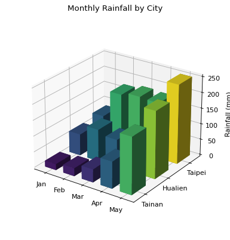
Bars standing on a floor. The floor has two categories (city and month), and the bar height is the value (rainfall).
Use it for A value for every combination of two categories, when you want an eye-catching overview, for example in a talk.
Watch out Front bars hide back bars, and perspective makes heights hard to compare. Put the smallest row in front and try different view_init() angles. In a paper, a heatmap of the same table is usually easier to read.
import numpy as np
import matplotlib.pyplot as plt
months = ["Jan", "Feb", "Mar", "Apr", "May"]
cities = ["Tainan", "Hualien", "Taipei"] # smallest values in front
# rows = cities, columns = months (example rainfall in mm)
rainfall = np.array([
[19, 25, 41, 85, 180],
[68, 101, 87, 81, 213],
[83, 170, 180, 177, 251],
])
# One (x, y) position on the floor for every bar
x, y = np.meshgrid(np.arange(len(months)), np.arange(len(cities)))
x = x.ravel()
y = y.ravel()
heights = rainfall.ravel()
fig = plt.figure(figsize=(8, 6))
ax = fig.add_subplot(projection="3d") # turn on 3D
colors = plt.cm.viridis(heights / heights.max()) # taller bar = brighter colour
ax.bar3d(x, y, np.zeros_like(heights), # where each bar starts
dx=0.6, dy=0.6, dz=heights, # bar width, depth, height
color=colors, shade=True)
ax.set_xticks(np.arange(len(months)) + 0.3, months)
ax.set_yticks(np.arange(len(cities)) + 0.3, cities)
ax.set_zlabel("Rainfall (mm)", labelpad=8)
ax.set_title("Monthly Rainfall by City")
ax.view_init(elev=25, azim=-55) # camera angle: height, rotation
ax.set_box_aspect(None, zoom=0.85) # shrink a little so labels fit
plt.show()projection="3d" turns a normal axes into a 3D axes.bar3d(x, y, z, dx, dy, dz): where each bar starts (x, y, z) and its width, depth, and height.np.meshgrid() + ravel() make one floor position for every cell of the table.ax.errorbar() · ax.boxplot()
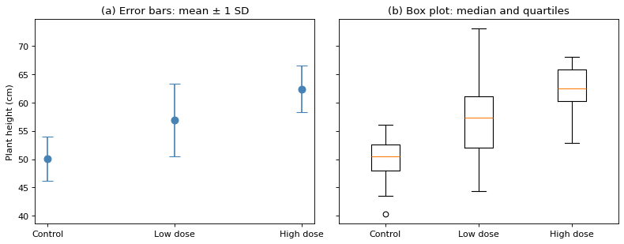
Both show the spread of each group, not only the average. An error bar shows mean ± a range. A box plot shows the median, the middle 50%, and outliers of all values.
Use it for Comparing groups in an experiment: control vs treatment, station A vs B, before vs after.
Watch out An error bar can mean SD, standard error, or a 95% confidence interval, and they differ a lot. Always write which one in the caption. With fewer than about 10 values per group, show the points themselves.
import numpy as np
import matplotlib.pyplot as plt
rng = np.random.default_rng(42) # fixed seed: same "random" data every run
groups = ["Control", "Low dose", "High dose"]
data = [
rng.normal(50, 5, 30), # 30 plants per group
rng.normal(56, 8, 30),
rng.normal(63, 6, 30),
]
means = [d.mean() for d in data]
stds = [d.std(ddof=1) for d in data] # sample standard deviation
fig, (ax1, ax2) = plt.subplots(1, 2, figsize=(10, 4), sharey=True)
# (a) Error bars: one dot for the mean, a whisker for the spread
ax1.errorbar(groups, means, yerr=stds,
fmt="o", markersize=8, capsize=6, color="steelblue")
ax1.set_title("(a) Error bars: mean ± 1 SD")
ax1.set_ylabel("Plant height (cm)")
# (b) Box plot: median, quartiles, and outliers of all 30 values
ax2.boxplot(data)
ax2.set_xticks([1, 2, 3], groups)
ax2.set_title("(b) Box plot: median and quartiles")
plt.tight_layout()
plt.show()yerr=stds sets the length of each whisker. capsize draws the small caps.fmt="o" draws dots only, with no line joining the groups.boxplot(data) takes a list of arrays, one per group, and calculates everything itself.ax.pie()
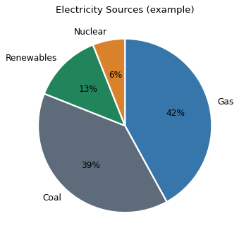
A circle cut into slices. Each slice is a share of one whole, and all slices add up to 100%.
Use it for Two to five parts of one total, such as land use, energy mix, or survey answers.
Watch out People compare angles badly, so with many or similar slices use a sorted bar chart instead. Never use a 3D pie: the front slices look bigger than they are.
import matplotlib.pyplot as plt
sources = ["Gas", "Coal", "Renewables", "Nuclear"]
share = [42, 39, 13, 6] # percent (example values)
colors = ["#3776ab", "#5d6b7a", "#21845b", "#d9822b"]
fig, ax = plt.subplots(figsize=(6, 5))
ax.pie(share,
labels=sources,
colors=colors,
autopct="%1.0f%%", # write the percentage on each slice
startangle=90, # first slice starts at 12 o'clock
counterclock=False, # go clockwise, like a clock
wedgeprops={"edgecolor": "white", "linewidth": 2},
textprops={"fontsize": 11})
ax.set_title("Electricity Sources (example)")
plt.show()autopct="%1.0f%%" writes each percentage on its slice (%% prints a % sign).startangle=90 and counterclock=False start at 12 o'clock and go clockwise, as people read a clock.wedgeprops adds white edges, so neighbouring slices are easy to separate.ax.contour() · ax.contourf()
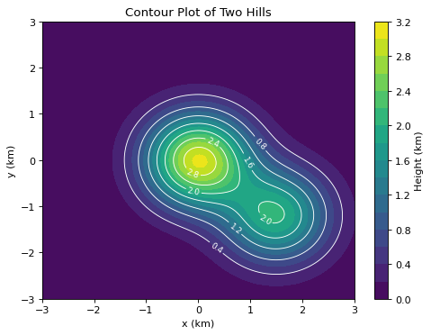
A surface seen from above. Each line joins points with the same value, like height lines on a hiking map or isobars on a weather map.
Use it for Smooth 2D fields: topography, pressure, temperature, concentration.
Watch out Lines close together mean the value changes fast (a steep slope). Too many levels make the plot busy; too few hide detail. Try 8 to 15.
import numpy as np
import matplotlib.pyplot as plt
# A grid of x, y points
x = np.linspace(-3, 3, 200)
y = np.linspace(-3, 3, 200)
X, Y = np.meshgrid(x, y)
# A "landscape" with two hills
Z = 3 * np.exp(-(X**2 + Y**2)) + 2 * np.exp(-((X - 1.5)**2 + (Y + 1.2)**2))
fig, ax = plt.subplots(figsize=(7, 5))
filled = ax.contourf(X, Y, Z, levels=15, cmap="viridis") # coloured bands
lines = ax.contour(X, Y, Z, levels=8, colors="white", linewidths=0.8) # lines
ax.clabel(lines, fontsize=8, fmt="%.1f") # numbers on lines
fig.colorbar(filled, ax=ax, label="Height (km)")
ax.set_xlabel("x (km)")
ax.set_ylabel("y (km)")
ax.set_title("Contour Plot of Two Hills")
plt.show()np.meshgrid(x, y) turns two 1D axes into 2D grids X and Y. Z must have the same shape.contourf fills the bands with colour. contour draws only the lines. Using both is common.clabel() writes the value on each line.ax.plot_surface()
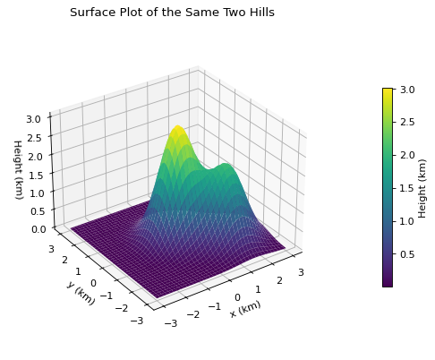
The same X, Y, Z data as the contour plot, shown as a 3D landscape. MATLAB users know it as surf.
Use it for Showing the overall shape of a 2D function or field, especially in teaching and presentations.
Watch out Hills can hide valleys behind them, and exact values are hard to read. In a paper, show a contour plot next to it, or instead of it.
import numpy as np
import matplotlib.pyplot as plt
x = np.linspace(-3, 3, 80)
y = np.linspace(-3, 3, 80)
X, Y = np.meshgrid(x, y)
Z = 3 * np.exp(-(X**2 + Y**2)) + 2 * np.exp(-((X - 1.5)**2 + (Y + 1.2)**2))
fig = plt.figure(figsize=(8, 6))
ax = fig.add_subplot(projection="3d")
surface = ax.plot_surface(X, Y, Z, cmap="viridis",
edgecolor="none", antialiased=True)
fig.colorbar(surface, ax=ax, shrink=0.6, pad=0.1, label="Height (km)")
ax.set_xlabel("x (km)")
ax.set_ylabel("y (km)")
ax.set_zlabel("Height (km)")
ax.set_title("Surface Plot of the Same Two Hills")
ax.view_init(elev=30, azim=-125) # rotate so both hills are visible
ax.set_box_aspect(None, zoom=0.85) # shrink a little so labels fit
plt.show()cmap="viridis" colours the surface by height, so it can share a colorbar.view_init(elev, azim) sets the camera: elevation (up/down) and azimuth (rotation).ax.imshow()
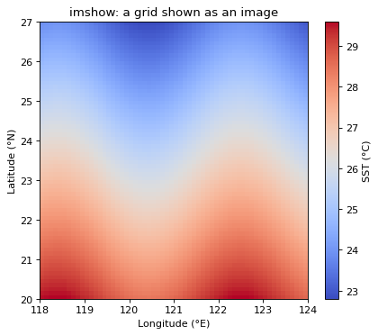
Shows a 2D array as a picture: every number becomes one coloured pixel.
Use it for Regular grids (model output, satellite data), matrices, and photos.
Watch out By default row 0 is drawn at the top, so maps appear upside-down. Use origin="lower". Without extent, the axes show index numbers instead of real coordinates. For uneven grids, use pcolormesh().
import numpy as np
import matplotlib.pyplot as plt
# A 2D grid of sea-surface temperature (example values)
lon = np.linspace(118, 124, 60)
lat = np.linspace(20, 27, 70)
LON, LAT = np.meshgrid(lon, lat)
sst = 29 - 0.8 * (LAT - 20) + 0.6 * np.sin(LON * 1.5)
fig, ax = plt.subplots(figsize=(6, 5))
image = ax.imshow(sst,
cmap="coolwarm",
origin="lower", # row 0 at the bottom (south)
extent=[118, 124, 20, 27], # real axis values: x0, x1, y0, y1
aspect="auto")
fig.colorbar(image, ax=ax, label="SST (°C)")
ax.set_xlabel("Longitude (°E)")
ax.set_ylabel("Latitude (°N)")
ax.set_title("imshow: a grid shown as an image")
plt.show()origin="lower" puts the first row at the bottom, so south is at the bottom.extent=[x0, x1, y0, y1] labels the axes with longitude and latitude.aspect="auto" lets the pixels stretch to fill the axes.ax.scatter(s=…, c=…)
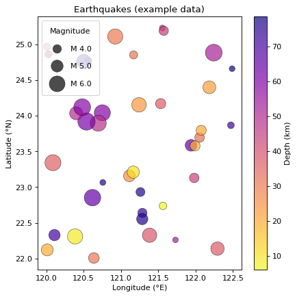
A scatter plot where the size of each dot shows a third variable, and the colour can show a fourth.
Use it for Points that each have several properties: earthquakes (location, magnitude, depth), cities (position, population).
Watch out s sets the area, not the radius. Big bubbles cover small ones, so use alpha and an edge colour. Always add a size legend, otherwise nobody knows what a big bubble means.
import numpy as np
import matplotlib.pyplot as plt
rng = np.random.default_rng(7)
n = 40
lon = rng.uniform(120.0, 122.5, n)
lat = rng.uniform(21.8, 25.3, n)
magnitude = rng.uniform(3.0, 6.5, n)
depth = rng.uniform(5, 80, n)
fig, ax = plt.subplots(figsize=(6, 6))
bubbles = ax.scatter(lon, lat,
s=magnitude**3 * 2, # bubble AREA grows with magnitude
c=depth, # colour shows depth
cmap="plasma_r",
alpha=0.7, edgecolor="black", linewidth=0.5)
fig.colorbar(bubbles, ax=ax, label="Depth (km)")
# Legend that explains the bubble sizes
handles, labels = bubbles.legend_elements(
prop="sizes", num=4, func=lambda s: np.cbrt(s / 2), fmt="M {x:.1f}")
ax.legend(handles, labels, title="Magnitude", loc="upper left",
labelspacing=1.4, borderpad=1)
ax.set_xlabel("Longitude (°E)")
ax.set_ylabel("Latitude (°N)")
ax.set_title("Earthquakes (example data)")
plt.show()s= sets the bubble size and c= the colour value. cmap picks the colours.legend_elements(prop="sizes") builds the size legend. func converts sizes back to magnitudes.sns.heatmap()
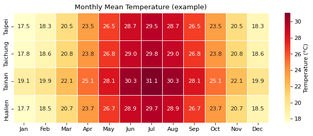
A table where each cell is coloured by its value, with named rows and columns.
Use it for Month × station tables, correlation matrices, any table you want to scan for patterns.
Watch out Write numbers in the cells (annot=True) only when there are few cells. For correlations use a diverging colormap with vmin=-1, vmax=1, so 0 is the neutral colour.
import numpy as np
import pandas as pd
import seaborn as sns
import matplotlib.pyplot as plt
months = ["Jan", "Feb", "Mar", "Apr", "May", "Jun",
"Jul", "Aug", "Sep", "Oct", "Nov", "Dec"]
stations = ["Taipei", "Taichung", "Tainan", "Hualien"]
# Example monthly mean temperature: yearly average + a seasonal wave
yearly = np.array([23.5, 23.8, 25.1, 23.7])
season = 6 * np.sin((np.arange(12) - 3) * np.pi / 6)
table = pd.DataFrame((yearly[:, None] + season).round(1),
index=stations, columns=months)
fig, ax = plt.subplots(figsize=(10, 3.5))
sns.heatmap(table,
annot=True, fmt=".1f", # write the number in every cell
cmap="YlOrRd",
linewidths=0.5, linecolor="white",
cbar_kws={"label": "Temperature (°C)"},
ax=ax)
ax.set_title("Monthly Mean Temperature (example)")
plt.show()sns.heatmap() a pandas DataFrame: its index and columns become the axis labels.annot=True, fmt=".1f" writes each value with one decimal.cbar_kws={"label": ...} adds a label with units to the colorbar.| Plot | Best for | Main strength |
|---|---|---|
imshow | Regular grids, images | Fast and simple, one pixel per value |
sns.heatmap | Tables with named rows and columns | Labels and numbers in the cells |
contourf | Smooth fields | Shows lines of equal value |
plot_surface | Showing the 3D shape | Intuitive, but hides parts |
Six of the plots above use a colorbar. Colorbars, markers, legends, axes, text, colours, and opacity are explained in detail in Lesson 38: More about Plot Components.
| Your question | Data type | Recommended plot |
|---|---|---|
| How does a value change over time? | Time + number | Line plot |
| Which group is larger? | Category + number | Bar chart |
| Are two variables related? | Number + number | Scatter / regression plot |
| How are values distributed? | One numerical variable | Histogram / box plot |
| Where is data located? | Latitude + longitude | Map / spatial plot |
| How does a field vary over space? | X + Y + value | Heatmap / contour plot |
import matplotlib.pyplot as pltPlot 7 days of temperature as a line with circle markers.
Plot temperatures for two cities on the same line plot with a legend.
Make a bar chart of rainfall in four cities.
Sort the bars from highest to lowest before plotting.
Make a grouped bar chart: 2025 and 2026 rainfall side by side for each city.
Make a stacked bar chart of rain and snow per month.
Add error bars (standard deviation) to a bar chart.
Make a scatter plot of depth against salinity, with depth increasing downward.
Colour scatter points by a third variable and add a colour bar.
Make points semi-transparent so overlapping points are visible.
Draw a histogram of 200 random values with 20 bins.
Compare two distributions on one histogram.
Show a histogram as percentages (density) instead of counts.
Draw a vertical line at the mean on a histogram.
Make a box plot for three groups.
Fill the area under a line plot.
Plot dates on the x-axis so the labels are readable.
Use a second y-axis for rainfall on a temperature line plot.
Put all four plot types in one 2 × 2 figure.
Make a heatmap of a small 2D grid of values.
You have daily river level for one year. Which plot, and why?
You want to compare average exam scores of 5 classes. Which plot?
You want to know if fertiliser amount relates to plant height. Which plot?
You want to see whether 500 measurements are skewed. Which plot?
You want to compare the spread of reaction times in 3 treatment groups. Which plot?
You have sea-surface temperature on a latitude–longitude grid. Which plot?
You want to show the share of energy sources in one country. A pie chart or something better?
You have 10 numeric variables and want to see which ones relate. Which plot?
You want to compare monthly rainfall for 3 cities over 12 months. Which plot?
You have only 6 data points in 2 groups. Should you use a box plot?
A temperature line plot has two very different scales (°C and mm rain). How do you show both?
You want to show a before/after change for each of 20 patients. Which plot?
Write code for the plot you chose in question 1.
Write code for the plot you chose in question 5.
Write code for the plot you chose in question 8.
Write code for the plot you chose in question 12.
Your scatter plot has 100,000 points and looks like one big blob. What can you do?
Your values range from 1 to 1,000,000. How can you show them all clearly?
Write a function suggest_plot(x_type, y_type) that returns a plot name.
Find two problems in this figure: a 3D pie chart with a rainbow colour map and no labels.
import matplotlib.pyplot as plt
days = ["Mon", "Tue", "Wed", "Thu", "Fri", "Sat", "Sun"]
temperature = [27, 29, 30, 28, 26, 27, 29]
plt.plot(days, temperature, marker="o")
plt.ylabel("Temperature (°C)")
plt.show()taipei = [27, 29, 30, 28, 26, 27, 29]
tainan = [30, 31, 31, 29, 30, 31, 32]
plt.plot(days, taipei, marker="o", label="Taipei")
plt.plot(days, tainan, marker="s", label="Tainan")
plt.legend()
plt.show()cities = ["Taipei", "Tainan", "Kaohsiung", "Hualien"]
rainfall = [12.0, 3.5, 0.0, 18.6]
plt.bar(cities, rainfall)
plt.ylabel("Rainfall (mm)")
plt.show()pairs = sorted(zip(rainfall, cities), reverse=True)
values, names = zip(*pairs)
plt.bar(names, values)
plt.show()import numpy as np
rain_2025 = [10, 4, 1, 15]
rain_2026 = [12, 3.5, 0, 18.6]
x = np.arange(len(cities))
width = 0.4
plt.bar(x - width / 2, rain_2025, width, label="2025")
plt.bar(x + width / 2, rain_2026, width, label="2026")
plt.xticks(x, cities)
plt.legend()
plt.show()months = ["Jan", "Feb", "Mar"]
rain = [30, 25, 40]
snow = [10, 8, 2]
plt.bar(months, rain, label="Rain")
plt.bar(months, snow, bottom=rain, label="Snow")
plt.legend()
plt.show()means = [72, 81, 77]
stds = [4, 3, 5]
plt.bar(["A", "B", "C"], means, yerr=stds, capsize=6)
plt.ylabel("Mean score")
plt.show()depth = [0, 10, 50, 100, 200, 500]
salinity = [33.9, 34.0, 34.3, 34.5, 34.6, 34.5]
plt.scatter(salinity, depth)
plt.gca().invert_yaxis() # deeper is lower on the plot
plt.xlabel("Salinity (psu)")
plt.ylabel("Depth (m)")
plt.show()temperature = [28, 27, 24, 20, 15, 8]
points = plt.scatter(salinity, depth, c=temperature, cmap="coolwarm")
plt.colorbar(points, label="Temperature (°C)")
plt.gca().invert_yaxis()
plt.show()x = np.random.normal(0, 1, 1000)
y = x + np.random.normal(0, 0.5, 1000)
plt.scatter(x, y, alpha=0.3, s=10)
plt.show()values = np.random.normal(70, 10, 200)
plt.hist(values, bins=20, edgecolor="white")
plt.xlabel("Score")
plt.ylabel("Count")
plt.show()class_a = np.random.normal(70, 8, 200)
class_b = np.random.normal(78, 8, 200)
plt.hist(class_a, bins=20, alpha=0.5, label="Class A")
plt.hist(class_b, bins=20, alpha=0.5, label="Class B")
plt.legend()
plt.show()plt.hist(values, bins=20, density=True)
plt.ylabel("Density")
plt.show()plt.hist(values, bins=20)
plt.axvline(values.mean(), color="red", linestyle="--",
label=f"Mean = {values.mean():.1f}")
plt.legend()
plt.show()groups = [
np.random.normal(70, 5, 50),
np.random.normal(75, 8, 50),
np.random.normal(80, 4, 50)
]
plt.boxplot(groups, labels=["A", "B", "C"])
plt.ylabel("Score")
plt.show()x = range(len(temperature))
plt.plot(x, temperature)
plt.fill_between(x, temperature, alpha=0.3)
plt.show()import pandas as pd
dates = pd.date_range("2026-01-01", periods=30)
values = np.random.normal(26, 1, 30)
fig, ax = plt.subplots()
ax.plot(dates, values)
fig.autofmt_xdate() # tilts and spaces the date labels
plt.show()fig, ax1 = plt.subplots()
ax1.plot(days, taipei, color="tab:red")
ax1.set_ylabel("Temperature (°C)", color="tab:red")
ax2 = ax1.twinx()
ax2.bar(days, [5, 0, 12, 3, 0, 8, 1], alpha=0.3)
ax2.set_ylabel("Rainfall (mm)")
plt.show()fig, axes = plt.subplots(2, 2, figsize=(9, 7))
axes[0, 0].plot(days, taipei)
axes[0, 1].bar(cities, rainfall)
axes[1, 0].scatter(salinity, depth)
axes[1, 1].hist(values, bins=15)
plt.tight_layout()
plt.show()grid = np.array([[20, 22, 25],
[21, 24, 27],
[23, 26, 30]])
plt.imshow(grid, cmap="viridis")
plt.colorbar(label="Temperature (°C)")
plt.show()A line plot: time goes on the x-axis and level on the y-axis. The line shows how the level changes from day to day, including floods and dry periods.
A bar chart (with error bars for the spread), because the classes are separate categories.
A scatter plot, possibly with a regression line, because both variables are numbers and you are asking about a relationship.
A histogram shows the shape of the distribution and any long tail directly.
A box plot or a violin plot: both show the median, spread, and outliers of each group side by side.
A map such as pcolormesh or contourf with a colour bar, ideally with coastlines.
A sorted horizontal bar chart with percentages is easier to read than a pie chart, because people compare lengths better than angles. A pie chart is acceptable only with 2–3 slices.
A correlation heatmap gives an overview of all pairs. Follow up with scatter plots for the interesting pairs.
A line plot with one line per city (months are ordered), or a grouped bar chart if you want to stress each month's comparison.
No. A box plot of 3 values is misleading. Show every point (a strip or dot plot), possibly with the mean marked.
Use two stacked subplots sharing the x-axis (plt.subplots(2, 1, sharex=True)). A second y-axis (twinx) also works, but can confuse readers.
A paired (slope) plot: one line per patient from "before" to "after", so each individual change is visible.
import pandas as pd
import matplotlib.pyplot as plt
river = pd.read_csv("river.csv", parse_dates=["date"])
plt.figure(figsize=(10, 4))
plt.plot(river["date"], river["level"])
plt.xlabel("Date")
plt.ylabel("Water level (m)")
plt.title("Daily River Level")
plt.show()import seaborn as sns
sns.boxplot(data=df, x="treatment", y="reaction_time")
sns.stripplot(data=df, x="treatment", y="reaction_time",
color="black", alpha=0.4)
plt.ylabel("Reaction time (ms)")
plt.show()corr = df.corr(numeric_only=True)
sns.heatmap(corr, annot=True, fmt=".2f", cmap="coolwarm",
vmin=-1, vmax=1)
plt.show()for _, row in patients.iterrows():
plt.plot(["Before", "After"], [row["before"], row["after"]],
marker="o", color="gray", alpha=0.6)
plt.ylabel("Blood pressure (mmHg)")
plt.show()Use small, transparent points (alpha=0.05, s=2), a 2D density plot (plt.hexbin(x, y, gridsize=50) or sns.kdeplot), or plot a random sample.
Use a logarithmic axis: plt.yscale("log") or plt.xscale("log"). Label clearly that the axis is logarithmic.
def suggest_plot(x_type, y_type=None):
if y_type is None:
return "histogram" if x_type == "number" else "bar chart of counts"
if x_type == "time" and y_type == "number":
return "line plot"
if x_type == "category" and y_type == "number":
return "bar chart or box plot"
if x_type == "number" and y_type == "number":
return "scatter plot"
return "think about your question first"
print(suggest_plot("time", "number")) # line plotUse a labelled bar chart with simple colours instead.
bins="auto", then try a few values. Too few bins hide the shape, and too many make it look noisy.
plt.xticks(rotation=45, ha="right"), switch to horizontal bars with plt.barh, or make the figure wider.
df.sort_values("date")) before plotting.
Three-dimensional plots can show three variables together, such as longitude, latitude, and sea-surface temperature—or x, y, and height across a surface.
Click a plot type to open it. Each card shows a real picture made by the code in its Show code box. Click the picture to see it full size.
ax.scatter(x, y, z)
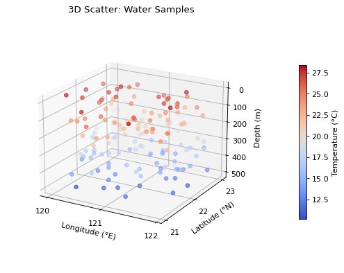
Separate points in space. Each point has an x, y, and z position, and colour can show a fourth value.
Use it for Measurements at different positions: water samples, sensors, particles, stars.
Watch out It is hard to judge how deep a point is, and points hide each other. Colour by a value, use a few clear ticks, and try several angles.
import numpy as np
import matplotlib.pyplot as plt
rng = np.random.default_rng(3)
n = 150
# Example water samples: position, depth, and temperature
lon = rng.uniform(120, 122, n)
lat = rng.uniform(21, 23, n)
depth = rng.uniform(0, 500, n)
temperature = 28 - 0.035 * depth + rng.normal(0, 0.8, n)
fig = plt.figure(figsize=(8, 6))
ax = fig.add_subplot(projection="3d")
points = ax.scatter(lon, lat, -depth, # minus: deeper = lower
c=temperature, cmap="coolwarm", s=25)
fig.colorbar(points, ax=ax, shrink=0.6, pad=0.12, label="Temperature (°C)")
ax.set_xticks([120, 121, 122]) # a few clear ticks are easier to read
ax.set_yticks([21, 22, 23])
ax.set_xlabel("Longitude (°E)")
ax.set_ylabel("Latitude (°N)")
ax.set_zlabel("Depth (m)", labelpad=8)
ax.zaxis.set_major_formatter(lambda value, pos: f"{abs(value):.0f}") # show 500, not -500
ax.set_title("3D Scatter: Water Samples")
ax.view_init(elev=20, azim=-60)
ax.set_box_aspect(None, zoom=0.85)
plt.show()projection="3d" creates 3D axes. scatter then takes three 1D arrays.-depth puts deeper samples lower. The formatter shows the numbers as positive depths.shrink and pad keep the colorbar small and away from the axis labels.ax.plot(x, y, z)
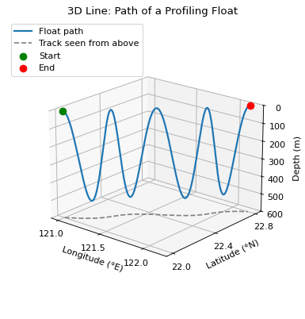
A path through space, drawn in order. The same plot() you know, with a third array.
Use it for Trajectories: profiling floats, drones, particles, a balloon rising and drifting.
Watch out From a 3D view it is hard to tell where the path is horizontally. Draw its shadow on the floor and mark the start and end.
import numpy as np
import matplotlib.pyplot as plt
# A float that dives to 500 m and comes back up 4 times while drifting
t = np.linspace(0, 4, 400) # number of dive cycles
lon = 121 + 0.3 * t + 0.05 * np.sin(3 * t)
lat = 22 + 0.2 * t
depth = 500 * (1 - np.cos(2 * np.pi * t)) / 2 # 0 -> 500 -> 0 m
fig = plt.figure(figsize=(8, 6))
ax = fig.add_subplot(projection="3d")
ax.plot(lon, lat, -depth, color="tab:blue", linewidth=2, label="Float path")
# "Shadow" of the path on the floor helps the eye read the position
floor = -600
ax.plot(lon, lat, np.full_like(lon, floor), color="gray",
linestyle="--", linewidth=1.5, label="Track seen from above")
ax.scatter(lon[0], lat[0], 0, color="green", s=60, label="Start")
ax.scatter(lon[-1], lat[-1], 0, color="red", s=60, label="End")
ax.set_zlim(floor, 0)
ax.set_xticks([121.0, 121.5, 122.0])
ax.set_yticks([22.0, 22.4, 22.8])
ax.set_xlabel("Longitude (°E)")
ax.set_ylabel("Latitude (°N)")
ax.set_zlabel("Depth (m)", labelpad=8)
ax.zaxis.set_major_formatter(lambda value, pos: f"{abs(value):.0f}")
ax.set_title("3D Line: Path of a Profiling Float")
ax.legend(loc="upper left")
ax.view_init(elev=20, azim=-50)
ax.set_box_aspect(None, zoom=0.8)
plt.show()ax.plot(lon, lat, -depth) joins the points in the order of the arrays.np.full_like(lon, floor) makes the same path at a constant depth: the shadow.set_zlim(floor, 0) makes sure the shadow is inside the box.ax.plot_surface(X, Y, Z)
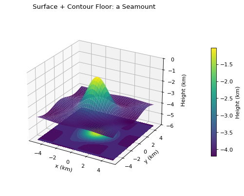
A continuous field Z over an x–y grid, drawn as a coloured landscape. Here a contour map of the same data is projected on the floor.
Use it for Topography and bathymetry, model output on a grid, mathematical functions.
Watch out X, Y, and Z must be 2D grids of the same shape (np.meshgrid). Hills hide valleys: the contour floor shows the hidden parts.
import numpy as np
import matplotlib.pyplot as plt
# A grid of x, y points (km)
x = np.linspace(-5, 5, 120)
y = np.linspace(-5, 5, 120)
X, Y = np.meshgrid(x, y)
# Sea floor with an underwater mountain (seamount), in km
Z = -4 + 3 * np.exp(-(X**2 + Y**2) / 3) + 0.2 * np.sin(X) * np.cos(Y)
fig = plt.figure(figsize=(9, 6))
ax = fig.add_subplot(projection="3d")
surface = ax.plot_surface(X, Y, Z, cmap="viridis",
edgecolor="none", alpha=0.95)
# The same field as a contour map on the floor of the box
ax.contourf(X, Y, Z, zdir="z", offset=-6, levels=15, cmap="viridis")
ax.set_zlim(-6, 0)
fig.colorbar(surface, ax=ax, shrink=0.6, pad=0.1, label="Height (km)")
ax.set_xlabel("x (km)")
ax.set_ylabel("y (km)")
ax.set_zlabel("Height (km)", labelpad=8)
ax.set_title("Surface + Contour Floor: a Seamount")
ax.view_init(elev=25, azim=-60)
ax.set_box_aspect(None, zoom=0.85)
plt.show()np.meshgrid(x, y) builds the 2D grids. Z is calculated on the whole grid at once.contourf(..., zdir="z", offset=-6) draws the contour map flat at height −6.set_zlim(-6, 0) must include the offset, otherwise the floor map is outside the box.ax.plot_wireframe(X, Y, Z)
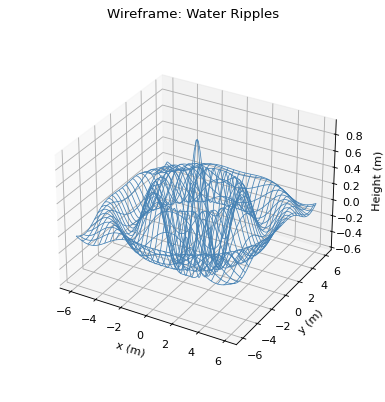
The same kind of surface drawn as a net of lines. You can see through it.
Use it for Seeing the shape and what is behind it, or a quick, fast first look at a surface.
Watch out There is no colour, so there are no values to read. Too many lines become a grey blur: use rstride and cstride.
import numpy as np
import matplotlib.pyplot as plt
x = np.linspace(-6, 6, 80)
y = np.linspace(-6, 6, 80)
X, Y = np.meshgrid(x, y)
# Ripples spreading out from a stone dropped in water
R = np.sqrt(X**2 + Y**2)
Z = np.cos(2 * R) * np.exp(-R / 3)
fig = plt.figure(figsize=(8, 6))
ax = fig.add_subplot(projection="3d")
ax.plot_wireframe(X, Y, Z,
rstride=3, cstride=3, # draw every 3rd row and column
color="steelblue", linewidth=0.7)
ax.set_xlabel("x (m)")
ax.set_ylabel("y (m)")
ax.set_zlabel("Height (m)", labelpad=8)
ax.set_title("Wireframe: Water Ripples")
ax.view_init(elev=30, azim=-60)
ax.set_box_aspect(None, zoom=0.85)
plt.show()X, Y, Z grids as plot_surface.rstride=3, cstride=3 draws every 3rd row and column line.plot_wireframe for plot_surface and the code still works.ax.bar(…, zs=…, zdir="y")
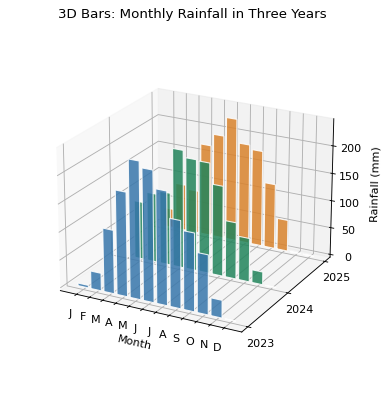
Normal bar charts placed one behind the other, one row per group.
Use it for A value for each category and group: months × years, sites × seasons.
Watch out Front rows hide back rows, and heights are hard to compare across rows. For a paper, grouped 2D bars or a heatmap are usually clearer.
import numpy as np
import matplotlib.pyplot as plt
months = np.arange(1, 13)
years = [2023, 2024, 2025]
colors = ["#3776ab", "#21845b", "#d9822b"]
rng = np.random.default_rng(5)
season = 120 + 110 * np.sin((months - 3) * np.pi / 6) # wet summer
fig = plt.figure(figsize=(9, 6))
ax = fig.add_subplot(projection="3d")
# One row of bars per year, placed one behind the other
for i, (year, color) in enumerate(zip(years, colors)):
rain = np.clip(season + rng.normal(0, 25, 12), 0, None) # rain cannot be negative
ax.bar(months, rain, zs=i, zdir="y", # zs: which row; zdir: rows go along y
color=color, alpha=0.85, edgecolor="white")
ax.set_yticks(range(len(years)), years)
ax.set_xticks(months, ["J", "F", "M", "A", "M", "J",
"J", "A", "S", "O", "N", "D"])
ax.set_xlabel("Month")
ax.set_zlabel("Rainfall (mm)", labelpad=8)
ax.set_title("3D Bars: Monthly Rainfall in Three Years")
ax.view_init(elev=22, azim=-62)
ax.set_box_aspect(None, zoom=0.85)
plt.show()zs=i tells Matplotlib which row the bars go in.zdir="y" places the rows along the y-axis.np.clip(..., 0, None) keeps rainfall from becoming negative after adding random noise.import numpy as np
import matplotlib.pyplot as plt
months = ["Jan", "Feb", "Mar", "Apr", "May"]
cities = ["Tainan", "Hualien", "Taipei"] # smallest values in front
# rows = cities, columns = months (example rainfall in mm)
rainfall = np.array([
[19, 25, 41, 85, 180],
[68, 101, 87, 81, 213],
[83, 170, 180, 177, 251],
])
# One (x, y) position on the floor for every bar
x, y = np.meshgrid(np.arange(len(months)), np.arange(len(cities)))
x = x.ravel()
y = y.ravel()
heights = rainfall.ravel()
fig = plt.figure(figsize=(8, 6))
ax = fig.add_subplot(projection="3d") # turn on 3D
colors = plt.cm.viridis(heights / heights.max()) # taller bar = brighter colour
ax.bar3d(x, y, np.zeros_like(heights), # where each bar starts
dx=0.6, dy=0.6, dz=heights, # bar width, depth, height
color=colors, shade=True)
ax.set_xticks(np.arange(len(months)) + 0.3, months)
ax.set_yticks(np.arange(len(cities)) + 0.3, cities)
ax.set_zlabel("Rainfall (mm)", labelpad=8)
ax.set_title("Monthly Rainfall by City")
ax.view_init(elev=25, azim=-55) # camera angle: height, rotation
ax.set_box_aspect(None, zoom=0.85) # shrink a little so labels fit
plt.show()3D plots fail in the same few ways again and again. These ten points fix most of them.
Write projection="3d" when you create the axes. You can mix 2D and 3D axes in one figure.
import matplotlib.pyplot as plt
fig = plt.figure(figsize=(11, 4.5))
ax1 = fig.add_subplot(1, 2, 1, projection="3d") # left: 3D
ax2 = fig.add_subplot(1, 2, 2) # right: normal 2D
plt.show()Points and lines take simple lists. Surfaces need grids. This is the most common 3D error: "Argument Z must be 2-dimensional".
| Plot | x, y, z must be | Example shape |
|---|---|---|
scatter, plot | 1D arrays of the same length | (150,) |
plot_surface, plot_wireframe, contourf | 2D grids of the same shape | (100, 100) |
import numpy as np
import pandas as pd
# From formulas: make the grid first, then calculate Z on it
x = np.linspace(-5, 5, 100)
y = np.linspace(-5, 5, 100)
X, Y = np.meshgrid(x, y)
Z = np.sin(X) * np.cos(Y)
print(X.shape, Y.shape, Z.shape) # (100, 100) three times
# From a table with x, y, and value columns
df = pd.DataFrame({"x": [0, 1, 0, 1],
"y": [0, 0, 1, 1],
"value": [5, 6, 7, 9]})
grid = df.pivot(index="y", columns="x", values="value")
X, Y = np.meshgrid(grid.columns, grid.index)
Z = grid.valuesThe default angle is rarely the best one. The same data can look completely different:
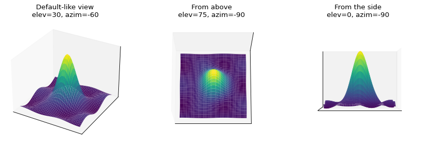
import numpy as np
import matplotlib.pyplot as plt
x = np.linspace(-5, 5, 80)
X, Y = np.meshgrid(x, x)
Z = -4 + 3 * np.exp(-(X**2 + Y**2) / 3) + 0.2 * np.sin(X) * np.cos(Y)
views = [(30, -60, "Default-like view"),
(75, -90, "From above"),
(0, -90, "From the side")]
fig = plt.figure(figsize=(13, 4.5))
for i, (elev, azim, name) in enumerate(views, start=1):
ax = fig.add_subplot(1, 3, i, projection="3d")
ax.plot_surface(X, Y, Z, cmap="viridis", edgecolor="none")
ax.view_init(elev=elev, azim=azim)
ax.set_title(f"{name}\nelev={elev}, azim={azim}")
ax.set_xticks([]) # hide numbers: only the angle matters here
ax.set_yticks([])
ax.set_zticks([])
plt.show()The z label is often cut off, and tick numbers often overlap. Add labelpad, use fewer ticks, and shrink the box slightly.
ax.set_xlabel("Longitude (°E)")
ax.set_ylabel("Latitude (°N)")
ax.set_zlabel("Depth (m)", labelpad=8) # push the label away from the numbers
ax.set_xticks([120, 121, 122]) # fewer ticks = no overlapping numbers
ax.set_box_aspect(None, zoom=0.85) # shrink the box so labels are not cut offAxes grow upward, but depth grows downward. Without a fix, the deep ocean appears at the top.
# Option 1: plot negative depth, but show positive numbers
ax.plot(lon, lat, -depth)
ax.zaxis.set_major_formatter(lambda value, pos: f"{abs(value):.0f}")
# Option 2: plot depth as it is and flip the axis
ax.plot(lon, lat, depth)
ax.invert_zaxis()Matplotlib draws the box as a cube, even if your area is 100 km wide and 1 km deep. That stretches the height a lot. Set real proportions, or say clearly how much you stretched it.
# Default: the box is a cube, whatever the units are
ax.set_box_aspect((1, 1, 1))
# Wide and flat box, e.g. 10 km x 10 km area but only 4 km deep
ax.set_box_aspect((10, 10, 4))
# Say it in the caption if you stretch the height on purpose:
# "Vertical exaggeration x 50"A 3D picture is still flat on the screen. Colour by value (with a colorbar), draw shadows or contours on the floor, mark start and end points, and use transparency (alpha) to see what is behind.
Parts of the data are always behind other parts. Matplotlib also draws each object as one flat layer, so two crossing surfaces can appear in the wrong order. For complex 3D scenes, use Plotly or PyVista.
In a normal Python window you can drag the plot with the mouse. A printed page cannot rotate, so save a few good angles, or add a 2D version.
# Save the same 3D figure from several angles for a paper
for azim in [-60, 0, 60, 120]:
ax.view_init(elev=25, azim=azim)
fig.savefig(f"surface_azim{azim}.png", dpi=300)
# In Jupyter, make plots rotatable (after: pip install ipympl)
# %matplotlib widgetA 1000 × 1000 surface has a million cells and can freeze your computer. Draw fewer points: the picture usually looks the same.
# Draw every 4th grid point: 16 times fewer polygons
ax.plot_surface(X[::4, ::4], Y[::4, ::4], Z[::4, ::4], cmap="viridis")
# Or let Matplotlib reduce it: at most 50 x 50 patches
ax.plot_surface(X, Y, Z, rcount=50, ccount=50, cmap="viridis")
# Large scatter: plot a random sample of 5000 points
idx = np.random.default_rng(0).choice(len(x), size=5000, replace=False)
ax.scatter(x[idx], y[idx], z[idx], s=2)Many good papers show both: a 3D view to give the reader the shape, and a 2D map next to it for the exact values.
ax = fig.add_subplot(111, projection="3d")Create an empty 3D axes and label all three axes.
Make a 3D scatter of 50 random points.
Colour the 3D points by their z value and add a colour bar.
Draw a 3D spiral line (a helix).
Explain what np.meshgrid creates, using a tiny example.
Plot the surface Z = X² + Y² (a bowl).
Draw the same bowl as a wireframe.
Change the viewing angle of a 3D plot.
Show the same surface as a 2D filled contour map.
Add labelled contour lines to a 2D map.
Show a 2D heatmap of the same Z values with pcolormesh.
Put a 3D surface and its 2D contour side by side.
Plot a buoy track with longitude, latitude, and depth.
Limit the z-axis range to 0–20.
Make the surface semi-transparent.
Turn a 3D data table (x, y, value columns) into a grid for plotting.
Find the highest point of a surface and mark it.
Save a 3D figure from several viewing angles.
Draw a vertical temperature profile at several stations as 3D lines.
Make an interactive 3D scatter that you can rotate with the mouse using Plotly.
import matplotlib.pyplot as plt
fig = plt.figure()
ax = fig.add_subplot(projection="3d")
ax.set_xlabel("Longitude")
ax.set_ylabel("Latitude")
ax.set_zlabel("Depth (m)")
plt.show()import numpy as np
x, y, z = np.random.rand(3, 50)
ax = plt.figure().add_subplot(projection="3d")
ax.scatter(x, y, z)
plt.show()fig = plt.figure()
ax = fig.add_subplot(projection="3d")
points = ax.scatter(x, y, z, c=z, cmap="viridis")
fig.colorbar(points, label="z value", shrink=0.7)
plt.show()t = np.linspace(0, 6 * np.pi, 300)
ax = plt.figure().add_subplot(projection="3d")
ax.plot(np.cos(t), np.sin(t), t)
plt.show()x = np.array([1, 2, 3])
y = np.array([10, 20])
X, Y = np.meshgrid(x, y)
print(X) # [[ 1 2 3]
# [ 1 2 3]]
print(Y) # [[10 10 10]
# [20 20 20]]It makes the x and y coordinates of every grid point, so you can calculate Z for the whole grid at once.
x = np.linspace(-3, 3, 60)
X, Y = np.meshgrid(x, x)
Z = X ** 2 + Y ** 2
ax = plt.figure().add_subplot(projection="3d")
ax.plot_surface(X, Y, Z, cmap="viridis")
plt.show()ax = plt.figure().add_subplot(projection="3d")
ax.plot_wireframe(X, Y, Z, rstride=4, cstride=4)
plt.show()ax.view_init(elev=30, azim=45) # height angle, rotation angle
plt.show()plt.contourf(X, Y, Z, levels=15, cmap="viridis")
plt.colorbar(label="Z")
plt.show()lines = plt.contour(X, Y, Z, levels=8, colors="black")
plt.clabel(lines, inline=True, fontsize=8)
plt.show()plt.pcolormesh(X, Y, Z, cmap="viridis", shading="auto")
plt.colorbar()
plt.show()fig = plt.figure(figsize=(11, 4.5))
ax1 = fig.add_subplot(1, 2, 1, projection="3d")
ax1.plot_surface(X, Y, Z, cmap="viridis")
ax2 = fig.add_subplot(1, 2, 2)
filled = ax2.contourf(X, Y, Z, levels=15, cmap="viridis")
fig.colorbar(filled, ax=ax2)
plt.show()lon = [120.0, 120.1, 120.3, 120.4, 120.6]
lat = [22.5, 22.6, 22.6, 22.8, 22.9]
depth = [0, -5, -12, -8, -15]
ax = plt.figure().add_subplot(projection="3d")
ax.plot(lon, lat, depth, marker="o")
ax.set_zlabel("Depth (m)")
plt.show()ax.set_zlim(0, 20)ax.plot_surface(X, Y, Z, cmap="viridis", alpha=0.6)import pandas as pd
df = pd.DataFrame({
"x": [0, 1, 0, 1],
"y": [0, 0, 1, 1],
"value": [5, 6, 7, 9]
})
grid = df.pivot(index="y", columns="x", values="value")
X, Y = np.meshgrid(grid.columns, grid.index)
Z = grid.valuesZ = np.sin(X) * np.cos(Y)
row, col = np.unravel_index(np.argmax(Z), Z.shape)
ax = plt.figure().add_subplot(projection="3d")
ax.plot_surface(X, Y, Z, cmap="viridis", alpha=0.7)
ax.scatter(X[row, col], Y[row, col], Z[row, col], color="red", s=80)
plt.show()fig = plt.figure()
ax = fig.add_subplot(projection="3d")
ax.plot_surface(X, Y, Z, cmap="viridis")
for angle in [0, 45, 90, 135]:
ax.view_init(elev=25, azim=angle)
fig.savefig(f"surface_{angle}.png", dpi=200)depth = np.array([0, 20, 50, 100, 200])
ax = plt.figure().add_subplot(projection="3d")
for station, lon in enumerate([120.0, 120.5, 121.0]):
temperature = 28 - depth * (0.04 + 0.01 * station)
ax.plot([lon] * len(depth), temperature, -depth)
ax.set_xlabel("Longitude")
ax.set_ylabel("Temperature (°C)")
ax.set_zlabel("Depth (m)")
plt.show()import numpy as np
import pandas as pd
import plotly.express as px
df = pd.DataFrame(np.random.rand(50, 3), columns=["x", "y", "z"])
fig = px.scatter_3d(df, x="x", y="y", z="z", color="z")
fig.show()ValueError: Unknown projection '3d'. Why?
from mpl_toolkits.mplot3d import Axes3D. Updating Matplotlib with pip install -U matplotlib also fixes it.
plot_surface say "Argument Z must be 2-dimensional"?
X, Y with np.meshgrid, then calculate Z from them so all three have the same 2D shape.
%matplotlib widget (after pip install ipympl), or use Plotly, which is always interactive.
np.linspace (for example 100 instead of 20). For measured data, you may need to interpolate onto a finer grid first.
-depth) or call ax.invert_zaxis().
cmap mean?
viridis and cividis are readable and colour-blind friendly. Avoid jet and rainbow maps, because they create false boundaries.
X[::4, ::4]), or plot a sample of a large scatter dataset.
A plot is built from parts: markers, lines, axes, a legend, text, colours, and often a colorbar. Each part has settings. Knowing them turns a default plot into a clear figure that you can put in a report or a paper.
Every red label below is explained in one of the tabs further down. Click the picture to see it full size.
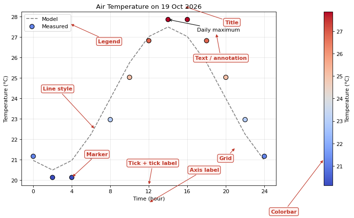
import numpy as np
import matplotlib.pyplot as plt
hours = np.arange(0, 25, 2)
measured = 24 + 4 * np.sin((hours - 9) * np.pi / 12)
model = 24 + 3.5 * np.sin((hours - 8) * np.pi / 12)
fig, ax = plt.subplots(figsize=(9, 5.5), layout="constrained")
ax.plot(hours, model, "--", color="gray", label="Model")
points = ax.scatter(hours, measured, c=measured, cmap="coolwarm",
s=70, edgecolor="black", zorder=3, label="Measured")
cbar = fig.colorbar(points, ax=ax, label="Temperature (°C)")
ax.set_title("Air Temperature on 19 Oct 2026")
ax.set_xlabel("Time (hour)")
ax.set_ylabel("Temperature (°C)")
ax.set_xticks(range(0, 25, 4))
ax.grid(alpha=0.3)
ax.legend(loc="upper left")
ax.annotate("Daily maximum", xy=(14, measured[7]), xytext=(17, 27.3),
arrowprops={"arrowstyle": "->"})
# ---- red labels that name each part (only for this teaching picture) ----
def callout(text, xy, xytext, coords="data"):
ax.annotate(text, xy=xy, xycoords=coords, xytext=xytext, textcoords=coords,
color="#c0392b", fontsize=10, fontweight="bold",
bbox={"boxstyle": "round", "fc": "#fff3f1", "ec": "#c0392b"},
arrowprops={"arrowstyle": "-|>", "color": "#c0392b"})
callout("Title", (0.64, 1.03), (0.80, 0.93), "axes fraction")
callout("Legend", (0.19, 0.93), (0.30, 0.82), "axes fraction")
callout("Marker", (hours[2], measured[2]), (5.5, 21.2))
callout("Line style", (6.4, 22.5), (1.0, 24.4))
callout("Text / annotation", (19, 27.2), (16.8, 25.9))
callout("Tick + tick label", (0.5, 0.0), (0.42, 0.12), "axes fraction")
callout("Axis label", (0.5, -0.1), (0.66, 0.08), "axes fraction")
callout("Grid", (21, 21.6), (19.3, 21.0))
ax.annotate("Colorbar", xy=(0, 0.15), xycoords=cbar.ax, # point at the colorbar itself
xytext=(0.98, -0.16), textcoords="axes fraction",
color="#c0392b", fontsize=10, fontweight="bold",
bbox={"boxstyle": "round", "fc": "#fff3f1", "ec": "#c0392b"},
arrowprops={"arrowstyle": "-|>", "color": "#c0392b"})
plt.show()Click a tab to open it. Each tab shows real pictures with the code that made them. The cheat sheet at the end of each tab lists the settings at a glance.
The colorbar translates colours back into numbers. This tab covers its colours, size, range, distance, position, and pointed ends.
When colour stands for a number (height, temperature, depth), the reader
needs a key to turn the colour back into its number. That key is the colorbar.
It works like a legend, but for a continuous range of values. You create it with
fig.colorbar(mappable), where the mappable is what
imshow, contourf, pcolormesh, plot_surface,
or scatter(c=...) returned.
How to read it: pick a colour in the plot, find the same colour on the bar, and read the number next to it. In the picture at the top of this lesson, the darkest red marker matches the top of the colorbar, so it is about 28 °C.
cmap="viridis"The colormap is chosen by its name. Pick the family that matches your data:
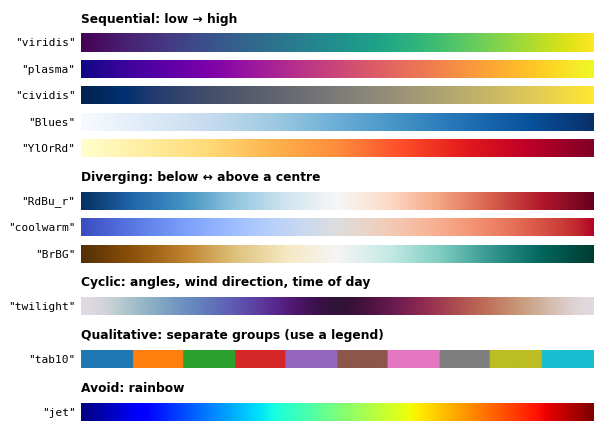
jet and rainbow maps: their bright bands create edges that are not in the data, and many colour-blind readers cannot read them._r to any name to reverse it: "Blues_r", "RdBu_r".import numpy as np
import matplotlib.pyplot as plt
groups = {
"Sequential: low → high": ["viridis", "plasma", "cividis", "Blues", "YlOrRd"],
"Diverging: below ↔ above a centre": ["RdBu_r", "coolwarm", "BrBG"],
"Cyclic: angles, wind direction, time of day": ["twilight"],
"Qualitative: separate groups (use a legend)": ["tab10"],
"Avoid: rainbow": ["jet"],
}
gradient = np.linspace(0, 1, 256).reshape(1, -1) # one row: 0 ... 1
rows = sum(len(names) + 1 for names in groups.values())
fig, axes = plt.subplots(rows, 1, figsize=(8, rows * 0.42))
row = 0
for title, names in groups.items():
axes[row].set_axis_off()
axes[row].text(0, 0.2, title, fontsize=11, fontweight="bold",
transform=axes[row].transAxes)
row += 1
for name in names:
axes[row].imshow(gradient, aspect="auto", cmap=name)
axes[row].set_axis_off()
axes[row].text(-0.01, 0.5, f'"{name}"', ha="right", va="center",
family="monospace", transform=axes[row].transAxes)
row += 1
fig.subplots_adjust(left=0.18, right=0.98, hspace=0.45)
plt.show()ax.imshow(data, cmap="Blues") # light = low, dark = high
ax.imshow(data, cmap="Blues_r") # _r reverses it: dark = low, light = high
# See every colormap name that Matplotlib knows
import matplotlib
print(sorted(matplotlib.colormaps))shrink · aspect
shrink sets the length as a fraction of the plot height (1 = full height).
aspect sets the thickness: the bar is aspect times longer than
it is wide, so a bigger number gives a thinner bar (default 20).
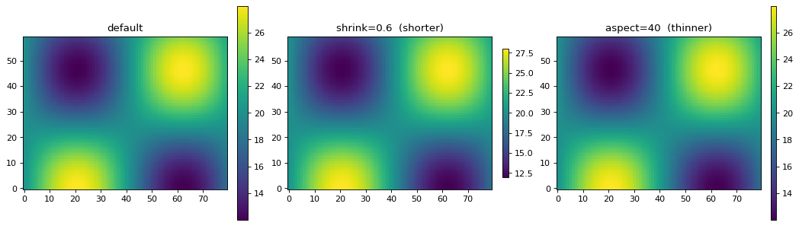
import numpy as np
import matplotlib.pyplot as plt
x = np.linspace(0, 6, 80)
y = np.linspace(0, 4, 60)
X, Y = np.meshgrid(x, y)
Z = 20 + 8 * np.sin(X) * np.cos(Y) # values from about 12 to 28
fig, axes = plt.subplots(1, 3, figsize=(13, 3.6), layout="constrained")
im0 = axes[0].imshow(Z, cmap="viridis", origin="lower")
fig.colorbar(im0, ax=axes[0]) # default size
axes[0].set_title("default")
im1 = axes[1].imshow(Z, cmap="viridis", origin="lower")
fig.colorbar(im1, ax=axes[1], shrink=0.6) # 60% of the plot height
axes[1].set_title("shrink=0.6 (shorter)")
im2 = axes[2].imshow(Z, cmap="viridis", origin="lower")
fig.colorbar(im2, ax=axes[2], aspect=40) # length = 40 x width
axes[2].set_title("aspect=40 (thinner)")
plt.show()vmin · vmax · ticks · norm
By default the colours stretch from the smallest to the largest value. Set
vmin and vmax to choose the range yourself, especially when several
plots must be compared. ticks= chooses which numbers appear on the bar.
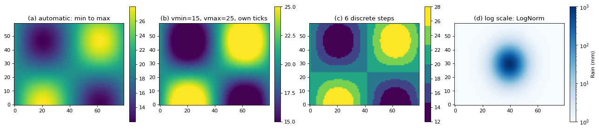
vmin=15, vmax=25: values outside this range get the end colours.plt.get_cmap("viridis", 6): 6 clear steps are easier to read than a smooth gradient.norm=LogNorm(vmin=1, vmax=1000): for skewed data like rainfall, where most values are small.import numpy as np
import matplotlib.pyplot as plt
from matplotlib.colors import LogNorm
x = np.linspace(0, 6, 80)
y = np.linspace(0, 4, 60)
X, Y = np.meshgrid(x, y)
Z = 20 + 8 * np.sin(X) * np.cos(Y) # values from about 12 to 28
rain = 10 ** (3 * np.exp(-((X - 3)**2 + (Y - 2)**2))) # 1 to 1000 mm: very skewed
fig, axes = plt.subplots(1, 4, figsize=(16, 3.4), layout="constrained")
im = axes[0].imshow(Z, cmap="viridis", origin="lower")
fig.colorbar(im, ax=axes[0])
axes[0].set_title("(a) automatic: min to max")
im = axes[1].imshow(Z, cmap="viridis", origin="lower", vmin=15, vmax=25)
fig.colorbar(im, ax=axes[1], ticks=[15, 17.5, 20, 22.5, 25])
axes[1].set_title("(b) vmin=15, vmax=25, own ticks")
steps = plt.get_cmap("viridis", 6) # only 6 colours
im = axes[2].imshow(Z, cmap=steps, origin="lower", vmin=12, vmax=28)
fig.colorbar(im, ax=axes[2])
axes[2].set_title("(c) 6 discrete steps")
im = axes[3].imshow(rain, cmap="Blues", origin="lower", norm=LogNorm(vmin=1, vmax=1000))
fig.colorbar(im, ax=axes[3], label="Rain (mm)")
axes[3].set_title("(d) log scale: LogNorm")
plt.show()pad
pad is the gap between the plot and the colorbar, as a fraction of the plot size.
The default is 0.05 for a bar on the right. Increase it when the colorbar touches
tick labels; decrease it to save space.
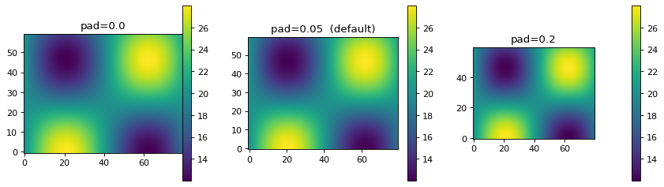
import numpy as np
import matplotlib.pyplot as plt
x = np.linspace(0, 6, 80)
y = np.linspace(0, 4, 60)
X, Y = np.meshgrid(x, y)
Z = 20 + 8 * np.sin(X) * np.cos(Y) # values from about 12 to 28
fig, axes = plt.subplots(1, 3, figsize=(13, 3.6))
for ax, pad in zip(axes, [0.0, 0.05, 0.2]):
image = ax.imshow(Z, cmap="viridis", origin="lower")
fig.colorbar(image, ax=ax, pad=pad) # gap between plot and colorbar
ax.set_title(f"pad={pad}" + (" (default)" if pad == 0.05 else ""))
plt.show()location="right" | "left" | "top" | "bottom"
location puts the colorbar on any side and turns it horizontal for top and bottom.
Use the bottom for wide maps, and the right for tall plots.
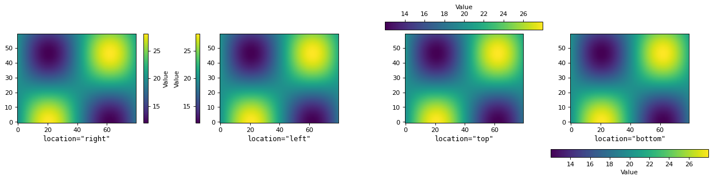
import numpy as np
import matplotlib.pyplot as plt
x = np.linspace(0, 6, 80)
y = np.linspace(0, 4, 60)
X, Y = np.meshgrid(x, y)
Z = 20 + 8 * np.sin(X) * np.cos(Y) # values from about 12 to 28
fig, axes = plt.subplots(1, 4, figsize=(16, 3.8), layout="constrained")
for ax, place in zip(axes, ["right", "left", "top", "bottom"]):
image = ax.imshow(Z, cmap="viridis", origin="lower")
fig.colorbar(image, ax=ax, location=place, label="Value")
ax.set_xlabel(f'location="{place}"', family="monospace", fontsize=11)
plt.show()
Two more positions are very common in research figures: one shared colorbar for
several panels (pass a list of axes to ax=), and a small colorbar inside the
plot (draw it in an inset_axes and pass it as cax=).
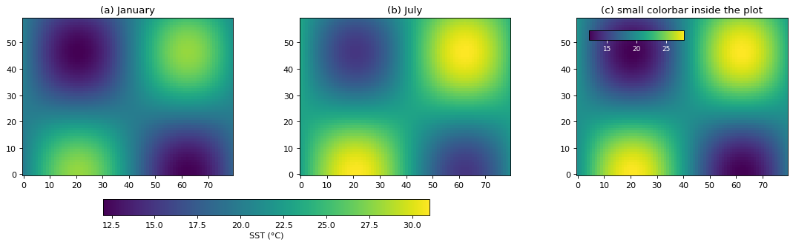
import numpy as np
import matplotlib.pyplot as plt
x = np.linspace(0, 6, 80)
y = np.linspace(0, 4, 60)
X, Y = np.meshgrid(x, y)
Z = 20 + 8 * np.sin(X) * np.cos(Y) # values from about 12 to 28
fig, axes = plt.subplots(1, 3, figsize=(14, 4), layout="constrained")
# (a) + (b): one shared colorbar under both panels (same vmin and vmax!)
for ax, data, title in zip(axes[:2], [Z, Z + 3], ["(a) January", "(b) July"]):
image = ax.imshow(data, cmap="viridis", origin="lower", vmin=12, vmax=31)
ax.set_title(title)
fig.colorbar(image, ax=axes[:2], location="bottom", shrink=0.6, label="SST (°C)")
# (c): a small colorbar INSIDE the plot, in the lower-left corner
image = axes[2].imshow(Z, cmap="viridis", origin="lower")
cax = axes[2].inset_axes([0.06, 0.86, 0.45, 0.06]) # x, y, width, height (0-1)
fig.colorbar(image, cax=cax, orientation="horizontal")
cax.tick_params(labelsize=8, colors="white")
axes[2].set_title("(c) small colorbar inside the plot")
plt.show()vmin and vmax.inset_axes([x, y, width, height]) uses fractions of the plot: [0.06, 0.86, 0.45, 0.06] is top-left.cax= means "draw the colorbar in exactly this axes". It replaces ax=.extend="neither" | "min" | "max" | "both"
When your data go beyond vmin or vmax, those values are painted with the
end colour. A pointed end tells the reader that some values are further out
than the numbers on the bar.
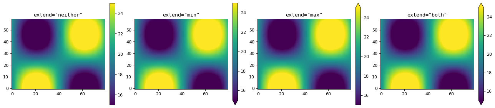
| Setting | Arrow | Use when |
|---|---|---|
"neither" | none (default) | all data are inside vmin–vmax |
"min" | bottom (or left) | some values are below vmin |
"max" | top (or right) | some values are above vmax |
"both" | both ends | values on both sides are cut off |
import numpy as np
import matplotlib.pyplot as plt
x = np.linspace(0, 6, 80)
y = np.linspace(0, 4, 60)
X, Y = np.meshgrid(x, y)
Z = 20 + 8 * np.sin(X) * np.cos(Y) # values from about 12 to 28
fig, axes = plt.subplots(1, 4, figsize=(16, 3.4), layout="constrained")
for ax, ext in zip(axes, ["neither", "min", "max", "both"]):
# Data go from 12 to 28, but the colour range is only 15 to 25
image = ax.imshow(Z, cmap="viridis", origin="lower", vmin=15, vmax=25)
fig.colorbar(image, ax=ax, extend=ext)
ax.set_title(f'extend="{ext}"', family="monospace")
plt.show()cmap = plt.get_cmap("viridis").copy()
cmap.set_over("red") # colour for values ABOVE vmax
cmap.set_under("white") # colour for values BELOW vmin
image = ax.imshow(data, cmap=cmap, vmin=15, vmax=25)
fig.colorbar(image, ax=ax, extend="both")set_label · tick_paramsAlways give the colorbar a label with units, and make its numbers as large as the other tick labels.
cbar = fig.colorbar(image, ax=ax)
cbar.set_label("Sea-surface temperature (°C)", fontsize=12, labelpad=10)
cbar.ax.tick_params(labelsize=10) # size of the numbers
cbar.set_ticks([15, 20, 25, 30]) # which numbers to show
cbar.ax.yaxis.set_major_formatter("{x:.0f} °C") # 15 -> "15 °C" (vertical bar)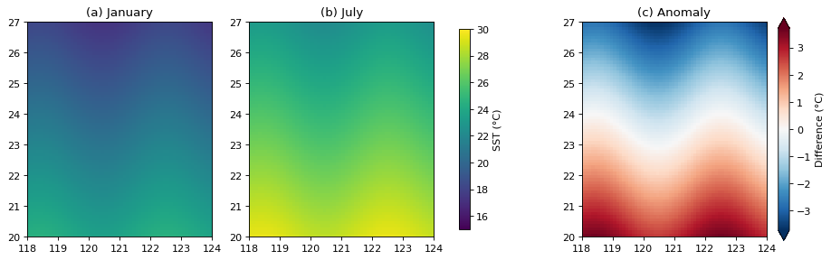
vmin=15, vmax=30 and share one colorbar. With separate automatic ranges, January and July could look equally warm, even though July is 5 °C warmer.vmin=-limit, vmax=limit makes white mean "no difference". Blue is cooler than average, red is warmer.import numpy as np
import matplotlib.pyplot as plt
x = np.linspace(118, 124, 60)
y = np.linspace(20, 27, 70)
X, Y = np.meshgrid(x, y)
january = 24 - 0.9 * (Y - 20) + 0.5 * np.sin(X * 1.5)
july = january + 5
anomaly = july - july.mean() # difference from the average
fig, axes = plt.subplots(1, 3, figsize=(14, 4))
# (a) and (b): SAME vmin and vmax, so one colour = one temperature
for ax, data, title in zip(axes[:2], [january, july], ["(a) January", "(b) July"]):
image = ax.imshow(data, cmap="viridis", origin="lower",
extent=[118, 124, 20, 27], vmin=15, vmax=30)
ax.set_title(title)
fig.colorbar(image, ax=axes[:2], label="SST (°C)", shrink=0.9)
# (c): values above AND below zero -> diverging colormap centred on 0
limit = np.abs(anomaly).max()
image_c = axes[2].imshow(anomaly, cmap="RdBu_r", origin="lower",
extent=[118, 124, 20, 27], vmin=-limit, vmax=limit)
axes[2].set_title("(c) Anomaly")
fig.colorbar(image_c, ax=axes[2], label="Difference (°C)", extend="both")
plt.show()| Write this | What it does |
|---|---|
fig.colorbar(image, ax=ax) | Add a colorbar for image next to ax |
cmap="viridis" | Colormap name (inside imshow, contourf, scatter…) |
vmin=15, vmax=25 | Colour range (inside imshow, contourf, scatter…) |
shrink=0.7 | Length: 70% of the plot |
aspect=30 | Thickness: bigger = thinner |
pad=0.1 | Gap between plot and bar |
location="bottom" | Side: right, left, top, bottom |
orientation="horizontal" | Horizontal bar (when using cax=) |
extend="both" | Pointed ends for out-of-range values |
ticks=[15, 20, 25] | Numbers shown on the bar |
label="SST (°C)" | Label with units |
ax=[ax1, ax2] | One colorbar shared by several panels |
cax=small_axes | Draw the bar inside a given axes |
Markers show the measured points and lines show how they connect. Their shape, size, colour, and style tell the reader what kind of data they see.
marker="o"A marker shows each measured point. Choose the shape with one character:
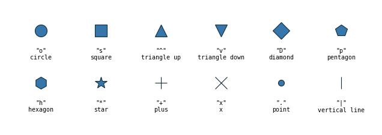
"+", "x", and "|" are lines only: they have no fill colour.import matplotlib.pyplot as plt
markers = ["o", "s", "^", "v", "D", "p", "h", "*", "+", "x", ".", "|"]
names = ["circle", "square", "triangle up", "triangle down", "diamond", "pentagon",
"hexagon", "star", "plus", "x", "point", "vertical line"]
fig, ax = plt.subplots(figsize=(10, 3.4))
for i, (marker, name) in enumerate(zip(markers, names)):
col, row = i % 6, i // 6
ax.plot(col, -row, marker=marker, markersize=18,
color="#3776ab", markeredgecolor="#112d3a")
ax.text(col, -row - 0.32, f'"{marker}"\n{name}', ha="center", va="top",
family="monospace", fontsize=9)
ax.set_xlim(-0.6, 5.6)
ax.set_ylim(-1.9, 0.5)
ax.axis("off")
plt.show()markersize · markerfacecolor · markeredgecolorEvery marker has a size, an inside (face) colour, and an edge colour:
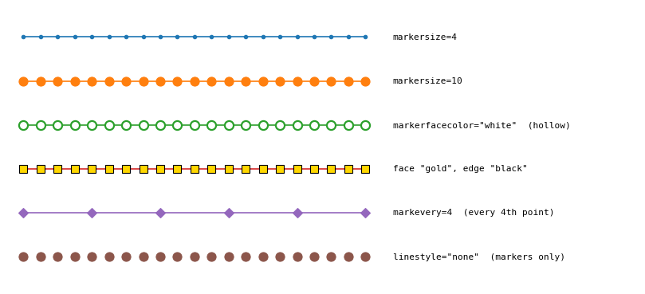
markerfacecolor="white" or "none") let overlapping points stay visible.markevery=4 keeps a long line readable: it draws a marker on every 4th point only.ms = markersize, mfc = face colour, mec = edge colour, mew = edge width.import numpy as np
import matplotlib.pyplot as plt
x = np.arange(0, 10.5, 0.5)
fig, ax = plt.subplots(figsize=(10, 4.5), layout="constrained")
ax.plot(x, np.full_like(x, 5), marker="o", markersize=4)
ax.plot(x, np.full_like(x, 4), marker="o", markersize=10)
ax.plot(x, np.full_like(x, 3), marker="o", markersize=10,
markerfacecolor="white", markeredgewidth=2)
ax.plot(x, np.full_like(x, 2), marker="s", markersize=9,
markerfacecolor="gold", markeredgecolor="black")
ax.plot(x, np.full_like(x, 1), marker="D", markersize=8, markevery=4)
ax.plot(x, np.full_like(x, 0), marker="o", markersize=10, linestyle="none")
labels = ["markersize=4", "markersize=10", 'markerfacecolor="white" (hollow)',
'face "gold", edge "black"', "markevery=4 (every 4th point)",
'linestyle="none" (markers only)']
for y, text in zip([5, 4, 3, 2, 1, 0], labels):
ax.text(10.8, y, text, va="center", family="monospace", fontsize=10)
ax.set_xlim(-0.5, 18)
ax.set_ylim(-0.7, 5.7)
ax.axis("off")
plt.show()linestyle · linewidth · "o--"
plot() accepts a short format string that combines a marker and a line
style: "o-" is circles joined by a solid line, "s--" is squares with a dashed line.
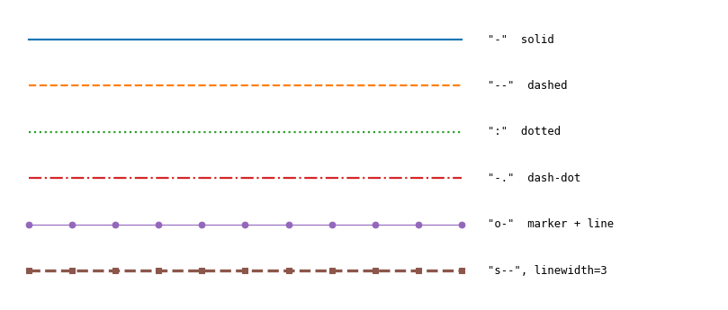
linewidth (or lw): 1.5–2 for the main line, 1 for background lines.import numpy as np
import matplotlib.pyplot as plt
x = np.linspace(0, 10, 11)
fig, ax = plt.subplots(figsize=(10, 4.2), layout="constrained")
ax.plot(x, x * 0 + 5, "-", linewidth=2) # solid
ax.plot(x, x * 0 + 4, "--", linewidth=2) # dashed
ax.plot(x, x * 0 + 3, ":", linewidth=2) # dotted
ax.plot(x, x * 0 + 2, "-.", linewidth=2) # dash-dot
ax.plot(x, x * 0 + 1, "o-", linewidth=1) # circles joined by a line
ax.plot(x, x * 0 + 0, "s--", linewidth=3) # squares + thick dashed line
labels = ['"-" solid', '"--" dashed', '":" dotted', '"-." dash-dot',
'"o-" marker + line', '"s--", linewidth=3']
for y, text in zip([5, 4, 3, 2, 1, 0], labels):
ax.text(10.6, y, text, va="center", family="monospace", fontsize=11)
ax.set_xlim(-0.5, 16)
ax.set_ylim(-0.7, 5.7)
ax.axis("off")
plt.show()markersize vs s
This confuses almost everyone once. In plot(), markersize is the
diameter. In scatter(), s is the area.
So s=100 looks about the same as markersize=10.
# plot(): markersize is the DIAMETER in points
ax.plot(x, y, "o", markersize=10)
# scatter(): s is the AREA in points²
ax.scatter(x, y, s=100) # about the same size as markersize=10
# scatter can give every point its own size and colour
ax.scatter(x, y, s=sizes, c=values, cmap="viridis",
marker="^", edgecolor="black", linewidth=0.5)| Write this | What it does |
|---|---|
marker="o" | Marker shape |
markersize=8 (ms) | Diameter in plot() |
s=64 | Area in scatter() |
markerfacecolor="white" (mfc) | Inside colour: white or "none" for hollow |
markeredgecolor="black" (mec) | Edge colour |
markeredgewidth=1.5 (mew) | Edge thickness |
markevery=5 | Marker on every 5th point |
linestyle="--" (ls) | "-", "--", ":", "-.", or "none" |
linewidth=2 (lw) | Line thickness |
"o--" | Format string: marker + line style |
The legend names each line or group. A good legend is close to the data and never covers it.
label="..." + ax.legend()
Give every line a label= when you draw it, then call ax.legend() once.
Lines without a label (or with a label that starts with _) are left out.
loc · bbox_to_anchor · ncol
loc chooses the corner: "best", "upper right",
"upper left", "lower left", "lower right", "center",
and more. To put the legend outside the plot, combine loc with
bbox_to_anchor: loc says which corner of the legend is pinned, and
bbox_to_anchor says where to pin it (in plot fractions).
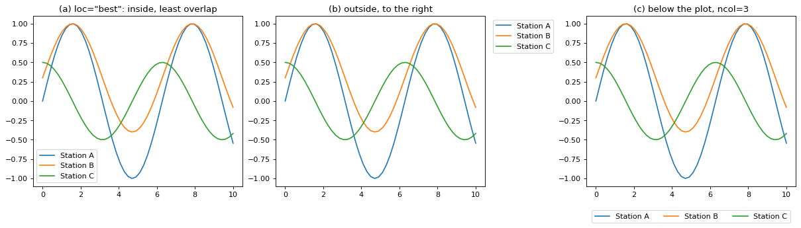
loc="best" finds the emptiest corner. Good for quick work.loc="upper left", bbox_to_anchor=(1.02, 1): the legend's upper-left corner is pinned just right of the plot.loc="upper center", bbox_to_anchor=(0.5, -0.12), ncol=3: centred below, in 3 columns.layout="constrained" (or bbox_inches="tight" when saving) so an outside legend is not cut off.import numpy as np
import matplotlib.pyplot as plt
x = np.linspace(0, 10, 50)
fig, axes = plt.subplots(1, 3, figsize=(15, 4.2), layout="constrained")
for ax in axes:
ax.plot(x, np.sin(x), label="Station A")
ax.plot(x, np.sin(x) * 0.7 + 0.3, label="Station B")
ax.plot(x, np.cos(x) * 0.5, label="Station C")
axes[0].legend(loc="best")
axes[0].set_title('(a) loc="best": inside, least overlap')
axes[1].legend(loc="upper left", bbox_to_anchor=(1.02, 1))
axes[1].set_title("(b) outside, to the right")
axes[2].legend(loc="upper center", bbox_to_anchor=(0.5, -0.12), ncol=3)
axes[2].set_title("(c) below the plot, ncol=3")
plt.show()title · frameon · fontsize · markerscaleA legend can have a title, no frame, its own font size, and bigger symbols than the plot.
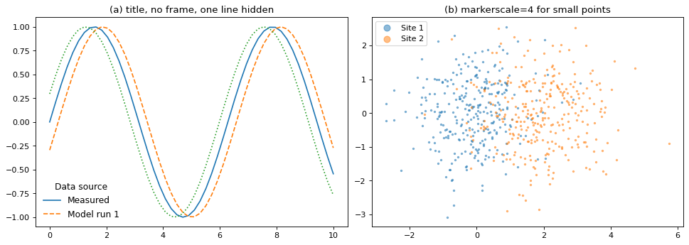
import numpy as np
import matplotlib.pyplot as plt
rng = np.random.default_rng(1)
x = np.linspace(0, 10, 50)
fig, axes = plt.subplots(1, 2, figsize=(12, 4.2), layout="constrained")
# (a) A styled legend
axes[0].plot(x, np.sin(x), label="Measured")
axes[0].plot(x, np.sin(x - 0.3), "--", label="Model run 1")
axes[0].plot(x, np.sin(x + 0.3), ":", label="_nolegend_") # hidden from legend
axes[0].legend(title="Data source", frameon=False, fontsize=11,
loc="lower left", title_fontsize=11)
axes[0].set_title("(a) title, no frame, one line hidden")
# (b) Tiny scatter points: make their legend symbols bigger
for name, shift in [("Site 1", 0), ("Site 2", 2)]:
axes[1].scatter(rng.normal(shift, 1, 300), rng.normal(0, 1, 300),
s=4, alpha=0.5, label=name)
axes[1].legend(markerscale=4, loc="upper left")
axes[1].set_title("(b) markerscale=4 for small points")
plt.show()legend() · remove() · set_visible()
A legend appears only when you call ax.legend(). You can remove it completely,
hide it and show it again, or leave out just one line:
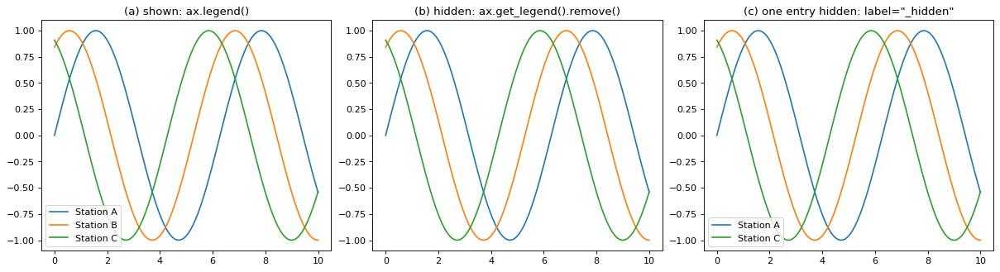
import numpy as np
import matplotlib.pyplot as plt
x = np.linspace(0, 10, 100)
fig, axes = plt.subplots(1, 3, figsize=(15, 4), layout="constrained")
for ax in axes:
ax.plot(x, np.sin(x), label="Station A")
ax.plot(x, np.sin(x + 1), label="Station B")
ax.plot(x, np.sin(x + 2), label="Station C")
# (a) SHOW: call legend()
axes[0].legend(loc="lower left")
axes[0].set_title("(a) shown: ax.legend()")
# (b) HIDE: make the legend, then remove it
axes[1].legend(loc="lower left")
axes[1].get_legend().remove()
axes[1].set_title("(b) hidden: ax.get_legend().remove()")
# (c) HIDE ONE ENTRY: give that line a label starting with "_"
axes[2].lines[1].set_label("_hidden")
axes[2].legend(loc="lower left")
axes[2].set_title('(c) one entry hidden: label="_hidden"')
plt.show()ax.plot(x, y1, label="Station A") # only lines WITH a label appear
# 1. Show the legend
ax.legend()
# 2. Hide it again (it is removed from the plot)
ax.get_legend().remove()
# 3. Hide it but keep it, so you can show it later
legend = ax.legend()
legend.set_visible(False) # disappear
legend.set_visible(True) # appear again
# 4. Leave one line out of the legend
ax.plot(x, y2, label="_nolegend_") # any label that starts with _
# 5. pandas and seaborn draw a legend automatically: switch it off
df.plot(x="day", y=["temp", "rain"], legend=False)
sns.lineplot(data=df, x="day", y="temp", hue="station", legend=False)Interactive version: in a normal Python window, clicking a name in the legend can hide or show its line, and a key can make the whole legend disappear and come back. This is very handy when many lines overlap.
import numpy as np
import matplotlib.pyplot as plt
x = np.linspace(0, 10, 200)
fig, ax = plt.subplots()
lines = []
for name, shift in zip(["A", "B", "C"], [0, 1, 2]):
line, = ax.plot(x, np.sin(x + shift), label=f"Station {name}")
lines.append(line)
legend = ax.legend(loc="upper right", title="Click a name")
# Link every legend symbol and name to its line in the plot
link = {}
for symbol, text, line in zip(legend.get_lines(), legend.get_texts(), lines):
symbol.set_picker(5) # clickable (5 points tolerance)
text.set_picker(True)
link[symbol] = line
link[text] = line
def on_click_legend(event):
"""Clicking a legend entry hides or shows its line."""
line = link[event.artist]
line.set_visible(not line.get_visible())
for item, target in link.items(): # fade the hidden entry
if target is line:
item.set_alpha(1.0 if line.get_visible() else 0.25)
fig.canvas.draw_idle()
def on_key(event):
"""Pressing T makes the whole legend disappear or appear."""
if event.key == "t":
legend.set_visible(not legend.get_visible())
fig.canvas.draw_idle()
fig.canvas.mpl_connect("pick_event", on_click_legend)
fig.canvas.mpl_connect("key_press_event", on_key)
plt.show()set_picker(5) makes the legend symbol clickable. Matplotlib then sends a pick_event.link remembers which plot line belongs to each legend entry.set_visible(not ...) switches between shown and hidden. The faded entry shows which lines are off..py file, or use %matplotlib widget in Jupyter. A saved PNG cannot be clicked.remove() deletes the legend. Call ax.legend() again to bring it back.set_visible(False) keeps the legend object, so set_visible(True) shows exactly the same legend again.
With twinx(), each y-axis has its own legend. Collect the lines and build one legend.
For several panels with the same lines, use one fig.legend() instead of repeating it.
fig, ax1 = plt.subplots()
line1 = ax1.plot(months, temp, color="tab:red", label="Temperature")
ax2 = ax1.twinx()
line2 = ax2.plot(months, rain, color="tab:blue", label="Rainfall")
# Each axes has its own legend. Combine them into ONE legend:
lines = line1 + line2
ax1.legend(lines, [line.get_label() for line in lines], loc="upper left")# One legend for the whole figure, outside on the right
fig, axes = plt.subplots(1, 2, layout="constrained")
axes[0].plot(x, y1, label="Model")
axes[1].plot(x, y2, label="Model")
fig.legend(*axes[0].get_legend_handles_labels(), loc="outside right upper")| Write this | What it does |
|---|---|
ax.plot(x, y, label="Model") | Name a line for the legend |
ax.legend() | Draw the legend |
loc="upper left" | Which corner |
bbox_to_anchor=(1.02, 1) | Pin point, in plot fractions (outside if > 1) |
ncol=3 | Number of columns |
title="Data source" | Legend title |
frameon=False | No box around the legend |
fontsize=10 | Text size |
markerscale=3 | Bigger symbols in the legend only |
label="_nolegend_" | Leave this line out of the legend |
ax.get_legend().remove() | Delete the legend |
legend.set_visible(False) | Hide the legend (True shows it again) |
df.plot(..., legend=False) | No automatic legend in pandas / seaborn |
The axes give every point its meaning: labels, units, range, ticks, and scale.
The default axes have no labels, no units, and empty space at the ends. Ten seconds of work makes a big difference:
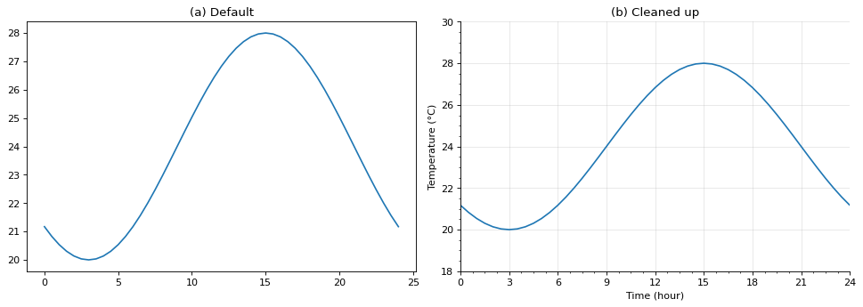
set_xlabel / set_ylabel: always with units in brackets.set_xlim / set_ylim: choose the visible range.set_xticks(range(0, 25, 3)): a tick every 3 hours. minorticks_on() adds small ticks.grid(alpha=0.3): a light grid helps reading values without shouting.spines[["top", "right"]].set_visible(False): removes the frame lines you do not need.import numpy as np
import matplotlib.pyplot as plt
hours = np.arange(0, 24.5, 0.5)
temp = 24 + 4 * np.sin((hours - 9) * np.pi / 12)
fig, (ax1, ax2) = plt.subplots(1, 2, figsize=(12, 4.2), layout="constrained")
# (a) Default: no labels, no units, automatic everything
ax1.plot(hours, temp)
ax1.set_title("(a) Default")
# (b) Cleaned-up axes
ax2.plot(hours, temp)
ax2.set_title("(b) Cleaned up")
ax2.set_xlabel("Time (hour)")
ax2.set_ylabel("Temperature (°C)")
ax2.set_xlim(0, 24) # no empty space at the ends
ax2.set_ylim(18, 30)
ax2.set_xticks(range(0, 25, 3)) # a tick every 3 hours
ax2.minorticks_on() # small ticks in between
ax2.grid(alpha=0.3) # light grid
ax2.spines[["top", "right"]].set_visible(False) # remove the box top and right
ax2.tick_params(labelsize=10)
plt.show()set_yscale · invert_yaxis · twinxFour axis tricks you will use again and again:
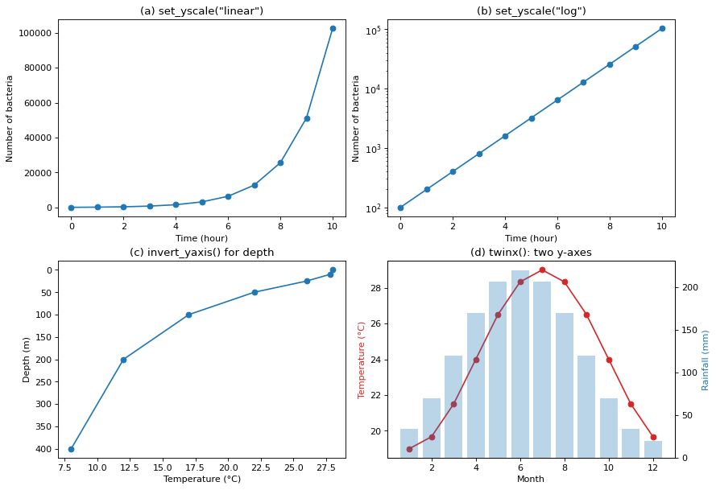
import numpy as np
import matplotlib.pyplot as plt
fig, axes = plt.subplots(2, 2, figsize=(11, 7.5), layout="constrained")
# (a) and (b): the same fast-growing numbers on a linear and a log axis
hours = np.arange(0, 11)
bacteria = 100 * 2 ** hours
for ax, scale in zip(axes[0], ["linear", "log"]):
ax.plot(hours, bacteria, "o-")
ax.set_yscale(scale)
ax.set_title(f'({"a" if scale == "linear" else "b"}) set_yscale("{scale}")')
ax.set_xlabel("Time (hour)")
ax.set_ylabel("Number of bacteria")
# (c) Depth goes down: invert the y-axis
depth = np.array([0, 10, 25, 50, 100, 200, 400])
temp = np.array([28, 27.8, 26, 22, 17, 12, 8])
axes[1, 0].plot(temp, depth, "o-")
axes[1, 0].invert_yaxis()
axes[1, 0].set_title("(c) invert_yaxis() for depth")
axes[1, 0].set_xlabel("Temperature (°C)")
axes[1, 0].set_ylabel("Depth (m)")
# (d) Two different units: a second y-axis
months = np.arange(1, 13)
temp_m = 24 + 5 * np.sin((months - 4) * np.pi / 6)
rain_m = 120 + 100 * np.sin((months - 3) * np.pi / 6)
ax_left = axes[1, 1]
ax_left.plot(months, temp_m, color="tab:red", marker="o")
ax_left.set_ylabel("Temperature (°C)", color="tab:red")
ax_right = ax_left.twinx() # shares x, new y on the right
ax_right.bar(months, rain_m, color="tab:blue", alpha=0.3)
ax_right.set_ylabel("Rainfall (mm)", color="tab:blue")
ax_left.set_title("(d) twinx(): two y-axes")
ax_left.set_xlabel("Month")
plt.show()mdates · PercentFormatter
Tick labels can be formatted: month names instead of crowded dates, or 75%
instead of 0.75.
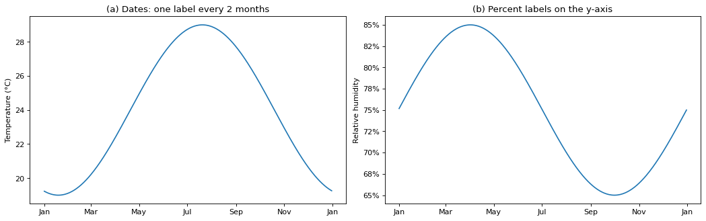
import numpy as np
import pandas as pd
import matplotlib.pyplot as plt
import matplotlib.dates as mdates
from matplotlib.ticker import PercentFormatter
dates = pd.date_range("2026-01-01", "2026-12-31", freq="D")
temp = 24 + 5 * np.sin((dates.dayofyear - 110) * 2 * np.pi / 365)
humidity = 0.75 + 0.1 * np.sin(dates.dayofyear * 2 * np.pi / 365)
fig, (ax1, ax2) = plt.subplots(1, 2, figsize=(13, 4), layout="constrained")
ax1.plot(dates, temp)
ax1.xaxis.set_major_locator(mdates.MonthLocator(interval=2)) # every 2 months
ax1.xaxis.set_major_formatter(mdates.DateFormatter("%b")) # Jan, Mar, ...
ax1.set_title("(a) Dates: one label every 2 months")
ax1.set_ylabel("Temperature (°C)")
ax2.plot(dates, humidity)
ax2.yaxis.set_major_formatter(PercentFormatter(xmax=1, decimals=0)) # 0.75 -> 75%
ax2.xaxis.set_major_formatter(mdates.DateFormatter("%b"))
ax2.set_title("(b) Percent labels on the y-axis")
ax2.set_ylabel("Relative humidity")
plt.show()MonthLocator(interval=2) decides where ticks go. DateFormatter("%b") decides how they look."%Y-%m-%d" → 2026-10-20, "%d %b" → 20 Oct, "%H:%M" → 14:30.axis("off") · set_xticks([]) · spinesImages, maps, diagrams, and empty panels often look better without axes. You can switch off everything at once, or only the parts you do not need:
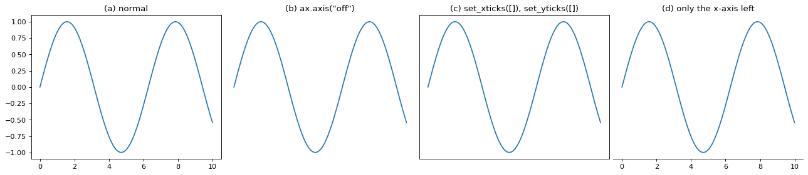
ax.axis("off"): frame, ticks, numbers, and labels all disappear. The title stays.set_xticks([]) and set_yticks([]): no numbers, but a frame. Common for photos and microscope images.spines and a whole axis with yaxis.set_visible(False).import numpy as np
import matplotlib.pyplot as plt
x = np.linspace(0, 10, 100)
fig, axes = plt.subplots(1, 4, figsize=(16, 3.4), layout="constrained")
for ax in axes:
ax.plot(x, np.sin(x))
axes[0].set_title("(a) normal")
axes[1].axis("off") # frame, ticks, numbers: all off
axes[1].set_title('(b) ax.axis("off")')
axes[2].set_xticks([]) # no ticks or numbers ...
axes[2].set_yticks([]) # ... but the frame stays
axes[2].set_title("(c) set_xticks([]), set_yticks([])")
axes[3].spines[["left", "top", "right"]].set_visible(False)
axes[3].yaxis.set_visible(False) # hide the whole y-axis
axes[3].set_title("(d) only the x-axis left")
plt.show()ax.axis("off") # everything off
ax.axis("on") # and back on
ax.set_xticks([]) # no x ticks and numbers (frame stays)
ax.tick_params(labelbottom=False) # keep the tick marks, hide only the numbers
ax.tick_params(bottom=False) # keep the numbers, hide only the tick marks
ax.xaxis.set_visible(False) # the whole x-axis off
ax.spines["top"].set_visible(False) # one frame line off
ax.set_frame_on(False) # the whole frame off, ticks stay
# A 2 x 3 figure with only 5 plots: switch off the empty panel
fig, axes = plt.subplots(2, 3)
axes[1, 2].axis("off")fontsize · labelpad · tick_params
The label ("Time (hour)") and the tick numbers (0, 5, 10 …) are
set separately. The label is changed in set_xlabel(); the numbers and tick marks
in tick_params().
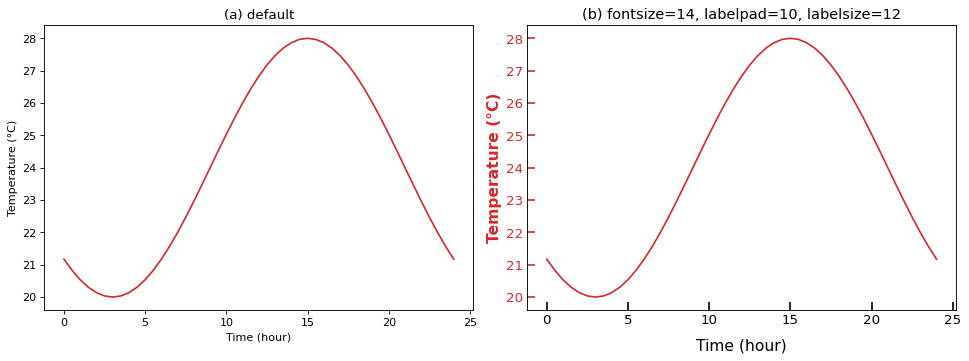
fontsize=14 in set_xlabel: size of the label. labelpad=10: gap between label and numbers.tick_params(labelsize=12): size of the numbers. length and width: size of the tick marks.direction="in" points ticks into the plot, as many journals prefer.tick_params(axis="y", colors="tab:red") colours the y numbers and ticks. Use only labelcolor= to colour just the numbers.import numpy as np
import matplotlib.pyplot as plt
hours = np.arange(0, 24.5, 0.5)
temp = 24 + 4 * np.sin((hours - 9) * np.pi / 12)
fig, (ax1, ax2) = plt.subplots(1, 2, figsize=(12, 4.4), layout="constrained")
# (a) Default sizes
ax1.plot(hours, temp, color="tab:red")
ax1.set_xlabel("Time (hour)")
ax1.set_ylabel("Temperature (°C)")
ax1.set_title("(a) default")
# (b) Bigger labels, bigger numbers, longer ticks, a little more space
ax2.plot(hours, temp, color="tab:red")
ax2.set_xlabel("Time (hour)", fontsize=14, labelpad=10) # labelpad: gap to the numbers
ax2.set_ylabel("Temperature (°C)", fontsize=14, fontweight="bold", color="tab:red")
ax2.tick_params(axis="both", labelsize=12, # size of the numbers
length=7, width=1.5, # tick mark length and thickness
direction="in") # ticks point into the plot
ax2.tick_params(axis="y", colors="tab:red") # y ticks and numbers in red
ax2.set_title("(b) fontsize=14, labelpad=10, labelsize=12", fontsize=13)
plt.show()ax.set_xlabel("Time (hour)", fontsize=14) # size in points
ax.set_xlabel("Time (hour)", fontsize="large") # or: small, medium, large, x-large
ax.set_ylabel("Depth (m)", labelpad=12) # distance from the numbers
ax.set_ylabel("Depth (m)", rotation=0, ha="right") # horizontal y label
ax.xaxis.set_label_position("top") # x label above the plot
ax.tick_params(axis="x", labelsize=12, rotation=45) # number size and angle
ax.tick_params(which="minor", length=3) # the small tickslabelrotation=45 · ha="right"
Long names or dates on the x-axis run into each other. Tilting them by 45° fixes this.
But a plain rotation turns each label around its centre, so the labels
look shifted to the left of their bars. Add ha="right" and
rotation_mode="anchor" so the end of each label sits exactly
under its tick.
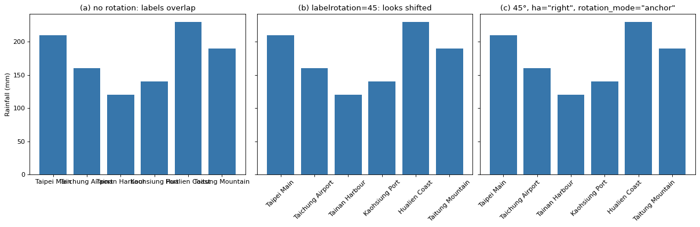
tick_params(axis="x", labelrotation=45): quick, fine for short labels.plt.setp(ax.get_xticklabels(), rotation=45, ha="right", rotation_mode="anchor"): the clean version for long labels.ha = horizontal alignment: which end of the text is fixed to the tick.fig.autofmt_xdate() for dates.import matplotlib.pyplot as plt
stations = ["Taipei Main", "Taichung Airport", "Tainan Harbour",
"Kaohsiung Port", "Hualien Coast", "Taitung Mountain"]
rain = [210, 160, 120, 140, 230, 190]
fig, axes = plt.subplots(1, 3, figsize=(15, 4.8), layout="constrained", sharey=True)
for ax in axes:
ax.bar(stations, rain, color="#3776ab")
axes[0].set_ylabel("Rainfall (mm)")
# (a) No rotation: long names run into each other
axes[0].set_title("(a) no rotation: labels overlap")
# (b) Rotated 45°, but each label turns around its CENTRE
axes[1].tick_params(axis="x", labelrotation=45)
axes[1].set_title("(b) labelrotation=45: looks shifted")
# (c) Rotated 45°, and the END of each label sits under its bar
plt.setp(axes[2].get_xticklabels(), rotation=45, ha="right", rotation_mode="anchor")
axes[2].set_title('(c) 45°, ha="right", rotation_mode="anchor"')
plt.show()# 1. Any axis, any angle
ax.tick_params(axis="x", labelrotation=45)
ax.tick_params(axis="y", labelrotation=90)
# 2. Best look at 45°: the END of each label sits under its tick
plt.setp(ax.get_xticklabels(), rotation=45, ha="right", rotation_mode="anchor")
# 3. When you set the ticks yourself, rotate in the same line
ax.set_xticks(range(len(names)), names, rotation=45, ha="right", rotation_mode="anchor")
# 4. Dates: Matplotlib tilts and aligns them for you
fig.autofmt_xdate() # 30° by default
fig.autofmt_xdate(rotation=45) # or choose the angle
# 5. Very long names: horizontal bars need no tilting at all
ax.barh(names, values)ax.set_aspect("equal") # 1 unit in x = 1 unit in y (maps, circles)
ax.tick_params(axis="x", rotation=45) # rotate crowded tick labels
ax.set_xticks([0, 6, 12, 18, 24], ["0h", "6h", "12h", "18h", "24h"]) # own labels
ax.set_xlim(right=24) # change only one end
fig, axes = plt.subplots(2, 1, sharex=True) # panels share one x-axis| Write this | What it does |
|---|---|
ax.set_xlabel("Time (hour)") | Axis label with units |
ax.set_xlim(0, 24) | Visible range |
ax.set_xticks([0, 6, 12]) | Tick positions (and optional labels) |
ax.minorticks_on() | Small ticks between the big ones |
ax.tick_params(labelsize=10, rotation=45) | Tick label size and angle |
ax.grid(alpha=0.3) | Light grid |
ax.set_yscale("log") | Logarithmic axis |
ax.invert_yaxis() | Values grow downward (depth) |
ax2 = ax.twinx() | Second y-axis on the right |
ax.set_aspect("equal") | Same scale on x and y |
ax.spines[["top", "right"]].set_visible(False) | Remove frame lines |
ax.axis("off") | Switch the whole axis off |
ax.set_xticks([]) | No x ticks and numbers |
ax.set_xlabel("...", fontsize=14, labelpad=10) | Label size and its distance |
ax.tick_params(labelsize=12, length=6, direction="in") | Number size, tick length, tick direction |
plt.setp(ax.get_xticklabels(), rotation=45, ha="right", rotation_mode="anchor") | Tilt x labels 45°, ends under the ticks |
Titles, labels, notes, arrows, and math text: how to put words exactly where the reader needs them.
set_title · text · annotateText turns a plot into a message. Use it to name things, point at the important part, and give context.
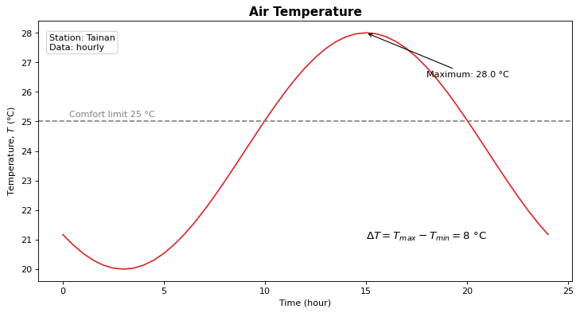
annotate(text, xy=point, xytext=place): an arrow from the text to a data point.ax.text(x, y, text) uses data coordinates. Add transform=ax.transAxes to use plot fractions (0–1), so the text stays in the corner even when the data change.bbox={...} puts a box behind the text.r"$T_{max}$", r"$\Delta T$", r"m$^2$". The r before the string keeps the backslashes.import numpy as np
import matplotlib.pyplot as plt
hours = np.arange(0, 24.5, 0.5)
temp = 24 + 4 * np.sin((hours - 9) * np.pi / 12)
peak = np.argmax(temp)
fig, ax = plt.subplots(figsize=(9, 4.8), layout="constrained")
ax.plot(hours, temp, color="tab:red")
ax.set_title("Air Temperature", fontsize=14, fontweight="bold")
ax.set_xlabel("Time (hour)")
ax.set_ylabel(r"Temperature, $T$ (°C)") # math text between $ $
# 1. Arrow pointing at one point
ax.annotate(f"Maximum: {temp[peak]:.1f} °C",
xy=(hours[peak], temp[peak]), # point the arrow at this
xytext=(hours[peak] + 3, temp[peak] - 1.5), # put the text here
arrowprops={"arrowstyle": "->", "color": "black"})
# 2. A reference line with its own label
ax.axhline(25, color="gray", linestyle="--")
ax.text(0.3, 25.15, "Comfort limit 25 °C", color="gray")
# 3. A text box in the corner, placed by axes fraction (0-1)
ax.text(0.02, 0.95, "Station: Tainan\nData: hourly", va="top",
transform=ax.transAxes, fontsize=10,
bbox={"boxstyle": "round", "facecolor": "white", "edgecolor": "lightgray"})
# 4. Math and Greek letters
ax.text(15, 21, r"$\Delta T = T_{max} - T_{min} = 8$ °C", fontsize=12)
plt.show()inset_axes · OffsetImage · AnnotationBbox
Besides text, you can place pictures in a plot: a photo of the site or instrument,
an icon that marks an event, or a logo. Read the picture with plt.imread(),
then choose one of two ways to place it:
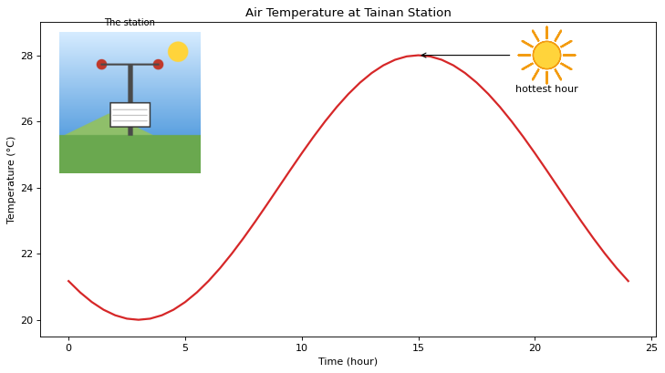
ax.inset_axes([x, y, width, height]) makes a small axes inside the plot (fractions 0–1). Show the picture there with imshow and hide its ticks with axis("off").OffsetImage(picture, zoom=0.3), then AnnotationBbox places it at xybox with an arrow to xy, just like annotate does for text.zoom sets the icon size. A PNG with a transparent background looks best for icons.import numpy as np
import matplotlib.pyplot as plt
from matplotlib.offsetbox import OffsetImage, AnnotationBbox
hours = np.arange(0, 24.5, 0.5)
temp = 24 + 4 * np.sin((hours - 9) * np.pi / 12)
# Read your pictures: any .png or .jpg file next to your script
station_photo = plt.imread("station.png")
sun_icon = plt.imread("sun.png")
fig, ax = plt.subplots(figsize=(9, 5), layout="constrained")
ax.plot(hours, temp, color="tab:red", linewidth=2)
ax.set_title("Air Temperature at Tainan Station")
ax.set_xlabel("Time (hour)")
ax.set_ylabel("Temperature (°C)")
ax.set_ylim(19.5, 29)
# 1. A picture in a corner: a small axes INSIDE the plot
corner = ax.inset_axes([0.02, 0.52, 0.25, 0.45]) # x, y, width, height (0-1 of the plot)
corner.imshow(station_photo)
corner.axis("off") # no ticks around the picture
corner.set_title("The station", fontsize=9)
# 2. An icon at a data point, with an arrow pointing to it
peak = np.argmax(temp)
icon = OffsetImage(sun_icon, zoom=0.3) # zoom: size of the icon
sun_box = AnnotationBbox(icon,
xy=(hours[peak], temp[peak]), # the data point
xybox=(20.5, 28.0), # where the icon sits
frameon=False,
arrowprops={"arrowstyle": "->"})
ax.add_artist(sun_box)
ax.text(20.5, 26.9, "hottest hour", ha="center", fontsize=10)
plt.show()plt.imread("station.png") reads the picture as an array of pixel colours.ax.add_artist(sun_box) adds the icon to the plot. Without it, nothing appears.picture = plt.imread("map.png") # .png or .jpg
# 3. A picture stretched over a DATA area, e.g. a map under your points
ax.imshow(picture, extent=[118, 124, 20, 27], zorder=0) # x0, x1, y0, y1
ax.plot(lon, lat, "ro", zorder=1) # data drawn on top
ax.set_aspect("auto") # let the axes keep their shape
# 4. A logo on the whole FIGURE, in pixels from the bottom-left corner
fig.figimage(logo, xo=10, yo=10, alpha=0.6, zorder=10)
# 5. A half-transparent picture, so the data behind it stay visible
corner = ax.inset_axes([0.7, 0.6, 0.28, 0.38])
corner.imshow(picture, alpha=0.7)
corner.axis("off")suptitle · transAxes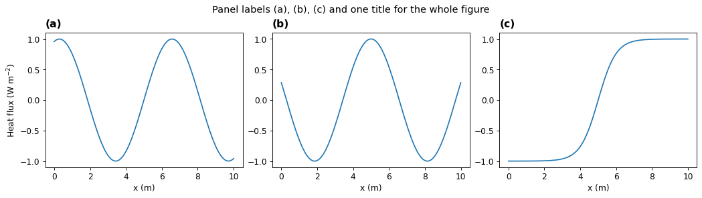
ax.text(0, 1.03, "(a)", transform=ax.transAxes).fig.suptitle() is one title above all panels. ax.set_title() is per panel."W m$^{-2}$" → W m⁻², "km$^2$" → km².import numpy as np
import matplotlib.pyplot as plt
plt.rcParams.update({"font.size": 11}) # base size for ALL text in the figure
x = np.linspace(0, 10, 100)
fig, axes = plt.subplots(1, 3, figsize=(13, 3.6), layout="constrained")
for ax, letter, func in zip(axes, "abc", [np.sin, np.cos, np.tanh]):
ax.plot(x, func(x - 5))
ax.text(0.0, 1.03, f"({letter})", transform=ax.transAxes, # just above the top-left corner
fontsize=14, fontweight="bold", va="bottom")
ax.set_xlabel("x (m)")
axes[0].set_ylabel(r"Heat flux (W m$^{-2}$)") # superscript: m⁻²
fig.suptitle("Panel labels (a), (b), (c) and one title for the whole figure",
fontsize=13)
plt.show()r"$...$"
Matplotlib understands maths written like LaTeX. Put it between dollar signs
inside a raw string r"...", in any title, label, legend, or text.
You do not need to install LaTeX.
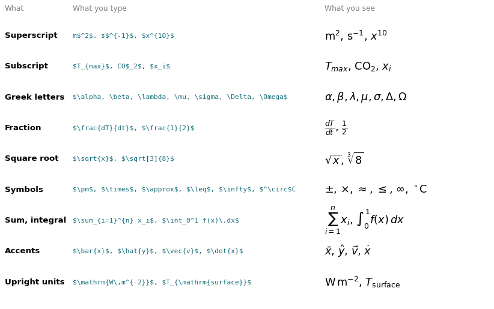
^ raises and _ lowers. Use braces for more than one character: $x^{10}$, $T_{max}$.\alpha, \Delta (capital first letter = capital Greek).$ $ is maths: r"m$^2$" keeps the m upright and raises the 2.\mathrm{...} for units and words inside maths, so they are not italic.import matplotlib.pyplot as plt
examples = [
("Superscript", r"m$^2$, s$^{-1}$, $x^{10}$"),
("Subscript", r"$T_{max}$, CO$_2$, $x_i$"),
("Greek letters", r"$\alpha, \beta, \lambda, \mu, \sigma, \Delta, \Omega$"),
("Fraction", r"$\frac{dT}{dt}$, $\frac{1}{2}$"),
("Square root", r"$\sqrt{x}$, $\sqrt[3]{8}$"),
("Symbols", r"$\pm$, $\times$, $\approx$, $\leq$, $\infty$, $^\circ$C"),
("Sum, integral", r"$\sum_{i=1}^{n} x_i$, $\int_0^1 f(x)\,dx$"),
("Accents", r"$\bar{x}$, $\hat{y}$, $\vec{v}$, $\dot{x}$"),
("Upright units", r"$\mathrm{W\,m^{-2}}$, $T_{\mathrm{surface}}$"),
]
fig, ax = plt.subplots(figsize=(13, 7.5))
ax.axis("off")
ax.text(0.0, 1.06, "What", fontsize=11, color="gray")
ax.text(0.14, 1.06, "What you type", fontsize=11, color="gray")
ax.text(0.66, 1.06, "What you see", fontsize=11, color="gray")
for i, (name, text) in enumerate(examples):
y = 0.97 - i / len(examples)
ax.text(0.0, y, name, fontsize=12, fontweight="bold", va="center")
ax.text(0.14, y, text.replace("$", r"\$"), # show the code itself
family="monospace", fontsize=10, va="center", color="#126b78")
ax.text(0.66, y, text, fontsize=16, va="center") # Matplotlib draws the maths
plt.show()The same maths in a real plot: title, axis labels, legend, and a formula on the plot.
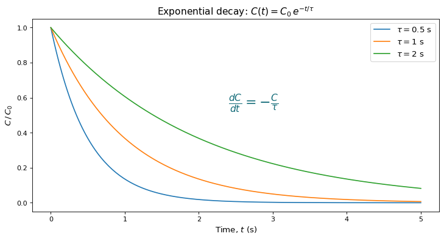
import numpy as np
import matplotlib.pyplot as plt
t = np.linspace(0, 5, 200)
fig, ax = plt.subplots(figsize=(9, 4.8), layout="constrained")
for tau in [0.5, 1, 2]:
ax.plot(t, np.exp(-t / tau), label=rf"$\tau = {tau}$ s") # rf: maths + a variable
ax.set_title(r"Exponential decay: $C(t) = C_0\,e^{-t/\tau}$", fontsize=14)
ax.set_xlabel(r"Time, $t$ (s)", fontsize=12)
ax.set_ylabel(r"$C \,/\, C_0$", fontsize=12)
ax.text(2.4, 0.55, r"$\frac{dC}{dt} = -\frac{C}{\tau}$", fontsize=20, color="#126b78")
ax.legend(fontsize=12)
plt.show()# 1. Maths goes between $ ... $, inside a raw string r"..."
ax.set_xlabel(r"Wavelength $\lambda$ (nm)")
# 2. Why r? Without it, Python reads \t as a TAB:
# "$\tau$" breaks, r"$\tau$" works.
# 3. Maths + a Python variable: rf"..." and DOUBLE braces for LaTeX braces
tau = 2
ax.set_title(rf"$\tau = {tau}$ s, $x^{{2}}$") # {tau} = variable, {{2}} = LaTeX
# 4. Make maths use the same font as the normal text
plt.rcParams["mathtext.fontset"] = "dejavusans" # or "stix" for a journal look
# 5. Full LaTeX for everything (only if LaTeX is installed on your computer)
# plt.rcParams["text.usetex"] = Truecolor · tick_params(colors=)
Every piece of text takes color=. Colouring an axis label and its numbers like
its data line tells the reader immediately which axis belongs to which line.
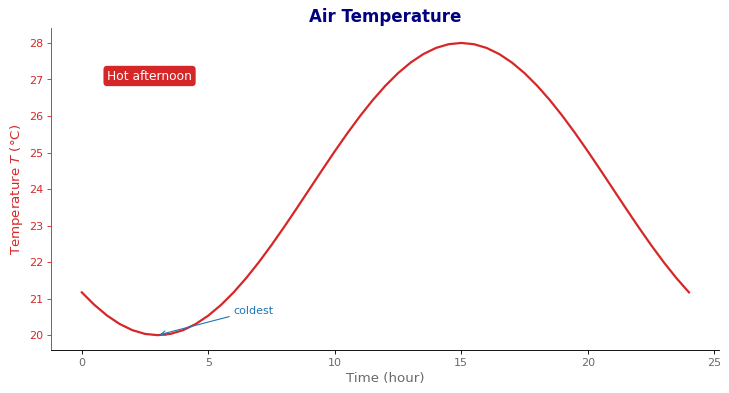
set_title(..., color="navy"), set_xlabel(..., color="dimgray"): colour of titles and labels.tick_params(colors=...) colours tick marks and numbers. labelcolor= colours the numbers only.spines["left"].set_color(...) colours the axis line.bbox={"facecolor": ...} puts coloured text on a coloured box. Make sure the contrast is high enough to read.import numpy as np
import matplotlib.pyplot as plt
hours = np.arange(0, 24.5, 0.5)
temp = 24 + 4 * np.sin((hours - 9) * np.pi / 12)
fig, ax = plt.subplots(figsize=(9, 4.8), layout="constrained")
ax.plot(hours, temp, color="tab:red", linewidth=2)
ax.set_title("Air Temperature", color="navy", fontsize=15, fontweight="bold")
ax.set_xlabel("Time (hour)", color="dimgray", fontsize=12)
ax.set_ylabel(r"Temperature $T$ (°C)", color="tab:red", fontsize=12) # maths in colour too
ax.tick_params(axis="y", colors="tab:red") # y tick marks AND numbers
ax.tick_params(axis="x", labelcolor="dimgray") # only the x numbers
ax.spines["left"].set_color("tab:red") # the y-axis line
ax.spines[["top", "right"]].set_visible(False)
ax.text(1, 27, "Hot afternoon", color="white", fontsize=11,
bbox={"facecolor": "tab:red", "edgecolor": "none", "boxstyle": "round"})
ax.annotate("coldest", xy=(3, 20), xytext=(6, 20.6), color="tab:blue",
arrowprops={"arrowstyle": "->", "color": "tab:blue"})
plt.show()# Dark slides: one line changes every colour
with plt.style.context("dark_background"):
fig, ax = plt.subplots()
ax.plot(hours, temp, color="gold")
ax.set_title("Air Temperature")
plt.show()
# One text colour for the whole figure
plt.rcParams.update({"text.color": "navy", "axes.labelcolor": "navy",
"xtick.color": "navy", "ytick.color": "navy"})rcParams
Changing fontsize= in every command is slow and easy to forget. Set the sizes once
at the top of your script with plt.rcParams.
# One place for all font sizes (put it at the top of your script)
plt.rcParams.update({
"font.size": 11, # default for everything
"axes.titlesize": 13, # ax.set_title
"axes.labelsize": 12, # ax.set_xlabel / set_ylabel
"xtick.labelsize": 10,
"ytick.labelsize": 10,
"legend.fontsize": 10,
})
# Or change one piece of text only
ax.set_title("Air Temperature", fontsize=14, fontweight="bold", color="navy")| Write this | What it does |
|---|---|
ax.set_title("...") | Title of one panel |
fig.suptitle("...") | Title of the whole figure |
ax.text(x, y, "...") | Text at a data position |
transform=ax.transAxes | Position in plot fractions 0–1 |
ax.annotate("...", xy=..., xytext=..., arrowprops={...}) | Text with an arrow |
ax.axhline(25) / ax.axvline(12) | Horizontal / vertical reference line |
plt.imread("photo.png") | Read a picture file |
ax.inset_axes([x, y, w, h]).imshow(photo) | Picture in a corner of the plot |
AnnotationBbox(OffsetImage(icon), xy, xybox) | Icon at a data point, with an arrow |
fontsize=12, fontweight="bold" | Size and weight of one text |
ha="center", va="top" | Alignment: horizontal / vertical |
r"$T_{max}$" | Math text: subscript |
r"m$^{-2}$" | Math text: superscript |
r"$\alpha$, $\Delta T$" | Greek letters |
r"$\frac{dT}{dt}$" | Fraction |
rf"$\tau = {tau}$" | Maths with a Python variable |
color="navy" | Colour of any title, label, or text |
ax.tick_params(colors="tab:red") | Colour of tick marks and numbers |
How to write colours, which colours everyone can see, and how to use colour to guide the eye.
color="..."Every plotting command accepts color=, written in any of these ways:
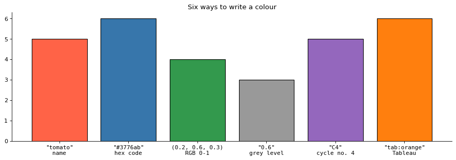
"tomato", "navy", "darkgreen": easy to read in code."#3776ab": exact colours, for example from your institute's style."0" (black) to "1" (white)."C0" … "C9": the default colours, in the order Matplotlib uses them.import matplotlib.pyplot as plt
colors = ["tomato", "#3776ab", (0.2, 0.6, 0.3), "0.6", "C4", "tab:orange"]
labels = ['"tomato"\nname', '"#3776ab"\nhex code', "(0.2, 0.6, 0.3)\nRGB 0-1",
'"0.6"\ngrey level', '"C4"\ncycle no. 4', '"tab:orange"\nTableau']
fig, ax = plt.subplots(figsize=(11, 3.8), layout="constrained")
ax.bar(range(len(colors)), [5, 6, 4, 3, 5, 6], color=colors, edgecolor="black")
ax.set_xticks(range(len(colors)), labels, family="monospace", fontsize=10)
ax.set_title("Six ways to write a colour")
ax.spines[["top", "right"]].set_visible(False)
plt.show()About 1 in 12 men has some colour-vision deficiency. Red and green are the usual problem. The Okabe-Ito palette was designed to stay distinguishable for them:
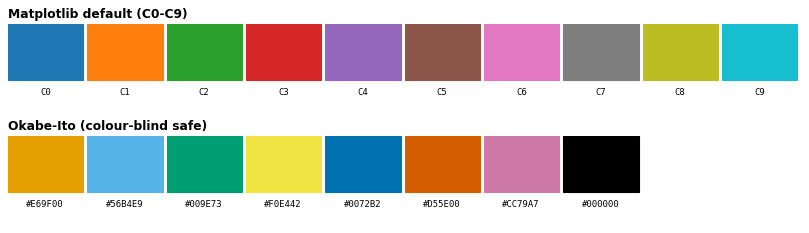
import matplotlib.pyplot as plt
palettes = {
"Matplotlib default (C0-C9)": [f"C{i}" for i in range(10)],
"Okabe-Ito (colour-blind safe)": ["#E69F00", "#56B4E9", "#009E73", "#F0E442",
"#0072B2", "#D55E00", "#CC79A7", "#000000"],
}
fig, axes = plt.subplots(2, 1, figsize=(10, 2.8), layout="constrained")
for ax, (name, colors) in zip(axes, palettes.items()):
for i, color in enumerate(colors):
ax.add_patch(plt.Rectangle((i, 0), 0.95, 1, color=color))
ax.text(i + 0.47, -0.15, color, ha="center", va="top",
family="monospace", fontsize=8)
ax.set_xlim(0, 10)
ax.set_ylim(-0.6, 1)
ax.set_title(name, loc="left", fontsize=11, fontweight="bold")
ax.axis("off")
plt.show()# Use your own colours for every new line, automatically
from cycler import cycler
okabe_ito = ["#E69F00", "#56B4E9", "#009E73", "#0072B2", "#D55E00", "#CC79A7"]
plt.rcParams["axes.prop_cycle"] = cycler(color=okabe_ito)
# Colour by group from a dictionary: same group = same colour in every figure
group_colors = {"Control": "0.5", "Low dose": "#56B4E9", "High dose": "#D55E00"}
for name, values in groups.items():
ax.plot(values, color=group_colors[name], label=name)The strongest colour trick is to use less colour. Draw everything in grey and only the important line in a strong colour. The reader's eye goes straight to it.
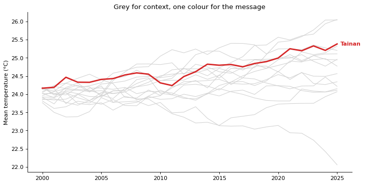
import numpy as np
import matplotlib.pyplot as plt
rng = np.random.default_rng(4)
years = np.arange(2000, 2026)
fig, ax = plt.subplots(figsize=(9, 4.5), layout="constrained")
# Context: all stations in light grey
for _ in range(15):
ax.plot(years, 24 + np.cumsum(rng.normal(0.02, 0.15, len(years))),
color="lightgray", linewidth=1)
# The story: one station in a strong colour, drawn on top
tainan = 24 + np.cumsum(rng.normal(0.06, 0.12, len(years)))
ax.plot(years, tainan, color="#d62728", linewidth=2.5)
ax.text(years[-1] + 0.3, tainan[-1], "Tainan", color="#d62728",
fontweight="bold", va="center")
ax.set_title("Grey for context, one colour for the message")
ax.set_ylabel("Mean temperature (°C)")
ax.spines[["top", "right"]].set_visible(False)
plt.show()| Write this | What it does |
|---|---|
color="tomato" | Named colour |
color="#3776ab" | Hex colour |
color=(0.2, 0.6, 0.3) | RGB from 0 to 1 |
color="0.6" | Grey level (0 black … 1 white) |
color="C0" | Default colour number 0 |
edgecolor="black" | Outline colour of bars, markers, patches |
plt.rcParams["axes.prop_cycle"] | Your own default colour order |
Transparency lets overlapping data show through, and makes uncertainty bands possible.
alpha
alpha goes from 1 (solid) to 0 (invisible). With thousands of
points, solid markers merge into one blob. Transparent markers show where the data are
dense: overlapping points add up to a darker colour.
import numpy as np
import matplotlib.pyplot as plt
rng = np.random.default_rng(2)
x = rng.normal(0, 1, 5000)
y = x + rng.normal(0, 0.6, 5000)
fig, axes = plt.subplots(1, 3, figsize=(14, 4), layout="constrained",
sharex=True, sharey=True)
for ax, alpha in zip(axes, [1.0, 0.3, 0.05]):
ax.scatter(x, y, s=8, alpha=alpha, color="tab:blue")
ax.set_title(f"alpha={alpha}")
plt.show()fill_between · histA transparent band shows an uncertainty range without hiding the line or the grid. Two transparent histograms can be compared in the same place.
import numpy as np
import matplotlib.pyplot as plt
rng = np.random.default_rng(6)
days = np.arange(60)
mean = 25 + 3 * np.sin(days / 9)
spread = 0.8 + 0.6 * np.abs(np.sin(days / 15))
fig, (ax1, ax2) = plt.subplots(1, 2, figsize=(13, 4.2), layout="constrained")
# (a) A transparent band shows the uncertainty around a line
ax1.fill_between(days, mean - spread, mean + spread,
color="tab:blue", alpha=0.25, label="± 1 SD")
ax1.plot(days, mean, color="tab:blue", label="Mean")
ax1.legend()
ax1.set_title("(a) fill_between(..., alpha=0.25)")
ax1.set_xlabel("Day")
ax1.set_ylabel("Temperature (°C)")
# (b) Two histograms on top of each other: both stay visible
ax2.hist(rng.normal(70, 8, 500), bins=25, alpha=0.5, label="Class A")
ax2.hist(rng.normal(78, 8, 500), bins=25, alpha=0.5, label="Class B")
ax2.legend()
ax2.set_title("(b) overlapping histograms, alpha=0.5")
ax2.set_xlabel("Score")
plt.show()transparent=True# Transparent background: the figure blends into slides of any colour
fig.savefig("figure.png", dpi=300, transparent=True)
# Colour with its own transparency: (red, green, blue, alpha)
ax.plot(x, y, color=(0.2, 0.4, 0.8, 0.5))
# Transparent face, solid edge: overlapping points stay outlined
ax.scatter(x, y, s=60, facecolor=(0.2, 0.4, 0.8, 0.2), edgecolor="navy")alpha=0.2–0.3. For overlapping histograms, 0.5. For dense scatter, 0.05–0.3.| Write this | What it does |
|---|---|
alpha=0.3 | Transparency of one plot element |
ax.fill_between(x, low, high, alpha=0.25) | Transparent band |
color=(0.2, 0.4, 0.8, 0.5) | Colour with its own alpha (RGBA) |
facecolor=(…, 0.2), edgecolor="navy" | Transparent inside, solid outline |
fig.savefig("f.png", transparent=True) | No background behind the figure |
Make a plot with a colorbar on the left that is 70% of the plot height.
Your temperature map has values from 5 to 35 °C, but you only care about 15–30 °C. Show this on the colorbar.
Which colormap would you use for (a) rainfall, (b) temperature anomaly, (c) wind direction?
Two maps (January and July) need one colorbar. Write the key lines.
Plot measured values as hollow squares and the model as a dashed line.
Put the legend outside the plot, to the right.
Show depth increasing downward and use a log scale for concentration on the x-axis.
Add an arrow pointing to the highest value in a line plot.
Label the y-axis "Energy flux (W m⁻²)" with a real superscript.
You have 20 000 scatter points that look like one blob. Fix it.
image = ax.imshow(data, cmap="viridis")
fig.colorbar(image, ax=ax, location="left", shrink=0.7)image = ax.imshow(temp, cmap="viridis", vmin=15, vmax=30)
fig.colorbar(image, ax=ax, extend="both", label="Temperature (°C)")The pointed ends tell the reader that some values are colder than 15 or warmer than 30.
"Blues"."RdBu_r" with vmin = −vmax."twilight".fig, axes = plt.subplots(1, 2, layout="constrained")
for ax, data in zip(axes, [jan, jul]):
image = ax.imshow(data, cmap="viridis", vmin=15, vmax=30)
fig.colorbar(image, ax=axes, location="bottom", shrink=0.6, label="SST (°C)")ax.plot(x, measured, "s", markerfacecolor="white", markeredgecolor="black", label="Measured")
ax.plot(x, model, "--", color="gray", label="Model")
ax.legend()ax.plot(x, y, label="Station A")
ax.legend(loc="upper left", bbox_to_anchor=(1.02, 1))
fig.savefig("plot.png", bbox_inches="tight") # do not cut it offax.plot(concentration, depth, "o-")
ax.invert_yaxis()
ax.set_xscale("log")
ax.set_xlabel("Concentration (µg/L)")
ax.set_ylabel("Depth (m)")i = np.argmax(y)
ax.annotate(f"Max: {y[i]:.1f}", xy=(x[i], y[i]),
xytext=(x[i] + 1, y[i] - 1),
arrowprops={"arrowstyle": "->"})ax.set_ylabel(r"Energy flux (W m$^{-2}$)")ax.scatter(x, y, s=4, alpha=0.1)Dense areas become darker, so the shape of the cloud appears. For even more points, try ax.hexbin(x, y, gridsize=50).
plt.plot. Save what imshow, contourf, or scatter(c=...) returns, and pass it: fig.colorbar(image, ax=ax).
shrink= (for example 0.8), or create the figure with layout="constrained", which sizes colorbars to fit the plot.
plt. changes the current plot, ax. changes a specific one. With subplots, always use ax. so you know exactly which panel you change.
label= appear. Also call ax.legend() after drawing all lines.
plt.rcParams at the top of every script, or save them in a style file and load it with plt.style.use("my_style.mplstyle").
fig.savefig("figure.png", dpi=300, bbox_inches="tight"), or create the figure with layout="constrained".
An animation is useful when time matters: a moving weather field, ocean current, changing temperature map, simulation result, or model training process.
Create the axes and first plot.
Change the plot for each frame.
Tell Python how many time steps to show.
import numpy as np
import matplotlib.pyplot as plt
from matplotlib.animation import FuncAnimation
x = np.linspace(0, 2 * np.pi, 100)
fig, ax = plt.subplots()
line, = ax.plot(x, np.sin(x))
ax.set_ylim(-1.2, 1.2)
def update(frame):
y = np.sin(x + frame / 10)
line.set_ydata(y)
return line,
animation = FuncAnimation(
fig,
update,
frames=100,
interval=50
)
plt.show()# GIF file
animation.save("wave.gif", writer="pillow", fps=20)
# MP4 file
animation.save("wave.mp4", writer="ffmpeg", fps=20)Saving MP4 files usually requires FFmpeg. GIF files often work with Pillow, but they can become large for many frames.
Animate a sine wave that moves to the right.
Make the animation run faster by changing one setting.
Save the animation as a GIF.
Show the frame number as the title of each frame.
Animate a point moving around a circle.
Animate a line that grows one data point at a time.
Animate a bar chart where bar heights change.
Animate a 2D temperature map that changes over time.
Show the date of each map frame in the title.
Make the animation play only once instead of looping.
Display an animation inside a Jupyter notebook.
Save an MP4 video at 300 dpi quality.
Animate a scatter plot of moving particles.
Keep a fixed colour scale across all frames of a map.
Animate a trail: show the last 10 positions of a moving point.
Animate two lines at the same time.
Make a simple animation by saving one PNG per frame.
Join those PNG frames into a GIF with Pillow.
Calculate how many frames you need for a 6-second video at 20 fps.
Animate a growing population curve (exponential growth).
import numpy as np
import matplotlib.pyplot as plt
from matplotlib.animation import FuncAnimation
x = np.linspace(0, 2 * np.pi, 200)
fig, ax = plt.subplots()
line, = ax.plot(x, np.sin(x))
def update(frame):
line.set_ydata(np.sin(x - frame / 10))
return line,
anim = FuncAnimation(fig, update, frames=120, interval=40)
plt.show()anim = FuncAnimation(fig, update, frames=120, interval=15)
# a smaller interval (milliseconds between frames) is fasteranim.save("wave.gif", writer="pillow", fps=25)def update(frame):
line.set_ydata(np.sin(x - frame / 10))
ax.set_title(f"Frame {frame}")
return line,fig, ax = plt.subplots()
ax.set_xlim(-1.2, 1.2)
ax.set_ylim(-1.2, 1.2)
ax.set_aspect("equal")
point, = ax.plot([], [], "o", markersize=12)
def update(frame):
angle = frame / 20
point.set_data([np.cos(angle)], [np.sin(angle)])
return point,
anim = FuncAnimation(fig, update, frames=126, interval=30)
plt.show()values = np.cumsum(np.random.randn(100))
fig, ax = plt.subplots()
ax.set_xlim(0, 100)
ax.set_ylim(values.min() - 1, values.max() + 1)
line, = ax.plot([], [])
def update(frame):
line.set_data(range(frame), values[:frame])
return line,
anim = FuncAnimation(fig, update, frames=101, interval=50)
plt.show()fig, ax = plt.subplots()
bars = ax.bar(["A", "B", "C"], [1, 1, 1])
ax.set_ylim(0, 10)
def update(frame):
for bar in bars:
bar.set_height(np.random.uniform(1, 9))
return bars
anim = FuncAnimation(fig, update, frames=30, interval=300)
plt.show()frames = np.random.uniform(20, 30, size=(24, 50, 50)) # time, lat, lon
fig, ax = plt.subplots()
image = ax.imshow(frames[0], cmap="coolwarm")
fig.colorbar(image, label="Temperature (°C)")
def update(t):
image.set_data(frames[t])
return image,
anim = FuncAnimation(fig, update, frames=len(frames), interval=200)
plt.show()import pandas as pd
dates = pd.date_range("2026-01-01", periods=len(frames), freq="h")
def update(t):
image.set_data(frames[t])
ax.set_title(dates[t].strftime("%Y-%m-%d %H:%M"))
return image,anim = FuncAnimation(fig, update, frames=120, interval=40, repeat=False)from IPython.display import HTML
HTML(anim.to_jshtml())anim.save("wave.mp4", writer="ffmpeg", fps=25, dpi=300)positions = np.random.rand(30, 2)
velocity = (np.random.rand(30, 2) - 0.5) * 0.02
fig, ax = plt.subplots()
ax.set_xlim(0, 1)
ax.set_ylim(0, 1)
dots = ax.scatter(positions[:, 0], positions[:, 1])
def update(frame):
global positions
positions = (positions + velocity) % 1 # wrap around the edges
dots.set_offsets(positions)
return dots,
anim = FuncAnimation(fig, update, frames=200, interval=30)
plt.show()image = ax.imshow(frames[0], cmap="coolwarm",
vmin=frames.min(), vmax=frames.max())Without vmin and vmax, colours could mean different temperatures in different frames.
t = np.linspace(0, 4 * np.pi, 200)
x_path, y_path = np.cos(t) * t, np.sin(t) * t
fig, ax = plt.subplots()
ax.set_xlim(-13, 13)
ax.set_ylim(-13, 13)
trail, = ax.plot([], [], "-o", markersize=3)
def update(frame):
start = max(0, frame - 10)
trail.set_data(x_path[start:frame], y_path[start:frame])
return trail,
anim = FuncAnimation(fig, update, frames=len(t), interval=30)
plt.show()fig, ax = plt.subplots()
sin_line, = ax.plot(x, np.sin(x), label="sin")
cos_line, = ax.plot(x, np.cos(x), label="cos")
ax.legend()
def update(frame):
sin_line.set_ydata(np.sin(x + frame / 10))
cos_line.set_ydata(np.cos(x + frame / 10))
return sin_line, cos_line
anim = FuncAnimation(fig, update, frames=100, interval=40)
plt.show()from pathlib import Path
Path("frames").mkdir(exist_ok=True)
for i in range(30):
plt.figure()
plt.plot(x, np.sin(x + i / 5))
plt.ylim(-1.2, 1.2)
plt.savefig(f"frames/frame_{i:03d}.png")
plt.close()from PIL import Image
files = sorted(Path("frames").glob("frame_*.png"))
images = [Image.open(f) for f in files]
images[0].save("wave.gif", save_all=True,
append_images=images[1:], duration=80, loop=0)seconds = 6
fps = 20
frames = seconds * fps
print(frames) # 120years = np.arange(0, 51)
population = 1000 * np.exp(0.05 * years)
fig, ax = plt.subplots()
ax.set_xlim(0, 50)
ax.set_ylim(0, population.max() * 1.05)
line, = ax.plot([], [])
def update(frame):
line.set_data(years[:frame], population[:frame])
ax.set_title(f"Year {frame}")
return line,
anim = FuncAnimation(fig, update, frames=len(years) + 1, interval=80)
plt.show()anim = FuncAnimation(...), not just FuncAnimation(...). Otherwise Python deletes it immediately. In Jupyter, show it with HTML(anim.to_jshtml()).
conda install ffmpeg, or download it and add it to PATH), or save a GIF with writer="pillow" instead.
interval and fps?
interval (milliseconds) controls playback speed on screen. fps (frames per second) sets the speed of the saved file. 50 ms ≈ 20 fps.
line, = ax.plot(...)?
ax.plot returns a list of lines. The comma unpacks the first (and only) line, so you can update it later with line.set_ydata().
set_data, set_ydata) is much faster than clearing and plotting again for every frame, especially for long animations.
dpi, a smaller figure size, or save as MP4, which compresses video much better than GIF.
blit=True do?
blit off.
A publication-quality graph is clear, honest, readable, and consistent. A reader should understand the main message without searching through your code or guessing the units. This won't gaurentee the publish of your paper. But it will make your paper a good standard.
Many students and early-career researchers struggle to make clear, good-quality figures. A plot looks perfect in the Python window, but once it is placed in the manuscript, it suddenly looks poor: the lines are blurry, the text is far too small (or too large), and the image is wider than the text column.
The usual quick fix is to drag the picture smaller or larger in Word, or to set its width and height in LaTeX. But resizing a finished image cannot add detail. It only stretches or squeezes the pixels that are already there, so the figure becomes distorted and pixelated.
Same data, same plot. The right-hand figure was saved at screen resolution in a large window, then stretched to fit the page. Click either picture to compare them at full size.
The fix for blurry, oversized figures is simple: create the figure at its final size, with final font sizes, and save it in a sharp format. Then you never resize it in the manuscript. These are the rules, one by one.
Matplotlib's figsize is in inches (1 in = 2.54 cm). Make the figure exactly as wide as it will be printed. Then you insert it at 100% and never drag or stretch it.
figsize=(7, …), which is 17.8 cm.figsize=(3.5, …), which is 8.9 cm.| Example | One column | Full width |
|---|---|---|
| Elsevier journals | 90 mm (3.5 in) | 190 mm (7.5 in) |
| Nature journals | 89 mm (3.5 in) | 183 mm (7.2 in) |
| Springer journals | 84 mm (3.3 in) | 174 mm (6.9 in) |
| Thesis in Word, A4 with 2.5 cm margins | — | 16 cm (6.3 in) |
These are typical values. Always check the author guidelines of your journal for the exact widths.
import matplotlib.pyplot as plt
# figsize is in INCHES (1 inch = 2.54 cm)
fig, ax = plt.subplots(figsize=(7, 4)) # full text width (7 in = 17.8 cm)
fig, ax = plt.subplots(figsize=(3.5, 2.6)) # one column (3.5 in = 8.9 cm)
fig, axes = plt.subplots(1, 2, figsize=(7, 2.8)) # two panels side by side, 3.5 in each
# Think in centimetres? Convert once:
cm = 1 / 2.54
fig, ax = plt.subplots(figsize=(17 * cm, 9 * cm))dpi = dots (pixels) per inch. The pixel width of a PNG is inches × dpi: a 7-inch figure at 600 dpi is 4200 pixels wide. Use at least 300 dpi, and 600 dpi for line plots with thin lines and small text.
Raising the dpi later in Word does not help: the missing pixels never come back. Choose it when you save.
# Raster image (for Word, PowerPoint): at least 300 dpi, 600 for line plots
fig.savefig("figure1.png", dpi=600)
# Vector image (for LaTeX, and many journals): sharp at any zoom, no dpi needed
fig.savefig("figure1.pdf")
# Only if the journal asks for these formats
fig.savefig("figure1.tiff", dpi=600)
fig.savefig("figure1.eps")
# Not for plots: .jpg / .jpeg. Its compression adds grey specks around
# lines and text, and they get worse every time the file is saved again.Default figures often have a wide empty border, a title far above the plot, and a colorbar far to the side. That wastes space on the page, and the plot itself ends up small. Use a tidy layout and small padding values.
layout="constrained" arranges plots, labels and colorbars automatically.pad= in set_title and colorbar, and labelpad= in axis labels, set each gap.bbox_inches="tight", pad_inches=0.03 when saving cuts away the empty border.fig, ax = plt.subplots(figsize=(3.5, 3), layout="constrained") # tidy spacing
image = ax.imshow(data, cmap="viridis")
ax.set_title("Sea-surface temperature", pad=6) # gap: title <-> plot (points)
ax.set_xlabel("Longitude (°E)", labelpad=3) # gap: label <-> tick numbers
fig.colorbar(image, ax=ax, pad=0.02) # gap: plot <-> colorbar
fig.savefig("figure1.png", dpi=600,
bbox_inches="tight", # cut away the empty border
pad_inches=0.03) # keep only a thin marginA map that is wider than it is tall leaves a colorbar sticking out above and below it. It looks careless and wastes height. Make the colorbar exactly as tall as the map.
import matplotlib.pyplot as plt
from mpl_toolkits.axes_grid1 import make_axes_locatable
fig, ax = plt.subplots(figsize=(3.5, 2.6))
image = ax.imshow(data, cmap="viridis", origin="lower")
# A colorbar axes glued to the right side of the map, exactly as tall as it
cax = make_axes_locatable(ax).append_axes("right", size="4%", pad=0.08)
fig.colorbar(image, cax=cax, label="SST (°C)")
# Simpler option for most plots: constrained layout + shrink
# fig, ax = plt.subplots(figsize=(3.5, 2.6), layout="constrained")
# fig.colorbar(image, ax=ax, shrink=0.8)Manuscript text is usually 10–12 pt. Text in figures should be a little smaller than the body text, and never smaller than about 7 pt at printed size.
| Text in the figure | One figure in a row (7 in) | Two figures in a row (3.5 in each) |
|---|---|---|
| Axis labels | 10–11 pt | 9–10 pt |
| Title (if used) | 10–11 pt | 10 pt |
| Tick numbers | 9–10 pt | 8–9 pt |
| Legend | 9 pt | 8–9 pt |
import matplotlib.pyplot as plt
plt.rcParams.update({
"font.size": 10, # default for all text
"axes.labelsize": 10, # axis labels
"axes.titlesize": 11, # title
"xtick.labelsize": 9, # tick numbers
"ytick.labelsize": 9,
"legend.fontsize": 9, # legend
})When each panel is made at 3.5 in, the point sizes you set are the sizes readers see. You may go one point smaller if a panel is crowded.
The real mistake is making a figure at 7 in and then shrinking it to half the width in Word or LaTeX: every font becomes half its size.
A figure in Arial inside a paper set in Times New Roman looks pasted in. Use the font of the manuscript, and a matching font for maths.
import matplotlib.pyplot as plt
# Manuscript in Times New Roman (Word templates of many journals)
plt.rcParams.update({"font.family": "Times New Roman",
"mathtext.fontset": "stix"}) # maths that matches Times
# Manuscript in Arial / Helvetica
plt.rcParams.update({"font.family": "Arial",
"mathtext.fontset": "dejavusans"})
# LaTeX manuscript (Computer Modern), only if LaTeX is installed:
# plt.rcParams.update({"text.usetex": True, "font.family": "serif"})"serif" / "sans-serif".They list the exact figure widths, accepted formats (often TIFF, EPS, or PDF), the minimum font size and line width, and the maximum file size. Five minutes of reading saves a resubmission.
Some journals reject PDFs whose fonts are not embedded. With font type 42, Matplotlib embeds the real font, and the text stays editable.
import matplotlib.pyplot as plt
plt.rcParams["pdf.fonttype"] = 42 # embed real fonts in PDF (journals accept them,
plt.rcParams["ps.fonttype"] = 42 # and text stays editable in Illustrator/Inkscape)Because the figure already has its final size, insert it without resizing. In Word, check Format Picture → Size → Scale = 100%. In LaTeX, leave out width=.
% LaTeX: the PDF was already made at full text width (7 in)
\begin{figure}[t]
\centering
\includegraphics{figure1.pdf} % no width= or scale=: it is used at 100%
\caption{Daily mean temperature at Taipei and Tainan, January 2026.}
\end{figure}Hairlines disappear in print. Use lines of 1–1.5 pt (never below 0.5 pt) and markers of 3–5 pt. Axis lines of 0.8 pt look clean.
Most journals put the description in the caption under the figure, not in a title inside it. Use panel labels (a), (b) instead, and keep titles for slides and posters.
A vector PDF stores every single point. With huge scatter plots or dense maps, rasterize only the data and keep the text as vectors.
# A PDF with 100 000 scatter points is huge and slow to open.
# rasterized=True turns only the points into a picture inside the PDF;
# axes, labels and text stay sharp vector graphics.
ax.scatter(x, y, s=2, rasterized=True)
fig.savefig("figure1.pdf", dpi=600) # dpi is used for the rasterized partOpen the saved file at 100% zoom, or print the page, before you submit. Check that every label is readable, the colours work in greyscale, and all figures in the paper look the same.
This script follows all the rules above: two panels side by side at 3.5 in each (7 in in total), Times New Roman, the font sizes from the table, panel labels, a colorbar that fits, no empty border, and PNG + PDF files at 600 dpi.
import numpy as np
import matplotlib.pyplot as plt
# ---- 1. One style for every figure of the paper ----
plt.rcParams.update({
"font.family": "Times New Roman", # same font as the manuscript
"mathtext.fontset": "stix",
"font.size": 10,
"axes.titlesize": 11,
"axes.labelsize": 10,
"xtick.labelsize": 9,
"ytick.labelsize": 9,
"legend.fontsize": 9,
"axes.linewidth": 0.8,
"lines.linewidth": 1.4,
"pdf.fonttype": 42, # embed fonts in the PDF
"savefig.dpi": 600, # high resolution PNG
"savefig.bbox": "tight", # no empty border ...
"savefig.pad_inches": 0.03, # ... only a thin margin
})
# ---- 2. Example data ----
days = np.arange(1, 32)
taipei = 16 + 3 * np.sin(days / 5) + 0.4 * np.cos(days * 1.7)
tainan = 19 + 2.5 * np.sin(days / 5 + 0.6) + 0.4 * np.sin(days * 1.3)
lon, lat = np.meshgrid(np.linspace(118, 124, 60), np.linspace(20, 27, 70))
sst = 29 - 0.8 * (lat - 20) + 0.6 * np.sin(lon * 1.5)
# ---- 3. Two panels side by side: 3.5 in each = 7 in = full text width ----
fig, (ax1, ax2) = plt.subplots(1, 2, figsize=(7, 2.8), layout="constrained")
ax1.plot(days, taipei, "o-", markersize=3, label="Taipei")
ax1.plot(days, tainan, "s--", markersize=3, label="Tainan")
ax1.set_xlabel("Day of January 2026")
ax1.set_ylabel("Mean temperature (°C)")
ax1.legend(frameon=False)
image = ax2.imshow(sst, origin="lower", extent=[118, 124, 20, 27], cmap="viridis")
fig.colorbar(image, ax=ax2, shrink=0.95, pad=0.02, label="SST (°C)")
ax2.set_xlabel("Longitude (°E)")
ax2.set_ylabel("Latitude (°N)")
for ax, letter in zip((ax1, ax2), "ab"): # panel labels instead of titles
ax.text(0, 1.03, f"({letter})", transform=ax.transAxes,
fontweight="bold", va="bottom")
# ---- 4. Save: PNG for Word, PDF for LaTeX. Never JPG. ----
fig.savefig("figure1.png")
fig.savefig("figure1.pdf")
plt.show()figure1.png is 7 in × 600 dpi ≈ 4200 pixels wide: sharp in Word at 100%.figure1.pdf is a vector file: use it in LaTeX with \includegraphics{figure1.pdf}.rcParams block in its own file (for example paper_style.py) and import it in every script, so all figures match.Describe the figure accurately.
Include variables and units.
Keep text large enough after printing.
Use clear, colour-blind-friendly contrast.
Explain multiple lines or groups.
Save at 300 dpi or higher.
import matplotlib.pyplot as plt
plt.rcParams.update({
"font.family": "Arial", # the font of your manuscript
"font.size": 10,
"axes.titlesize": 11,
"axes.labelsize": 10,
"xtick.labelsize": 9,
"ytick.labelsize": 9,
"legend.fontsize": 9,
"axes.linewidth": 0.8
})import matplotlib.pyplot as plt
plt.figure(figsize=(7, 3.5)) # full text width: inserted at 100%
plt.plot(
days,
temperature,
color="#0072B2",
linewidth=1.5,
marker="o",
markersize=4,
label="Observed temperature"
)
plt.xlabel("Day")
plt.ylabel("Temperature (°C)")
plt.title("Daily Sea-Surface Temperature")
plt.grid(True, alpha=0.25)
plt.legend(frameon=False)
plt.tight_layout()
plt.savefig("figure_temperature.png", dpi=600, bbox_inches="tight") # for Word
plt.savefig("figure_temperature.pdf", bbox_inches="tight") # for LaTeX
plt.show()Use colour to distinguish important groups—not to decorate every element. Too many colours make a graph harder to read.
Set the default font size of all figures to 11 with rcParams.
Create a figure exactly 8.5 cm wide and 6 cm tall (a journal column).
Save a figure as PNG at 300 dpi and as a vector PDF.
Use the colour-blind-friendly colours shown above for three lines.
Remove the top and right border lines (spines) of a plot.
Add panel letters (a) and (b) to two subplots.
Write a unit with a superscript, like m² or W m⁻², on an axis.
Place the legend outside the plot area.
Add error bars to a line plot.
Add a shaded uncertainty band around a line.
Use a built-in style such as seaborn-v0_8-whitegrid.
Make subplots share the same y-axis so they are easy to compare.
Use a perceptually uniform colour map for a map plot.
Add an arrow and text to point out an important event.
Use different line styles as well as colours so a black-and-white print still works.
Make tick labels show 1,000 separators or percentages.
Write a function save_figure(fig, name) that saves PNG and PDF versions.
Keep fonts editable when saving an SVG for Illustrator or Inkscape.
Check the real pixel size of a saved PNG with Pillow.
Turn the checklist above into a function that warns about missing labels.
import matplotlib.pyplot as plt
plt.rcParams["font.size"] = 11cm = 1 / 2.54 # Matplotlib uses inches
fig, ax = plt.subplots(figsize=(8.5 * cm, 6 * cm))fig.savefig("figure1.png", dpi=300, bbox_inches="tight")
fig.savefig("figure1.pdf", bbox_inches="tight") # vector: sharp at any sizecolors = ["#0072B2", "#D55E00", "#009E73"]
names = ["Taipei", "Tainan", "Kaohsiung"]
for color, name in zip(colors, names):
ax.plot(days, data[name], color=color, label=name)
ax.legend()ax.spines["top"].set_visible(False)
ax.spines["right"].set_visible(False)fig, axes = plt.subplots(1, 2, figsize=(9, 3.5))
for ax, letter in zip(axes, ["(a)", "(b)"]):
ax.text(0.02, 0.95, letter, transform=ax.transAxes,
fontweight="bold", va="top")ax.set_ylabel("Area (m$^2$)")
ax.set_xlabel("Heat flux (W m$^{-2}$)")ax.legend(loc="upper left", bbox_to_anchor=(1.02, 1), frameon=False)
fig.tight_layout()ax.errorbar(days, means, yerr=stds, marker="o", capsize=4)import numpy as np
mean = np.array(means)
std = np.array(stds)
ax.plot(days, mean, color="#0072B2")
ax.fill_between(days, mean - std, mean + std, color="#0072B2", alpha=0.2)print(plt.style.available)
plt.style.use("seaborn-v0_8-whitegrid")fig, axes = plt.subplots(1, 3, figsize=(10, 3), sharey=True)image = ax.pcolormesh(lon, lat, temperature, cmap="viridis")
fig.colorbar(image, label="Temperature (°C)")viridis, cividis, and magma change brightness evenly and stay readable for colour-blind readers. Avoid jet.
ax.annotate("Typhoon passes",
xy=(15, 24.1), xytext=(20, 27),
arrowprops=dict(arrowstyle="->"))styles = ["-", "--", ":"]
markers = ["o", "s", "^"]
for name, style, marker in zip(names, styles, markers):
ax.plot(days, data[name], linestyle=style, marker=marker, label=name)from matplotlib.ticker import FuncFormatter, PercentFormatter
ax.yaxis.set_major_formatter(FuncFormatter(lambda v, _: f"{v:,.0f}"))
# or, for values between 0 and 1:
ax.yaxis.set_major_formatter(PercentFormatter(xmax=1))from pathlib import Path
def save_figure(fig, name, folder="figures"):
Path(folder).mkdir(exist_ok=True)
for extension in ["png", "pdf"]:
fig.savefig(f"{folder}/{name}.{extension}", dpi=300, bbox_inches="tight")
save_figure(fig, "temperature_timeseries")plt.rcParams["svg.fonttype"] = "none" # keep text as text, not shapes
fig.savefig("figure1.svg")from PIL import Image
image = Image.open("figure1.png")
print(image.size) # (width, height) in pixels
print(image.info.get("dpi"))def check_figure(ax):
problems = []
if not ax.get_title():
problems.append("missing title")
if not ax.get_xlabel():
problems.append("missing x-axis label")
if not ax.get_ylabel():
problems.append("missing y-axis label")
if len(ax.get_lines()) > 1 and ax.get_legend() is None:
problems.append("several lines but no legend")
print("Looks good!" if not problems else "Fix: " + ", ".join(problems))
check_figure(ax)"DejaVu Sans" or "sans-serif", or install the font and clear Matplotlib's font cache.
bbox_inches="tight" in savefig, or call fig.tight_layout() before saving. Both make room for labels outside the axes.
viridis family, and test your image with a colour-blindness simulator such as Coblis. Different line styles or markers add extra safety.
rcParams settings in one style file (for example thesis.mplstyle) and load it with plt.style.use("thesis.mplstyle") at the start of every script.
Keep asking good questions, checking your data carefully, and making figures that communicate clearly.